A1_flowkit · Fable 5.2 · attempt ZFCf3es
Batch fb2 · job fb2_A_base_screen_rep2_flowkit_claude-fable-5-2 · trial A_base_screen_rep2_flowkit__ZFCf3es. Long tool outputs are cut at 6,000 characters.
Score
0.43
0.43
Minutes
16.3
16.3
Agent cost
$5.51
$5.51
Steps
139
139
Screenshots / images
14
14
2
tool call · Bash
cd /task; ls -la inputs inputs/raw | head -60; cat inputs/gating_strategy.md; cat inputs/plate_layout.csv; ls outputs
3
tool output
inputs:
total 20
dr-xr-xr-x 3 root root 4096 Nov 10 16:58 .
drwxr-xr-x 4 root root 4096 Nov 10 17:03 ..
-r--r--r-- 1 root root 3051 Nov 10 16:58 gating_strategy.md
-r--r--r-- 1 root root 3037 Nov 10 16:58 plate_layout.csv
dr-xr-xr-x 2 root root 4096 Nov 10 16:58 raw
inputs/raw:
total 330096
dr-xr-xr-x 2 root root 4096 Nov 10 16:58 .
dr-xr-xr-x 3 root root 4096 Nov 10 16:58 ..
-r--r--r-- 1 root root 6608908 Nov 10 16:58 Caspase_KO_RNAswap-rep2_caspase_Group_A1.fcs
-r--r--r-- 1 root root 12097360 Nov 10 16:58 Caspase_KO_RNAswap-rep2_caspase_Group_A10.fcs
-r--r--r-- 1 root root 8236216 Nov 10 16:58 Caspase_KO_RNAswap-rep2_caspase_Group_A11.fcs
-r--r--r-- 1 root root 11918584 Nov 10 16:58 Caspase_KO_RNAswap-rep2_caspase_Group_A12.fcs
-r--r--r-- 1 root root 7991920 Nov 10 16:58 Caspase_KO_RNAswap-rep2_caspase_Group_A2.fcs
-r--r--r-- 1 root root 8019820 Nov 10 16:58 Caspase_KO_RNAswap-rep2_caspase_Group_A3.fcs
-r--r--r-- 1 root root 5784040 Nov 10 16:58 Caspase_KO_RNAswap-rep2_caspase_Group_A4.fcs
-r--r--r-- 1 root root 6124996 Nov 10 16:58 Caspase_KO_RNAswap-rep2_caspase_Group_A5.fcs
-r--r--r-- 1 root root 8319052 Nov 10 16:58 Caspase_KO_RNAswap-rep2_caspase_Group_A6.fcs
-r--r--r-- 1 root root 10186228 Nov 10 16:58 Caspase_KO_RNAswap-rep2_caspase_Group_A7.fcs
-r--r--r-- 1 root root 8537968 Nov 10 16:58 Caspase_KO_RNAswap-rep2_caspase_Group_A8.fcs
-r--r--r-- 1 root root 8714188 Nov 10 16:58 Caspase_KO_RNAswap-rep2_caspase_Group_A9.fcs
-r--r--r-- 1 root root 9182620 Nov 10 16:58 Caspase_KO_RNAswap-rep2_caspase_Group_B1.fcs
-r--r--r-- 1 root root 6757192 Nov 10 16:58 Caspase_KO_RNAswap-rep2_caspase_Group_B10.fcs
-r--r--r-- 1 root root 9779968 Nov 10 16:58 Caspase_KO_RNAswap-rep2_caspase_Group_B11.fcs
-r--r--r-- 1 root root 10337788 Nov 10 16:58 Caspase_KO_RNAswap-rep2_caspase_Group_B12.fcs
-r--r--r-- 1 root root 11508364 Nov 10 16:58 Caspase_KO_RNAswap-rep2_caspase_Group_B2.fcs
-r--r--r-- 1 root root 9925228 Nov 10 16:58 Caspase_KO_RNAswap-rep2_caspase_Group_B3.fcs
-r--r--r-- 1 root root 7923124 Nov 10 16:58 Caspase_KO_RNAswap-rep2_caspase_Group_B4.fcs
-r--r--r-- 1 root root 8113528 Nov 10 16:58 Caspase_KO_RNAswap-rep2_caspase_Group_B5.fcs
-r--r--r-- 1 root root 13292848 Nov 10 16:58 Caspase_KO_RNAswap-rep2_caspase_Group_B6.fcs
-r--r--r-- 1 root root 6738256 Nov 10 16:58 Caspase_KO_RNAswap-rep2_caspase_Group_B7.fcs
-r--r--r-- 1 root root 14852908 Nov 10 16:58 Caspase_KO_RNAswap-rep2_caspase_Group_B8.fcs
-r--r--r-- 1 root root 7906924 Nov 10 16:58 Caspase_KO_RNAswap-rep2_caspase_Group_B9.fcs
-r--r--r-- 1 root root 9036784 Nov 10 16:58 Caspase_KO_RNAswap-rep2_caspase_Group_C1.fcs
-r--r--r-- 1 root root 9966484 Nov 10 16:58 Caspase_KO_RNAswap-rep2_caspase_Group_C10.fcs
-r--r--r-- 1 root root 13114756 Nov 10 16:58 Caspase_KO_RNAswap-rep2_caspase_Group_C11.fcs
-r--r--r-- 1 root root 11076112 Nov 10 16:58 Caspase_KO_RNAswap-rep2_caspase_Group_C12.fcs
-r--r--r-- 1 root root 11004436 Nov 10 16:58 Caspase_KO_RNAswap-rep2_caspase_Group_C2.fcs
-r--r--r-- 1 root root 15084856 Nov 10 16:58 Caspase_KO_RNAswap-rep2_caspase_Group_C3.fcs
-r--r--r-- 1 root root 8293024 Nov 10 16:58 Caspase_KO_RNAswap-rep2_caspase_Group_C4.fcs
-r--r--r-- 1 root root 7452604 Nov 10 16:58 Caspase_KO_RNAswap-rep2_caspase_Group_C5.fcs
-r--r--r-- 1 root root 6840244 Nov 10 16:58 Caspase_KO_RNAswap-rep2_caspase_Group_C6.fcs
-r--r--r-- 1 root root 11451340 Nov 10 16:58 Caspase_KO_RNAswap-rep2_caspase_Group_C7.fcs
-r--r--r-- 1 root root 7747876 Nov 10 16:58 Caspase_KO_RNAswap-rep2_caspase_Group_C8.fcs
-r--r--r-- 1 root root 8014960 Nov 10 16:58 Caspase_KO_RNAswap-rep2_caspase_Group_C9.fcs
# Gating strategy
This describes the scientist's original analysis of this plate: gate order, channels and gate shapes. Placing the boundaries is your job.
## Hierarchy
- All_events
- Cells — polygon, FSC-A × SSC-A
- Single_Cells — polygon, SSC-H × SSC-A
- Live — rectangle, BL1-A × RL3-A
- Caspase_pos — rectangle, BL1-A × RL3-A
- Late_apoptosis — polygon, BL1-A × RL3-A
The scientist's original population names were Cells, Single Cells, Live, Caspase+ and Late apoptosis.
## Global settings
- One gate set applied to every well.
- No compensation: BL1-A and RL3-A were gated as acquired.
- Display BL1-A and RL3-A on a scale that shows values ≤ 0 (logicle).
- Lower gate boundaries on these axes should sit below the negative population, so that negative-valued events are kept.
## Gates
| Population | Drawn on | Shape and axes | Include |
|---|---|---|---|
| Cells | all events | polygon, FSC-A (x) × SSC-A (y) | the cell cluster; exclude low-FSC-A debris |
| Single_Cells | Cells | polygon, SSC-H (x) × SSC-A (y) | the diagonal singlet band; exclude events with SSC-A high relative to SSC-H |
| Live | Single_Cells | rectangle, BL1-A × RL3-A | Zombie NIR-negative events (see note 1) |
| Caspase_pos | Live | rectangle, BL1-A × RL3-A | CellEvent-positive events (see note 2) |
| Late_apoptosis | Single_Cells (not Live) | polygon, BL1-A × RL3-A | events that are both Zombie NIR-bright and CellEvent-positive |
Notes on the gates:
1. The Live rectangle spans the whole BL1-A range, so it selects on RL3-A only. A Range gate on RL3-A is an acceptable equivalent.
2. The Caspase_pos rectangle spans the RL3-A range of Live, so it selects on BL1-A only. A Range gate on BL1-A is an acceptable equivalent.
3. Live and Late_apoptosis are sibling gates, not complements. Events in neither are not reported, e.g.:
- events with intermediate RL3-A;
- events that are Zombie NIR-bright but CellEvent-negative.
## Choosing boundaries (guidance)
- Use the control wells to decide where negative ends on each fluorescence axis:
- C10 (unstained): position of unstained cells on BL1-A and RL3-A.
- C11 (Zombie NIR only): RL3-A boundary between Zombie-negative and Zombie-bright cells. This sets the Live upper edge and the Late_apoptosis lower edge.
- C12 (CellEvent only): BL1-A boundary between caspase-negative and caspase
… [3,698 more characters not shown]4
tool call · Bash
mkdir -p /task/work && cd /task/work && cat > load.py <<'EOF'
import flowkit as fk, numpy as np, pandas as pd, glob, os, re, warnings
warnings.filterwarnings('ignore')
layout = pd.read_csv('/task/inputs/plate_layout.csv')
def load(f):
return fk.Sample('/task/inputs/raw/'+f, ignore_offset_error=True)
EOF
cat > explore.py <<'EOF'
from load import *
import flowio
rows=[]
for i,r in layout.iterrows():
s=load(r.file)
md=s.get_metadata()
if i==0:
for k,v in md.items(): print(k, '=', str(v)[:150])
print(s.pnn_labels, s.pns_labels)
df=s.as_dataframe(source='raw'); df.columns=[c[0] for c in df.columns]
t=df['Time']
d=dict(well=r.well,n=len(df),tmin=t.min(),tmax=t.max(),
vol=md.get('$vol'), btim=md.get('$btim'),etim=md.get('$etim'),
fscmax=(df['FSC-A']>=df['FSC-A'].max()).mean(),
bl1_med=df['BL1-A'].median(), rl3_med=df['RL3-A'].median(),
bl1_max=df['BL1-A'].max(), rl3_max=df['RL3-A'].max(), fsc_max=df['FSC-A'].max(), ssc_max=df['SSC-A'].max(),
fsc_med=df['FSC-A'].median(), ssc_med=df['SSC-A'].median())
rows.append(d)
pd.set_option('display.width',250); pd.set_option('display.max_columns',30)
print(pd.DataFrame(rows).to_string())
EOF
python explore.py5
tool output
par = 9 tot = 183353 mode = L datatype = F byteord = 1,2,3,4 p1f = NA p1l = NA p1s = Time p1v = NA p1n = Time p1b = 32 p1r = 67108864 p1e = 0,0 p2f = NA p2l = 488 p2s = FSC-A p2v = 30 p2n = FSC-A p2b = 32 p2r = 1048576 p2e = 0,0 p3f = NA p3l = 488 p3s = SSC-A p3v = 300 p3n = SSC-A p3b = 32 p3r = 1048576 p3e = 0,0 p4f = NA p4l = 488 p4s = AAV-GFP-Caspase-A p4v = 250 p4n = BL1-A p4b = 32 p4r = 1048576 p4e = 0,0 p5f = NA p5l = 640 p5s = LiveDead-Zombie NIR-A p5v = 300 p5n = RL3-A p5b = 32 p5r = 1048576 p5e = 0,0 p6f = NA p6l = 488 p6s = FSC-H p6v = 30 p6n = FSC-H p6b = 32 p6r = 1048576 p6e = 0,0 p7f = NA p7l = 488 p7s = SSC-H p7v = 300 p7n = SSC-H p7b = 32 p7r = 1048576 p7e = 0,0 p8f = NA p8l = 488 p8s = FSC-W p8v = 30 p8n = FSC-W p8b = 32 p8r = 1024 p8e = 0,0 p9f = NA p9l = 488 p9s = SSC-W p9v = 300 p9n = SSC-W p9b = 32 p9r = 1024 p9e = 0,0 cyt = 0A29009 Attune NxT Acoustic Focusing Cytometer (Lasers: BRV6Y) sys = SEA11065ATTUNE Microsoft Windows 10 Enterprise LTSC spillover = 2,BL1-A,RL3-A,1.000000,0.000000,0.000000,1.000000 btim = 14:21:00 cells = NA com = NA cytsn = 2AFC228071019 date = 17-Apr-2023 etim = 14:21:42 exp = NA fil = A1.fcs inst = NA originality = Original lost = 0 op = Jeff Huang plateid = NA platename = Caspase_KO_RNAswap-rep2 proj = caspase smno = Group src = NA timestep = 0.001 vol = 137000 wellid = A1 #coincidentcount = 7178 #flowrate = 200 #laser1asf = 0.97 #laser1color = Blue #laser1delay = 1100 #laser2asf = 1.05 #laser2color = Red #laser2delay = 1507 #laser3asf = 0.84 #laser3color = Violet #laser3delay = 708 #laser4asf = 0.99 #laser4color = Yellow #laser4delay = 286 #laserconfig = BRV6Y #p1label = NA #p1target = NA #p4label = Caspase #p4target = AAV-GFP #p5label = Zombie NIR #p5target = LiveDead #ptdate = 17-Apr-2023 #ptresult = Pass #tr1 = OR_FSC,25000 #widththreshold = 1000 #winext = 0 hostid = SEA11065ATTUNE begindata = 000000008192 enddata = 000006608899 nextdata = 000000000000 beginstext = 000000000000 endstext = 000000000000 beginanalysis = 000000000000 endanalysis = 000000000000 ['Time', 'FSC-A', 'SSC-A', 'BL1-A', 'RL3-A', 'FSC-H', 'SSC-H', 'FSC-W', 'SSC-W'] ['Time', 'FSC-A', 'SSC-A', 'AAV-GFP-Caspase-A', 'LiveDead-Zombie NIR-A', 'FSC-H', 'SSC-H', 'FSC-W', 'SSC-W'] well n tmin tmax vol btim etim fscmax bl1_med rl3_med bl1_max rl3_max fsc_max ssc_max fsc_med ssc_med 0 A1 183353 0.014 40.893 None None None 0.001478 647.0 22299.0 159501.0 1048575.0 1048575.0 1048575.0 105152.0 127926.0 1 A2 221770 0.014 40.891 None None None 0.002548 646.0 22536.5 467139.0 1048575.0 1048575.0 1048575.0 106757.5 124149.5 2 A3 222545 0.014 40.964 None None None 0.000701 692.0 16174.0 536179.0 1048575.0 1048575.0 1048575.0 107265.0 127374.0 3 A4 160440 0.014 41.079 None None None 0.002094 741.0 14957.0 620876.0 1048575.0 1048575.0 1048575.0 115258.0 148131.5 4 A5 169911 0.014 40.863 None None None 0.000995 686.0 8303.0 355297.0 1048575.0 1048575.0 1048575.0 106210.0 131591.0 5 A6 230857 0.014 40.900 None None None 0.001074 707.0 18689.0 355989.0 1048575.0 1048575.0 1048575.0 109936.0 126526.0 6 A7 282723 0.013 40.650 None None None 0.003342 691.0 16330.0 393073.0 1048575.0 1048575.0 1048575.0 107471.0 125482.0 7 A8 236938 0.014 40.945 None None None 0.002359 766.0 11837.0 294114.0 1048575.0 1048575.0 1048575.0 113484.0 131510.0 8 A9 241833 0.014 40.937 None None None 0.001919 748.0 21485.0 326517.0 1048575.0 1048575.0 1048575.0 111410.0 137900.0 9 A10 335810 0.014 40.639 None None None 0.001111 714.0 19398.0 345707.0 1048575.0 1048575.0 1048575.0 107766.0 128989.0 10 A11 228556 0.014 40.954 None None None 0.001606 705.0 11875.5 380819.0 1048575.0 1048575.0 1048575.0 100820.5 116964.5 11 A12 330844 0.014 40.899 None None None 0.001188 695.0 13544.5 258304.0 1048575.0 1048575.0 1048575.0 102635.0 119594.0 12 B1 254845 0.014 40.982 None None None 0.002280 655.0 14760.0 313669.0 1048575.0 1048575.0 1048575.0 106936.0 118505.0 13 B2 319449 0.014 40.867 None None None 0.003390 719.0 4942.0 292581.0 1048575.0 1048575.0 1048575.0 104897.0 116399.0 14 B3 275473 0.014 40.876 None None None 0.002487 780.0 8078.0 328234.0 1048575.0 1048575.0 1048575.0 109842.0 126485.0 15 B4 219859 0.014 40.932 None None None 0.002797 616.0 14711.0 867426.0 1048575.0 1048575.0 1048575.0 102899.0 119063.0 16 B5 225148 0.014 40.995 None None None 0.001563 662.0 8895.0 261491.0 1048575.0 1048575.0 1048575.0 102991.5 121657.0 17 B6 369018 0.014 40.869 None None None 0.001550 734.0 7868.0 705099.0 1048575.0 1048575.0 1048575.0 101842.0 117205.5 18 B7 186946 0.014 41.000 None None None 0.001070 674.0 10566.0 531925.0 1048575.0 1048575.0 1048575.0 105759.0 121879.5 19 B8 412353 0.013 40.653 None None None 0.000970 712.0 7674.0 305937.0 1048575.0 1048575.0 1048575.0 103068.0 123592.0 20 B9 219409 0.014 40.962 None None None 0.001203 671.0 11662.0 174143.0 1048575.0 1048575.0 1048575.0 106125.0 124763.0 21 B10 187472 0.013 40.944 None None None 0.000795 619.0 18509.0 337459.0 1048575.0 1048575.0 1048575.0 101549.5 117516.5 22 B11 271438 0.014 40.940 None None None 0.000648 749.0 9650.0 273070.0 1048575.0 1048575.0 1048575.0 106573.5 130704.5 23 B12 286933 0.014 40.823 None None None 0.000526 723.0 7163.0 190264.0 1048575.0 1048575.0 1048575.0 104271.0 128472.0 24 C1 250794 0.143 40.722 None None None 0.003290 573.0 23168.0 99655.0 1048575.0 1048575.0 1048575.0 110035.5 160912.0 25 C2 305451 0.020 40.930 None None None 0.003091 683.0 17154.0 252746.0 1048575.0 10 … [1,448 more characters not shown]
7
tool call · Bash
cat > explore2.py <<'EOF'
from load import *
rows=[]
data={}
for i,r in layout.iterrows():
s=load(r.file)
md=s.get_metadata()
df=s.as_dataframe(source='raw'); df.columns=[c[0] for c in df.columns]
data[r.well]=df
t=df['Time'].values
h,_=np.histogram(t,bins=np.arange(0,42,1.0))
hh=h[:40]
d=dict(well=r.well,n=len(df),tot=md.get('tot'),vol=md.get('vol'),btim=md.get('btim'),etim=md.get('etim'),coinc=md.get('#coincidentcount'),fil=md.get('fil'),wellid=md.get('wellid'),
tr=md.get('#tr1'), v=[md.get(f'p{k}v') for k in range(2,6)], flow=md.get('#flowrate'),
tmono=(np.diff(t)<0).sum(), maxgap=np.diff(t).max(), rate_min=hh.min(), rate_max=hh.max(), rate_cv=hh.std()/hh.mean(),
)
rows.append(d)
print(r.well, ' '.join(f'{x//100:3d}' for x in h))
pd.set_option('display.width',300); pd.set_option('display.max_columns',30)
print(pd.DataFrame(rows).to_string())
import pickle; pickle.dump(data,open('data.pkl','wb'))
EOF
python explore2.py8
tool output
A1 43 45 46 46 46 46 45 46 46 47 45 46 46 44 45 45 45 45 47 46 47 47 47 47 46 46 44 45 44 43 44 43 42 40 40 41 40 37 37 40 42 A2 71 63 57 54 54 55 54 57 52 54 54 55 54 54 53 53 56 55 56 56 55 53 60 57 57 58 55 56 52 51 51 53 51 50 49 47 47 49 48 43 39 A3 51 55 55 54 54 55 56 55 57 56 56 55 56 55 56 55 56 56 56 56 57 56 57 56 55 55 51 58 51 52 52 52 53 53 49 49 52 52 50 49 41 A4 40 42 41 40 40 40 40 40 42 41 39 41 41 39 40 42 40 43 43 43 42 41 41 38 42 37 38 38 40 36 35 37 38 38 34 32 31 35 41 32 18 A5 38 41 42 40 41 43 43 43 42 43 42 43 43 43 42 42 42 42 43 43 43 43 44 45 43 43 42 39 40 40 40 42 40 38 38 38 41 39 35 33 33 A6 57 59 59 60 56 58 58 58 59 57 58 58 56 58 57 60 58 61 61 60 61 60 62 61 60 57 55 56 55 53 55 51 49 52 51 49 44 53 61 43 30 A7 69 73 71 106 70 69 69 70 71 71 70 69 69 68 69 67 71 70 75 74 71 73 75 73 72 72 72 67 63 69 64 64 61 63 65 67 62 64 52 57 41 A8 53 60 60 59 58 58 59 60 59 60 59 60 58 58 59 59 59 62 61 63 64 64 62 60 63 60 60 60 61 58 54 55 52 52 48 56 50 47 46 44 48 A9 60 63 64 62 62 60 62 62 62 61 62 61 60 59 59 60 61 64 62 64 65 65 62 63 61 59 60 61 59 53 53 54 55 53 52 47 51 51 60 49 31 A10 86 90 89 87 85 85 85 86 86 83 92 86 83 85 86 86 89 89 88 87 89 90 86 83 85 80 82 80 82 81 75 78 78 79 70 72 65 76 82 58 31 A11 53 57 57 56 55 57 57 56 56 57 58 56 57 57 58 57 57 59 58 60 59 58 59 58 58 58 56 55 58 47 52 50 51 53 53 53 52 46 49 49 52 A12 86 87 87 85 84 83 85 86 85 85 86 85 82 84 84 84 83 86 87 87 86 87 86 85 79 78 78 77 81 77 74 73 77 73 75 69 72 73 89 60 36 B1 62 66 67 66 64 65 64 65 66 65 65 64 62 64 66 63 66 66 68 68 69 70 68 66 64 63 63 65 52 61 57 60 60 59 56 53 56 60 64 42 18 B2 76 80 83 81 79 81 82 82 82 84 78 79 79 77 77 85 71 82 82 84 85 82 85 84 84 81 75 80 70 59 52 100 74 76 68 75 74 70 62 67 66 B3 67 73 68 68 69 70 72 70 69 70 71 68 68 71 72 70 71 74 74 72 72 71 74 71 66 79 55 67 71 58 62 63 66 68 61 58 63 68 62 48 23 B4 51 55 56 54 54 55 53 55 54 53 55 53 54 54 52 52 54 55 57 56 55 60 54 60 55 52 60 55 51 52 51 54 49 50 49 51 51 47 45 47 47 B5 56 57 58 58 57 56 56 56 56 57 57 55 56 56 55 57 58 59 58 58 59 59 59 56 57 53 55 52 57 51 48 53 53 53 49 47 48 51 58 50 27 B6 87 92 92 92 92 92 93 92 92 94 94 91 93 90 92 92 92 94 95 95 94 96 94 94 93 90 90 92 84 88 86 85 82 84 80 83 79 75 78 91 83 B7 42 46 46 47 47 46 48 48 48 48 47 48 48 45 46 45 47 47 47 47 48 47 48 47 47 47 48 46 45 44 45 44 42 42 40 41 41 37 39 40 42 B8 124 113 106 181 98 99 101 100 101 102 100 100 99 98 98 101 101 102 103 104 101 103 103 103 100 99 99 97 97 93 103 92 90 91 88 92 88 83 90 94 67 B9 56 59 59 58 58 57 57 55 58 56 55 55 55 57 55 57 58 59 58 62 60 57 59 58 56 54 57 55 53 49 47 48 48 46 45 45 47 58 49 30 11 B10 44 48 46 48 46 47 48 47 47 48 46 47 46 45 47 46 47 45 47 48 47 48 48 44 49 45 47 41 49 33 48 41 43 41 43 44 41 40 38 43 49 B11 71 74 73 72 70 70 71 69 74 71 71 72 70 70 69 72 72 72 73 72 72 71 71 70 68 69 67 68 62 64 67 62 67 61 58 56 54 66 49 30 13 B12 70 73 73 72 70 73 73 72 73 73 73 71 73 71 71 73 71 74 74 74 75 76 75 73 73 73 71 70 68 66 64 64 61 64 64 64 60 57 58 66 61 C1 0 0 0 0 0 10 2 18 12 26 8 30 73 71 59 108 63 109 80 82 29 157 128 78 37 73 109 62 64 122 49 107 188 144 116 105 83 51 22 1 11 C2 1 1 0 0 0 21 26 40 57 85 83 41 67 43 73 73 87 67 80 78 71 120 152 121 111 105 98 97 104 135 111 98 89 90 86 91 92 88 89 97 65 C3 84 94 97 102 99 104 102 106 104 109 105 109 107 108 106 106 107 110 109 107 114 107 110 110 110 107 104 99 94 102 99 103 96 96 98 98 94 89 97 93 79 C4 44 47 49 51 53 53 54 55 58 58 58 58 60 58 59 60 59 59 59 60 61 63 62 61 60 60 59 57 57 55 55 53 51 53 53 55 51 46 52 57 48 C5 63 53 50 47 48 49 48 50 51 52 52 51 52 52 52 54 55 56 57 56 56 56 57 55 53 54 54 54 51 50 49 50 53 48 44 44 51 52 40 24 7 C6 46 49 50 49 48 47 47 50 51 50 49 50 49 48 49 50 52 51 53 53 51 50 48 50 50 50 48 49 46 46 44 45 45 44 39 40 40 42 32 19 7 C7 79 85 85 84 82 81 78 86 77 77 76 78 85 73 73 82 79 75 73 90 84 82 71 82 80 77 22 109 90 61 71 77 69 73 76 78 71 65 76 82 64 C8 54 63 59 59 56 59 58 57 58 58 57 57 58 54 59 58 57 59 55 58 60 55 36 63 53 55 53 52 48 51 55 53 52 48 48 53 59 44 28 8 0 C9 54 60 56 58 59 57 55 58 52 57 56 56 54 56 49 61 52 52 60 56 59 57 54 51 50 59 44 34 50 73 37 62 51 50 58 51 49 44 51 55 48 C10 69 70 73 70 72 70 69 72 70 65 74 69 69 66 68 68 57 77 71 72 72 74 68 72 72 52 54 77 71 60 56 73 59 62 65 63 67 58 61 63 55 C11 91 101 92 97 85 98 94 93 94 98 91 91 91 94 89 89 96 92 88 99 90 88 89 88 79 86 97 95 54 81 40 115 108 89 77 85 64 94 80 79 80 C12 78 77 82 78 78 79 79 78 79 79 82 80 80 78 76 75 77 79 79 79 82 77 75 83 74 79 68 86 71 71 72 69 69 67 63 66 … [5,940 more characters not shown]
10
tool call · Bash
cat > plot1.py <<'EOF'
import pickle, numpy as np, matplotlib; matplotlib.use('Agg'); import matplotlib.pyplot as plt
from matplotlib.colors import LogNorm
data=pickle.load(open('data.pkl','rb'))
wells=list(data)
# scatter FSC-A x SSC-A all 36 linear
fig,axs=plt.subplots(6,6,figsize=(24,24))
for ax,w in zip(axs.flat,wells):
d=data[w]
ax.hist2d(d['FSC-A'],d['SSC-A'],bins=200,range=[[0,1048576],[0,1048576]],norm=LogNorm(),cmap='jet')
ax.set_title(w)
plt.tight_layout(); plt.savefig('fsc_ssc_lin.png',dpi=60); plt.close()
fig,axs=plt.subplots(6,6,figsize=(24,24))
for ax,w in zip(axs.flat,wells):
d=data[w]
ax.hist2d(np.log10(np.clip(d['FSC-A'],100,None)),np.log10(np.clip(d['SSC-A'],100,None)),bins=200,range=[[3.5,6.05],[2.5,6.05]],norm=LogNorm(),cmap='jet')
ax.set_title(w)
plt.tight_layout(); plt.savefig('fsc_ssc_log.png',dpi=60); plt.close()
EOF
python plot1.py11
tool output
(Bash completed with no output)
12
tool call · Read
{
"file_path": "/task/work/fsc_ssc_lin.png"
}13
tool output
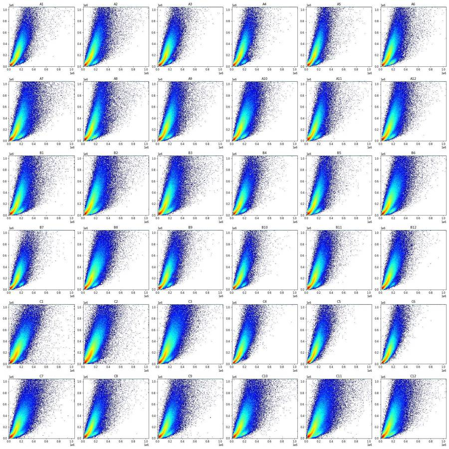
14
tool call · Read
{
"file_path": "/task/work/fsc_ssc_log.png"
}15
tool output
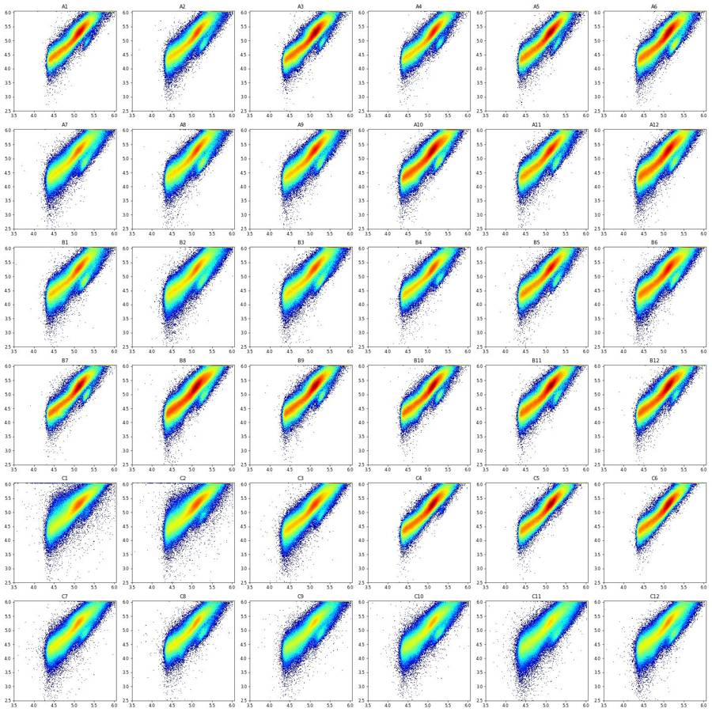
17
thinking
All 36 files are loaded, and C1 and C2 already show interrupted flow in the event-rate and scatter views. Next I'm checking the fluorescence controls to place the Live/Caspase boundaries.
18
tool call · Bash
cat > plot2.py <<'EOF'
import pickle, numpy as np, matplotlib; matplotlib.use('Agg'); import matplotlib.pyplot as plt
from matplotlib.colors import LogNorm
data=pickle.load(open('data.pkl','rb'))
wells=list(data)
def tr(x,c=150): return np.arcsinh(x/c)
ticks=[-1000,0,1000,1e4,1e5,1e6]
fig,axs=plt.subplots(6,6,figsize=(24,24))
for ax,w in zip(axs.flat,wells):
d=data[w]
ax.hist2d(tr(d['BL1-A']),tr(d['RL3-A']),bins=200,range=[[tr(-2000),tr(1.1e6)],[tr(-2000),tr(1.1e6)]],norm=LogNorm(),cmap='jet')
ax.set_xticks(tr(np.array(ticks))); ax.set_xticklabels(['-1e3','0','1e3','1e4','1e5','1e6'])
ax.set_yticks(tr(np.array(ticks))); ax.set_yticklabels(['-1e3','0','1e3','1e4','1e5','1e6'])
ax.set_title(w+' all events BL1(x) RL3(y)')
plt.tight_layout(); plt.savefig('fl_all.png',dpi=60); plt.close()
# 1D hists of controls
fig,axs=plt.subplots(2,1,figsize=(14,10))
for ch,ax in zip(['BL1-A','RL3-A'],axs):
for w in ['C10','C11','C12','C7','C8','C9','A1','C4']:
d=data[w]
h,e=np.histogram(tr(d[ch]),bins=300,range=(tr(-2000),tr(1.1e6)))
ax.plot((e[1:]+e[:-1])/2,h/h.sum(),label=w)
ax.set_xticks(tr(np.array(ticks))); ax.set_xticklabels(['-1e3','0','1e3','1e4','1e5','1e6'])
ax.set_title(ch); ax.legend(); ax.set_yscale('log')
plt.savefig('fl_1d.png',dpi=70)
for w in ['C10','C11','C12','C7','C8','C9','A1','C4']:
d=data[w]
print(w, 'BL1 pct', np.percentile(d['BL1-A'],[0.1,1,5,25,50,75,95,99,99.9]).round(0), 'RL3', np.percentile(d['RL3-A'],[0.1,1,5,25,50,75,95,99,99.9]).round(0))
EOF
python plot2.py19
tool call · Read
{
"file_path": "/task/work/fl_all.png"
}20
tool call · Read
{
"file_path": "/task/work/fl_1d.png"
}21
tool output
C10 BL1 pct [-1.5440e+03 -5.4000e+01 -9.0000e+00 6.0000e+01 1.6900e+02 3.9400e+02 1.6330e+03 4.1640e+03 2.7836e+04] RL3 [-198. -98. -61. -12. 24. 66. 169. 395. 3605.] C11 BL1 pct [-1.899e+03 -6.300e+01 -1.600e+01 4.800e+01 1.400e+02 3.690e+02 1.820e+03 5.690e+03 3.526e+04] RL3 [-2.33940e+04 -9.24000e+02 -2.40000e+02 8.30000e+02 4.75500e+03 1.71330e+04 7.08480e+04 1.94101e+05 9.58865e+05] C12 BL1 pct [-3.4900e+02 -2.2000e+01 3.4000e+01 1.9200e+02 7.8900e+02 1.5200e+03 4.6600e+03 1.2591e+04 5.7589e+04] RL3 [-143. -96. -61. -12. 23. 65. 170. 416. 2392.] C7 BL1 pct [-5.3420e+03 -4.5000e+01 2.9000e+01 1.9900e+02 7.3000e+02 1.4930e+03 4.6180e+03 1.2501e+04 7.2498e+04] RL3 [-3.09620e+04 -7.75000e+02 -1.96000e+02 7.23000e+02 4.59300e+03 1.69990e+04 6.45690e+04 1.69626e+05 8.05322e+05] C8 BL1 pct [-1.6990e+03 -2.2000e+01 3.5000e+01 1.7500e+02 6.5900e+02 1.2650e+03 4.0260e+03 1.1725e+04 7.4214e+04] RL3 [-2.820900e+04 -1.079000e+03 -1.720000e+02 3.852000e+03 1.599800e+04 5.019200e+04 1.736940e+05 4.399140e+05 1.048575e+06] C9 BL1 pct [-7.7260e+03 -4.3000e+01 2.9000e+01 1.8000e+02 7.0200e+02 1.4270e+03 4.5990e+03 1.3432e+04 9.5446e+04] RL3 [-3.891100e+04 -7.730000e+02 -1.710000e+02 1.084000e+03 6.259000e+03 2.227900e+04 8.308600e+04 2.252400e+05 1.048575e+06] A1 BL1 pct [-4.5000e+01 -4.0000e+00 4.0000e+01 1.7100e+02 6.4700e+02 1.1610e+03 2.9740e+03 6.4330e+03 2.0701e+04] RL3 [-7.73000e+02 -2.24000e+02 8.15000e+02 7.24000e+03 2.22990e+04 5.89840e+04 1.63336e+05 3.23190e+05 8.30533e+05] C4 BL1 pct [-4.41000e+02 5.00000e+00 5.50000e+01 2.06000e+02 6.72000e+02 1.20500e+03 3.61900e+03 1.17230e+04 1.00081e+05] RL3 [-3.95000e+02 -9.00000e+01 4.94000e+02 3.90300e+03 1.17720e+04 2.96510e+04 8.60310e+04 1.71431e+05 3.74221e+05]
22
tool output
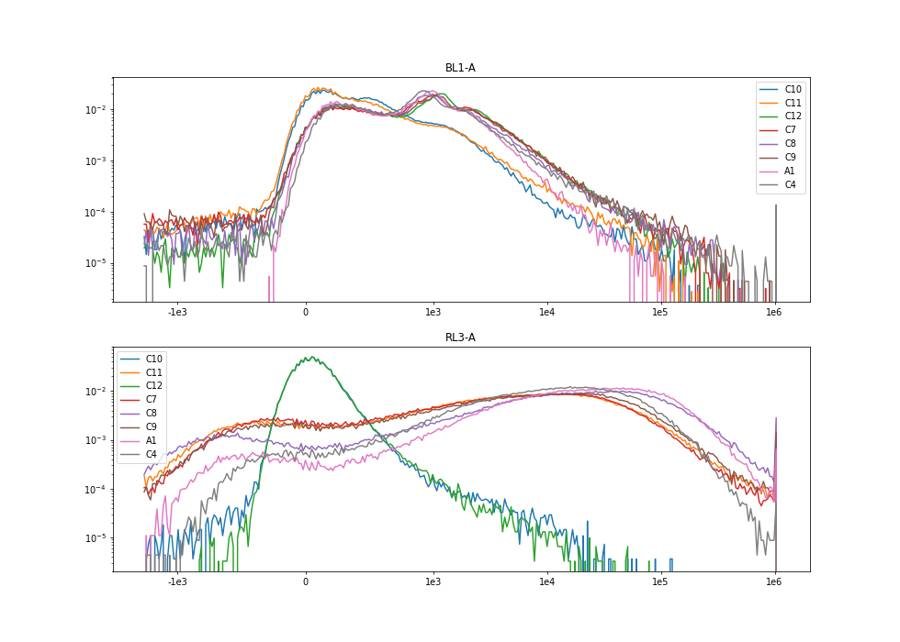
23
tool output
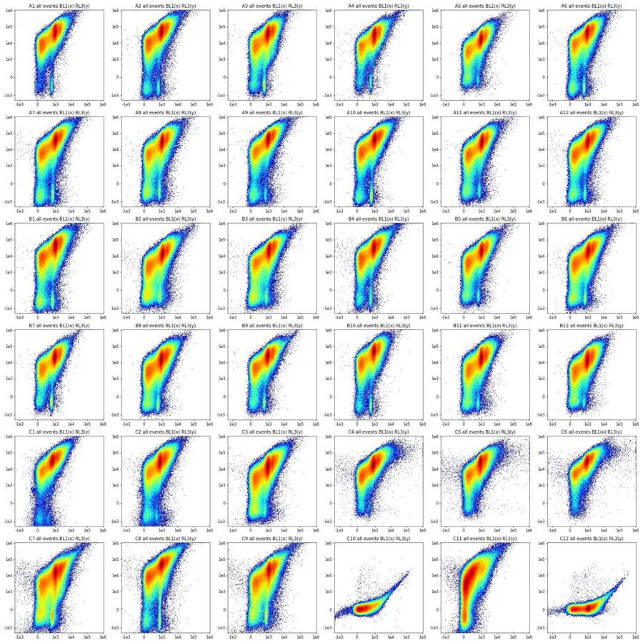
25
tool call · Bash
cat > plot3.py <<'EOF'
import pickle, numpy as np, matplotlib; matplotlib.use('Agg'); import matplotlib.pyplot as plt
from matplotlib.colors import LogNorm
data=pickle.load(open('data.pkl','rb'))
def tr(x,c=150): return np.arcsinh(x/c)
ws=['C7','C8','C9','A1','B6','C12']
fig,axs=plt.subplots(4,6,figsize=(30,20))
for j,w in enumerate(ws):
d=data[w]
sel={'all':np.ones(len(d),bool),
'RL3<1000 & BL1 400-1500':(d['RL3-A']<1000)&(d['BL1-A']>400)&(d['BL1-A']<1500),
'RL3<1000 & BL1<300':(d['RL3-A']<1000)&(d['BL1-A']<300),
'RL3>5000':(d['RL3-A']>5000)}
for i,(k,m) in enumerate(sel.items()):
ax=axs[i,j]
ax.hist2d(d['FSC-A'][m],d['SSC-A'][m],bins=150,range=[[0,600000],[0,600000]],norm=LogNorm(),cmap='jet')
ax.set_title(f'{w} {k} n={m.sum()}')
plt.tight_layout(); plt.savefig('backgate.png',dpi=55); plt.close()
EOF
python plot3.py26
tool call · Read
{
"file_path": "/task/work/backgate.png"
}27
tool output
(Bash completed with no output)
28
tool output
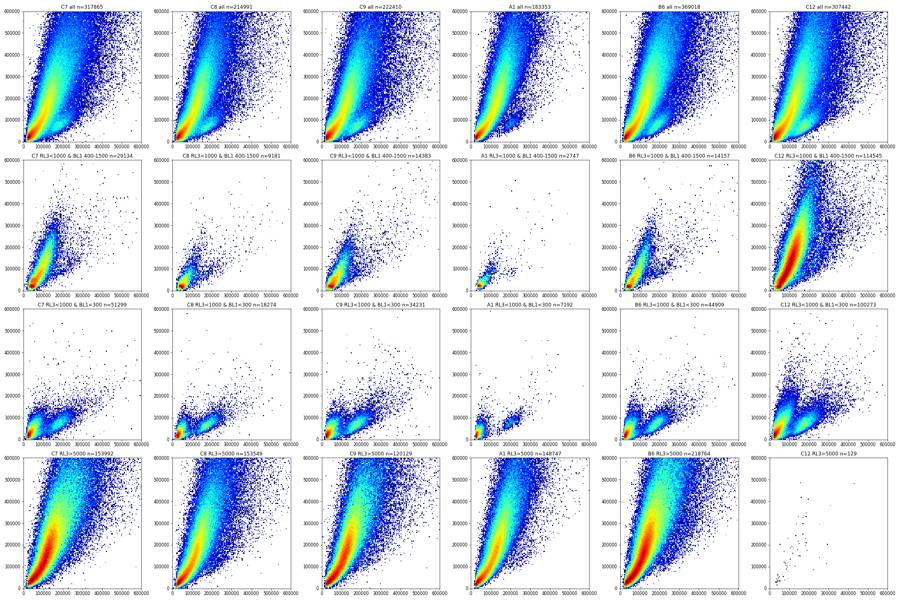
30
tool call · Bash
cat > plot4.py <<'EOF'
import pickle, numpy as np, matplotlib; matplotlib.use('Agg'); import matplotlib.pyplot as plt
from matplotlib.colors import LogNorm
data=pickle.load(open('data.pkl','rb'))
ws=['C7','C10','C11','C12','A1','B8']
fig,axs=plt.subplots(3,6,figsize=(30,15))
for j,w in enumerate(ws):
d=data[w]
axs[0,j].hist2d(d['FSC-A'],d['SSC-A'],bins=200,range=[[0,400000],[0,400000]],cmap='jet',norm=LogNorm()); axs[0,j].set_title(w)
axs[1,j].hist(d['FSC-A'],bins=300,range=(0,600000)); axs[1,j].set_title('FSC-A')
axs[2,j].hist2d(d['SSC-H'],d['SSC-A'],bins=200,range=[[0,1.05e6],[0,1.05e6]],cmap='jet',norm=LogNorm()); axs[2,j].set_title('SSC-H x SSC-A')
plt.tight_layout(); plt.savefig('scatter_zoom.png',dpi=55)
d=data['C7']
print(np.percentile(d['FSC-A'],[0,1,5,10,25,50,75,90,99]))
print((d['SSC-A']>=1048575).mean(), (d['SSC-H']>=1048575).mean(), (d['FSC-A']>=1048575).mean(),(d['FSC-H']>=1048575).mean())
print(np.percentile(d['SSC-A']/d['SSC-H'].clip(1),[1,5,25,50,75,95,99]))
EOF
python plot4.py31
tool call · Read
{
"file_path": "/task/work/scatter_zoom.png"
}32
tool output
[-65536. 22267.28 26302. 30851. 48420. 99947. 161599. 265963. 746644. ] 0.02656473660201658 0.0038129394554291918 0.004879429946675475 0.0 [0.47945599 0.8460703 0.98824303 1.09757676 1.29725331 2.01028104 2.69527074]
33
tool output
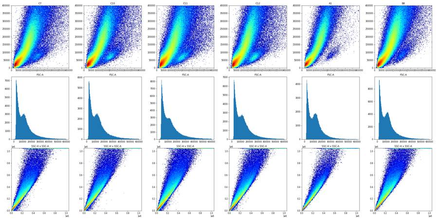
35
tool call · Bash
cat > plot5.py <<'EOF'
import pickle, numpy as np, matplotlib; matplotlib.use('Agg'); import matplotlib.pyplot as plt
from matplotlib.colors import LogNorm
data=pickle.load(open('data.pkl','rb'))
ws=['C7','C10','C11','C12','A1','B8']
fig,axs=plt.subplots(3,6,figsize=(30,15))
for j,w in enumerate(ws):
d=data[w]; d=d[(d['FSC-A']>70000)&(d['FSC-A']<1048575)&(d['SSC-A']<1048575)]
r=d['SSC-A']/d['SSC-H'].clip(1)
axs[0,j].hist2d(d['SSC-H'],r,bins=200,range=[[0,1.05e6],[0.5,3]],cmap='jet',norm=LogNorm()); axs[0,j].set_title(w+' ratio A/H vs SSC-H (cells)')
axs[1,j].hist(r,bins=250,range=(0.5,3)); axs[1,j].set_yscale('log')
axs[2,j].hist2d(d['SSC-H'],d['SSC-A'],bins=200,range=[[0,3e5],[0,3e5]],cmap='jet',norm=LogNorm())
print(w, len(d), np.percentile(r,[1,5,25,50,75,90,95,99]).round(2), 'SSC-W', np.percentile(d['SSC-W'],[5,50,95]), 'corr', np.corrcoef(r,d['SSC-W'])[0,1])
plt.tight_layout(); plt.savefig('singlet.png',dpi=55)
EOF
python plot5.py36
tool call · Read
{
"file_path": "/task/work/singlet.png"
}37
tool output
C7 192157 [0.88 0.99 1.08 1.18 1.44 1.86 2.15 2.82] SSC-W [ 73. 93. 168.] corr 0.08038274630864012 C10 172894 [0.88 0.99 1.08 1.18 1.41 1.81 2.1 2.75] SSC-W [ 74. 93. 163.] corr 0.06860208295880621 C11 216898 [0.81 0.98 1.08 1.2 1.48 1.91 2.2 2.88] SSC-W [ 71. 94. 172.] corr 0.07823921634156714 C12 188766 [0.91 0.99 1.08 1.18 1.42 1.81 2.09 2.7 ] SSC-W [ 74. 93. 163.] corr 0.026471555813331882 A1 115735 [0.99 1.03 1.1 1.18 1.33 1.61 1.86 2.37] SSC-W [ 77. 93. 142.] corr 0.8572217601919552 B8 259019 [0.95 1. 1.08 1.17 1.38 1.78 2.05 2.64] SSC-W [ 75. 92. 164.] corr 0.8575890635279021
38
tool output
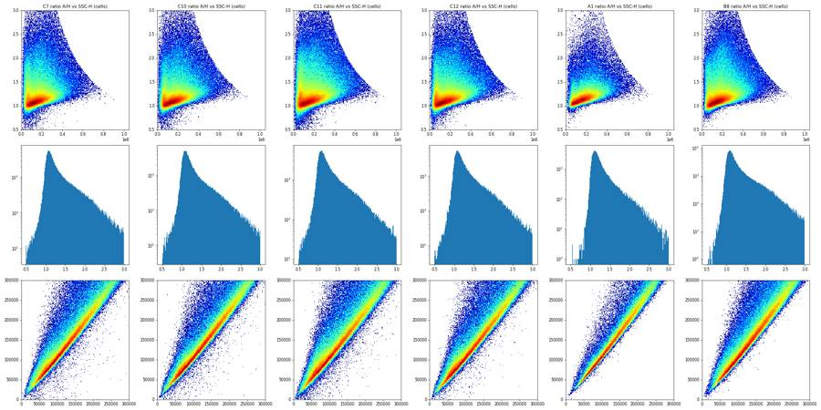
40
agent
Still exploring: scatter and singlet structure are clear; now running per-well QC (odd values, time stability) before fixing gates.
41
tool call · Bash
cat > qc1.py <<'EOF'
import pickle, numpy as np, pandas as pd
data=pickle.load(open('data.pkl','rb'))
rows=[]
for w,d in data.items():
r=d['SSC-A']/d['SSC-H'].clip(1)
rf=d['FSC-A']/d['FSC-H'].clip(1)
rows.append(dict(well=w,n=len(d),
fscA_neg=(d['FSC-A']<=0).sum(), sscA_neg=(d['SSC-A']<=0).sum(), fscA_lt_thr=(d['FSC-A']<20000).mean(),
fscH_min=d['FSC-H'].min(), sscH_min=d['SSC-H'].min(),
ratio_lt09=(r<0.9).mean(), corrW=np.corrcoef(r.clip(0,5),d['SSC-W'])[0,1],
bl1_lt_m500=(d['BL1-A']<-500).mean(), rl3_lt_m2000=(d['RL3-A']<-2000).mean(),
bl1_min=d['BL1-A'].min(), rl3_min=d['RL3-A'].min(),
satFSC=(d['FSC-A']>=1048575).mean(), satSSC=(d['SSC-A']>=1048575).mean(), satSSCH=(d['SSC-H']>=1048575).mean(), satBL1=(d['BL1-A']>=1048575).mean(), satRL3=(d['RL3-A']>=1048575).mean(),
sscW_med=d['SSC-W'].median(), fscW_med=d['FSC-W'].median(), fscW_max=d['FSC-W'].max()))
pd.set_option('display.width',300); pd.set_option('display.max_columns',40)
print(pd.DataFrame(rows).round(4).to_string())
EOF
python qc1.py42
tool output
well n fscA_neg sscA_neg fscA_lt_thr fscH_min sscH_min ratio_lt09 corrW bl1_lt_m500 rl3_lt_m2000 bl1_min rl3_min satFSC satSSC satSSCH satBL1 satRL3 sscW_med fscW_med fscW_max 0 A1 183353 0 35 0.0002 25056.0 569.0 0.0359 0.8136 0.0000 0.0000 -116.0 -4517.0 0.0015 0.0182 0.0019 0.0000 0.0006 85.0 84.0 375.0 1 A2 221770 3 198 0.0006 25055.0 0.0 0.0480 0.7815 0.0002 0.0007 -11020.0 -65536.0 0.0025 0.0253 0.0037 0.0000 0.0014 85.0 84.0 375.0 2 A3 222545 7 73 0.0003 25047.0 0.0 0.0361 0.8314 0.0003 0.0003 -45885.0 -65536.0 0.0007 0.0121 0.0010 0.0000 0.0006 85.0 84.0 375.0 3 A4 160440 1 84 0.0003 25093.0 0.0 0.0295 0.7690 0.0003 0.0004 -11339.0 -58633.0 0.0021 0.0234 0.0035 0.0000 0.0011 87.0 85.0 375.0 4 A5 169911 0 47 0.0003 25064.0 0.0 0.0439 0.8129 0.0001 0.0001 -6009.0 -35395.0 0.0010 0.0225 0.0023 0.0000 0.0001 85.0 83.0 375.0 5 A6 230857 1 89 0.0005 25106.0 0.0 0.0547 0.8223 0.0001 0.0003 -2494.0 -28223.0 0.0011 0.0179 0.0017 0.0000 0.0005 85.0 84.0 375.0 6 A7 282723 14 464 0.0015 25058.0 0.0 0.0751 0.7797 0.0003 0.0014 -19632.0 -65536.0 0.0033 0.0319 0.0045 0.0000 0.0011 85.0 83.0 375.0 7 A8 236938 2 261 0.0008 25055.0 0.0 0.0637 0.7827 0.0003 0.0003 -25550.0 -65536.0 0.0024 0.0364 0.0047 0.0000 0.0004 86.0 85.0 375.0 8 A9 241833 1 179 0.0007 25134.0 0.0 0.0631 0.8004 0.0001 0.0006 -27038.0 -65536.0 0.0019 0.0282 0.0033 0.0000 0.0006 86.0 84.0 375.0 9 A10 335810 3 214 0.0011 25054.0 0.0 0.0776 0.8264 0.0001 0.0004 -12604.0 -65536.0 0.0011 0.0225 0.0022 0.0000 0.0004 84.0 83.0 375.0 10 A11 228556 1 177 0.0008 25094.0 0.0 0.0667 0.8018 0.0002 0.0002 -37801.0 -65536.0 0.0016 0.0251 0.0030 0.0000 0.0003 83.0 82.0 375.0 11 A12 330844 17 281 0.0011 25065.0 0.0 0.0850 0.8189 0.0002 0.0003 -11784.0 -38446.0 0.0012 0.0235 0.0024 0.0000 0.0003 83.0 82.0 375.0 12 B1 254845 6 292 0.0011 25069.0 0.0 0.0733 0.7845 0.0001 0.0008 -26686.0 -65536.0 0.0023 0.0307 0.0044 0.0000 0.0006 84.0 83.0 375.0 13 B2 319449 15 677 0.0018 25076.0 0.0 0.0923 0.7885 0.0004 0.0004 -36666.0 -65536.0 0.0034 0.0315 0.0042 0.0000 0.0001 84.0 83.0 375.0 14 B3 275473 19 391 0.0012 25077.0 0.0 0.0772 0.7950 0.0006 0.0004 -49725.0 -65536.0 0.0025 0.0306 0.0037 0.0000 0.0001 85.0 84.0 375.0 15 B4 219859 11 293 0.0010 25073.0 0.0 0.0641 0.7617 0.0011 0.0012 -40099.0 -65536.0 0.0028 0.0235 0.0041 0.0000 0.0017 84.0 82.0 375.0 16 B5 225148 2 142 0.0008 25105.0 0.0 0.0647 0.7990 0.0001 0.0001 -19351.0 -65536.0 0.0016 0.0256 0.0032 0.0000 0.0003 84.0 82.0 375.0 17 B6 369018 9 375 0.0014 25078.0 0.0 0.0930 0.8189 0.0002 0.0002 -22655.0 -65536.0 0.0016 0.0215 0.0024 0.0000 0.0002 83.0 82.0 375.0 18 B7 186946 0 48 0.0004 25088.0 0.0 0.0486 0.8128 0.0001 0.0001 -2864.0 -45417.0 0.0011 0.0133 0.0013 0.0000 0.0003 84.0 83.0 375.0 19 B8 412353 0 191 0.0012 25078.0 0.0 0.0915 0.8371 0.0000 0.0000 -8270.0 -20784.0 0.0010 0.0191 0.0014 0.0000 0.0001 83.0 82.0 375.0 20 B9 219409 7 91 0.0006 25059.0 0.0 0.0578 0.8094 0.0001 0.0001 -3715.0 -40408.0 0.0012 0.0202 0.0021 0.0000 0.0002 84.0 83.0 375.0 21 B10 187472 2 70 0.0004 25059.0 0.0 0.0531 0.8169 0.0002 0.0002 -40038.0 -65536.0 0.0008 0.0165 0.0017 0.0000 0.0004 84.0 82.0 375.0 22 B11 271438 0 94 0.0006 25115.0 0.0 0.0695 0.8361 0.0001 0.0001 -4382.0 -14507.0 0.0006 0.0183 0.0012 0.0000 0.0001 84.0 83.0 375.0 23 B12 286933 0 76 0.0006 25133.0 0.0 0.0711 0.8455 0.0000 0.0000 -1522.0 -3523.0 0.0005 0.0161 0.0010 0.0000 0.0000 84.0 83.0 375.0 24 C1 250794 518 2501 0.0042 24988.0 0.0 0.0931 0.7812 0.0001 0.0070 -1496.0 -50506.0 0.0033 0.0278 0.0029 0.0000 0.0003 85.0 84.0 375.0 25 C2 305451 391 2145 0.0031 25026.0 0.0 0.0864 0.7764 0.0003 0.0072 -21959.0 -65536.0 0.0031 0.0294 0.0035 0.0000 0.0005 85.0 84.0 375.0 26 C3 418796 25 685 0.0020 25087.0 0.0 0.0952 0.8040 0.0004 0.0006 -13027.0 -54198.0 0.0027 0.0324 0.0033 0.0000 0.0001 84.0 84.0 375.0 27 C4 230134 5 70 0.0004 25131.0 0.0 0.0520 0.8303 0.0009 0.0001 -31221.0 -21926.0 0.0008 0.0179 0.0014 0.0001 0.0000 85.0 83.0 375.0 28 C5 206789 0 22 0.0003 2501 … [1,584 more characters not shown]
44
tool call · Bash
cat > plot6.py <<'EOF'
import pickle, numpy as np, matplotlib; matplotlib.use('Agg'); import matplotlib.pyplot as plt
data=pickle.load(open('data.pkl','rb'))
wells=list(data)
bins=np.arange(0,41.5,0.5)
def binned(d,ch,f):
idx=np.digitize(d['Time'],bins)-1
out=np.full(len(bins)-1,np.nan)
for k in range(len(bins)-1):
v=d[ch].values[idx==k]
if len(v)>=30: out[k]=f(v)
return out
for name,ch,f,yl in [('rate','Time',None,None),('fsc','FSC-A',np.median,(0,250000)),('ssc','SSC-A',np.median,(0,300000)),('rl3','RL3-A',np.median,None),('bl1','BL1-A',np.median,(0,1500)),('fracdebris','FSC-A',lambda v:(v<70000).mean(),(0,1))]:
fig,axs=plt.subplots(6,6,figsize=(24,18))
for ax,w in zip(axs.flat,wells):
d=data[w]
if name=='rate':
h,_=np.histogram(d['Time'],bins=np.arange(0,41.5,0.25)); ax.plot(np.arange(0,41.25,0.25)[:len(h)],h*4); ax.set_ylim(0,22000)
else:
ax.plot(bins[:-1],binned(d,ch,f))
if yl: ax.set_ylim(*yl)
if name=='rl3': ax.set_yscale('symlog',linthresh=100); ax.set_ylim(-100,1e5)
ax.set_title(w+' '+name)
plt.tight_layout(); plt.savefig(f'time_{name}.png',dpi=50); plt.close()
EOF
python plot6.py45
tool call · Read
{
"file_path": "/task/work/time_rate.png"
}46
tool call · Read
{
"file_path": "/task/work/time_fsc.png"
}47
tool call · Read
{
"file_path": "/task/work/time_rl3.png"
}48
tool output
(Bash completed with no output)
49
tool output
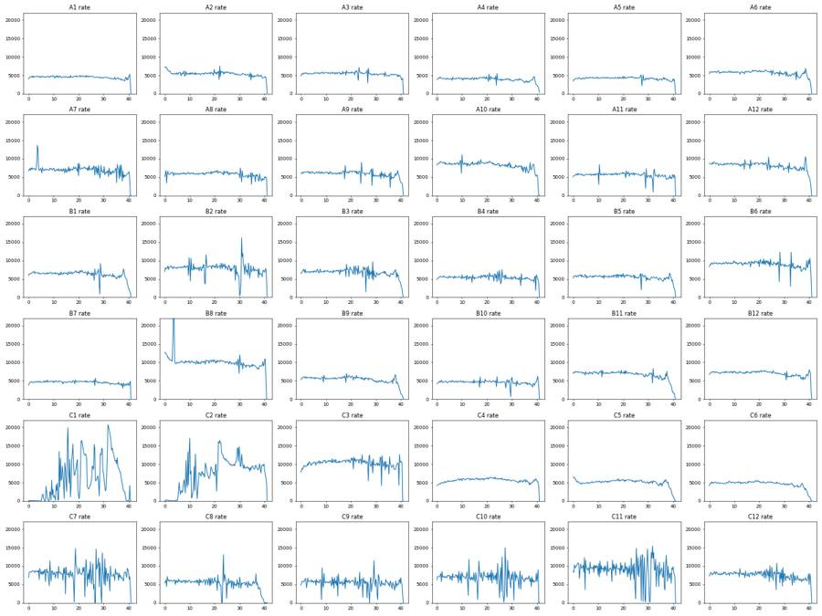
50
tool output
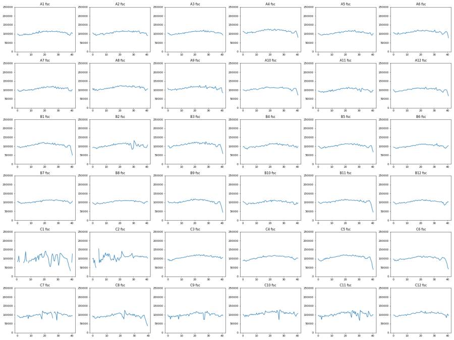
51
tool output
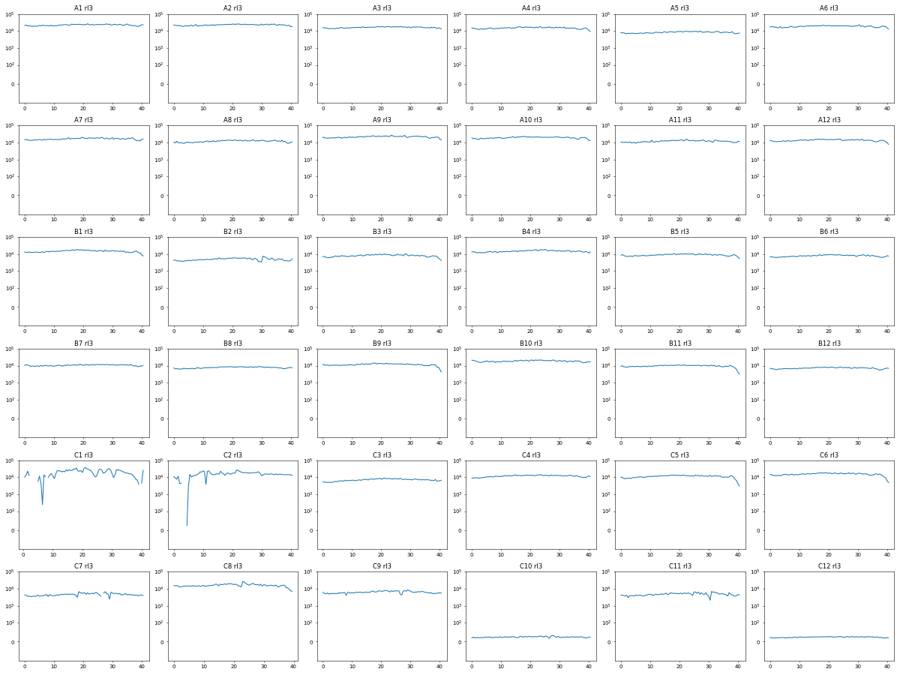
53
tool call · Bash
cat > plot7.py <<'EOF'
import pickle, numpy as np, matplotlib; matplotlib.use('Agg'); import matplotlib.pyplot as plt
from matplotlib.colors import LogNorm
data=pickle.load(open('data.pkl','rb'))
def tr(x,c=150): return np.arcsinh(x/c)
ticks=np.array([-1000,0,1000,1e4,1e5,1e6]); tl=['-1e3','0','1e3','1e4','1e5','1e6']
def sc(d):
r=d['SSC-A']/d['SSC-H'].clip(1)
return d[(d['FSC-A']>70000)&(d['FSC-A']<1040000)&(d['SSC-A']<1040000)&(r<1.35)&(r>0.85)]
ws=['C10','C11','C12','C7','C8','C9','A1','C4']
fig,axs=plt.subplots(2,8,figsize=(40,10))
for j,w in enumerate(ws):
d=sc(data[w])
axs[0,j].hist2d(tr(d['BL1-A']),tr(d['RL3-A']),bins=200,range=[[tr(-2000),tr(1.1e6)],[tr(-3000),tr(1.1e6)]],norm=LogNorm(),cmap='jet')
axs[0,j].set_xticks(tr(ticks)); axs[0,j].set_xticklabels(tl); axs[0,j].set_yticks(tr(ticks)); axs[0,j].set_yticklabels(tl); axs[0,j].set_title(f'{w} singlets n={len(d)}')
axs[1,j].hist2d(d['FSC-A'],tr(d['RL3-A']),bins=200,range=[[0,6e5],[tr(-3000),tr(1.1e6)]],norm=LogNorm(),cmap='jet')
axs[1,j].set_yticks(tr(ticks)); axs[1,j].set_yticklabels(tl); axs[1,j].set_title('FSC-A vs RL3')
print(w,len(d),'BL1',np.percentile(d['BL1-A'],[1,5,25,50,75,95,99,99.9]).round(0),'RL3',np.percentile(d['RL3-A'],[1,5,25,50,75,95,99,99.9]).round(0))
plt.tight_layout(); plt.savefig('fl_singlets.png',dpi=50); plt.close()
fig,axs=plt.subplots(2,1,figsize=(16,12))
for ch,ax in zip(['BL1-A','RL3-A'],axs):
for w in ws:
d=sc(data[w])
h,e=np.histogram(tr(d[ch]),bins=250,range=(tr(-3000),tr(1.1e6)))
ax.plot((e[1:]+e[:-1])/2,h/h.sum(),label=w)
t2=np.array([-1000,-300,0,300,1000,3000,1e4,3e4,1e5,1e6])
ax.set_xticks(tr(t2)); ax.set_xticklabels([str(int(x)) for x in t2]); ax.grid(alpha=.3)
ax.set_title(ch+' (singlets)'); ax.legend()
plt.savefig('fl_1d_singlets.png',dpi=70)
EOF
python plot7.py54
tool call · Read
{
"file_path": "/task/work/fl_singlets.png"
}55
tool call · Read
{
"file_path": "/task/work/fl_1d_singlets.png"
}56
tool output
C10 121758 BL1 [ -19. 33. 129. 230. 379. 1204. 1916. 2903.] RL3 [-92. -58. -8. 28. 65. 127. 182. 279.] C11 140667 BL1 [ -28. 21. 105. 195. 338. 1185. 1905. 2948.] RL3 [ -655. -166. 2461. 8457. 18343. 45230. 76950. 130713.] C12 131457 BL1 [5.000e+00 1.040e+02 6.480e+02 1.056e+03 1.435e+03 2.709e+03 4.113e+03 6.745e+03] RL3 [-94. -59. -9. 26. 63. 123. 176. 287.] C7 131405 BL1 [ 14. 167. 681. 986. 1437. 2690. 3987. 6127.] RL3 [-5.08000e+02 -5.20000e+01 1.90700e+03 8.45300e+03 1.95390e+04 4.59510e+04 7.65160e+04 1.27182e+05] C8 91083 BL1 [ 13. 128. 597. 920. 1300. 2449. 3766. 6208.] RL3 [-8.77000e+02 1.09000e+02 1.19320e+04 3.12000e+04 5.89760e+04 1.25482e+05 2.04892e+05 3.26831e+05] C9 93110 BL1 [2.000e+00 1.050e+02 6.280e+02 1.010e+03 1.425e+03 2.716e+03 4.125e+03 6.554e+03] RL3 [-5.4300e+02 -7.5000e+01 3.4370e+03 1.2312e+04 2.6146e+04 6.0402e+04 9.9189e+04 1.6313e+05] A1 88979 BL1 [ 81. 194. 592. 881. 1186. 2197. 3227. 4812.] RL3 [1.83000e+02 4.25100e+03 1.79300e+04 3.63280e+04 6.62340e+04 1.33173e+05 1.96499e+05 2.93641e+05] C4 116485 BL1 [ 145. 281. 608. 832. 1181. 2238. 3704. 13935.] RL3 [ 463. 2647. 9276. 17775. 32487. 70008. 109818. 172779.]
57
tool output
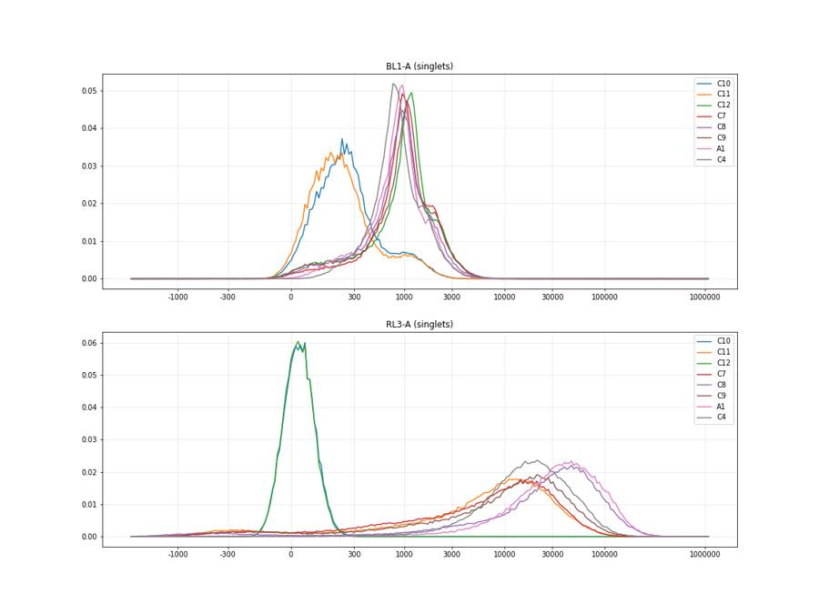
58
tool output
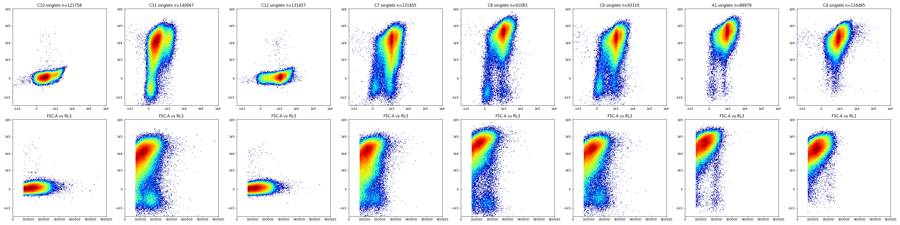
60
agent
Controls show clear structure (Zombie-negative cluster below ~500 on RL3; CellEvent shifts BL1 from ~200 to ~1000). Now locating the exact valleys for the Live and Caspase boundaries.
61
tool call · Bash
cat > thr.py <<'EOF'
import pickle, numpy as np
data=pickle.load(open('data.pkl','rb'))
def sc(d):
r=d['SSC-A']/d['SSC-H'].clip(1)
return d[(d['FSC-A']>70000)&(d['FSC-A']<1040000)&(d['SSC-A']<1040000)&(r<1.35)&(r>0.85)]
edges=np.array([-5000,-3000,-2000,-1500,-1000,-700,-500,-300,-200,-100,0,100,200,300,400,500,600,700,800,1000,1250,1500,2000,2500,3000,4000,5000,7000,10000])
print('RL3 density per unit asinh (counts / d asinh(x/150))')
print('edge ', ' '.join(f'{int(e):6d}' for e in edges[:-1]))
for w in ['C10','C11','C7','C8','C9','A1','A5','B2','B8','C3','C4']:
d=sc(data[w]); h,_=np.histogram(d['RL3-A'],bins=edges); wd=np.diff(np.arcsinh(edges/150))
print(f'{w:7s}',' '.join(f'{int(x):6d}' for x in h/wd/len(d)*1e4))
print('BL1 within RL3<600 singlets')
e2=np.array([-300,-100,0,50,100,150,200,250,300,350,400,450,500,550,600,700,800,900,1000,1200,1500,2000,3000,5000,10000,1e5])
print('edge ', ' '.join(f'{int(e):6d}' for e in e2[:-1]))
for w in ['C10','C11','C12','C7','C8','C9','A1','A5','B2','B8','C3','C4','C5','C6']:
d=sc(data[w]); d=d[d['RL3-A']<600]; h,_=np.histogram(d['BL1-A'],bins=e2); wd=np.diff(np.arcsinh(e2/150))
print(f'{w:7s}',' '.join(f'{int(x):6d}' for x in h/wd/len(d)*1e4), len(d))
d=sc(data['C11']); l=d[d['RL3-A']<600]
print('C11 live BL1 pct', np.percentile(l['BL1-A'],[50,90,95,98,99,99.5,99.9]))
d=sc(data['C10']); print('C10 singlets BL1 pct', np.percentile(d['BL1-A'],[50,75,80,85,90,95,98,99,99.5,99.9]), 'frac>450',(d['BL1-A']>450).mean())
print('C10 RL3 pct', np.percentile(d['RL3-A'],[50,99,99.9,99.99]))
EOF
python thr.py62
tool output
RL3 density per unit asinh (counts / d asinh(x/150)) edge -5000 -3000 -2000 -1500 -1000 -700 -500 -300 -200 -100 0 100 200 300 400 500 600 700 800 1000 1250 1500 2000 2500 3000 4000 5000 7000 C10 0 0 0 0 0 0 0 1 138 4636 9508 2175 153 13 4 0 1 3 1 0 0 0 1 0 1 0 0 0 C11 7 13 22 55 125 219 326 376 326 231 203 231 300 368 416 496 536 580 680 749 826 994 1138 1340 1592 1992 2415 2918 C7 8 11 14 33 73 135 210 262 277 250 259 343 443 542 642 705 777 776 814 905 1009 1063 1172 1338 1486 1725 2012 2551 C8 7 26 59 110 153 196 190 160 115 83 72 72 105 112 128 159 166 174 223 276 307 400 476 560 649 751 887 1129 C9 7 11 14 36 81 160 235 289 284 250 201 209 268 302 397 402 474 530 555 664 752 799 946 1030 1226 1424 1773 2240 A1 0 0 2 8 15 26 32 35 32 23 21 23 29 39 42 54 65 69 91 111 119 161 202 278 359 501 741 1197 A5 0 0 0 0 2 9 37 90 153 169 140 140 177 204 234 226 240 284 302 323 408 503 689 879 1194 1728 2361 3255 B2 0 0 2 10 47 120 263 374 409 314 232 238 276 345 354 417 437 434 469 570 605 734 976 1226 1588 2064 2657 3305 B8 0 0 0 3 23 51 99 109 91 71 66 89 119 165 200 254 274 321 396 478 559 747 948 1173 1487 1912 2445 3182 C3 0 1 1 10 36 71 124 148 137 109 100 140 177 238 280 307 349 428 481 575 701 883 1102 1358 1700 2117 2618 3201 C4 0 0 0 0 1 3 8 14 16 19 22 34 40 55 73 82 101 125 140 192 235 313 488 632 898 1257 1871 2779 BL1 within RL3<600 singlets edge -300 -100 0 50 100 150 200 250 300 350 400 450 500 550 600 700 800 900 1000 1200 1500 2000 3000 5000 10000 C10 6 284 1691 3476 4741 5766 6454 6266 5221 4082 3104 2431 2028 1749 1438 1273 1265 1282 1290 1084 637 181 15 0 0 121713 C11 44 1924 8064 9464 6090 3361 1817 985 658 502 348 416 314 323 299 263 212 216 156 108 43 14 0 0 0 19101 C12 3 132 521 742 835 921 999 1053 1172 1325 1513 1704 2007 2390 2889 3808 5057 6926 8918 7126 3461 2301 593 57 1 131391 C7 29 591 1925 2113 1646 1235 1143 1194 1317 1855 2249 3035 3645 3974 4868 5981 6550 7255 5623 2790 1890 730 129 17 2 19218 C8 39 1377 4940 6078 3432 2152 1198 1031 1034 1207 1469 1808 1670 2017 2486 3840 3538 2585 1797 1516 1285 531 177 87 5 5946 C9 25 970 3940 4555 3135 1961 1462 1361 1398 1526 1968 2276 2435 2923 3485 4040 4615 3988 2963 1838 1191 540 214 45 6 10890 A1 0 931 3360 5946 4886 2789 1808 1297 1140 1415 2585 3334 4699 6441 6213 4446 1375 1149 882 539 389 59 0 11 0 1254 A5 4 706 3320 4350 3502 2695 2007 1813 1743 2371 2808 3382 3773 4534 4632 5175 3894 3188 2002 1126 767 207 50 17 0 5003 B2 17 900 3493 4268 3400 2303 1915 1648 1678 1683 2248 2424 2772 3155 3778 4257 4266 3760 3199 1924 1108 351 109 31 2 18067 B8 7 579 2432 3370 3332 2516 1841 1841 2037 2422 2945 3592 4422 5299 5654 5852 5145 4219 2340 1148 741 222 54 11 2 8562 C3 7 561 2309 2751 2542 2130 1699 1974 2379 2909 3615 4061 4853 5506 5977 6069 5279 3998 2462 1360 761 284 120 53 3 12232 C4 0 34 238 547 1799 2481 2297 2174 4919 6066 7217 7342 8281 8255 7603 6067 3852 2726 1923 895 742 122 27 10 9 1410 C5 7 27 88 524 1173 1970 2654 3292 4094 5040 6511 6448 7700 9549 7741 7421 5335 3334 2145 965 443 128 22 16 7 1729 C6 12 15 119 626 920 1718 2174 2519 3582 4042 5485 6845 7504 7584 9158 7953 4912 4153 3099 1461 651 291 96 0 17 1018 C11 live BL1 pct [ 67. 197. 296. 593. 864. 1143. 1804.6] C10 singlets BL1 pct [ 230. 379. 446. 563. 810. 1204. 1622.86 1916. 2202.215 2903.374] frac>450 0.19731763005305605 C10 RL3 pct [ 28. 182. 279. 11725.60899999]
64
tool call · Bash
cat > thr2.py <<'EOF'
import pickle, numpy as np
data=pickle.load(open('data.pkl','rb'))
def sc(d):
r=d['SSC-A']/d['SSC-H'].clip(1)
return d[(d['FSC-A']>70000)&(d['FSC-A']<1040000)&(d['SSC-A']<1040000)&(r<1.35)&(r>0.85)]
edges=np.arange(-2500,3001,100)
print('lin RL3 hist, 100-unit bins from -2500')
for w in ['C11','C7','C8','C9','A1','A5','B2','B8','C3']:
d=sc(data[w]); h,_=np.histogram(d['RL3-A'],bins=edges)
print(w,' '.join(f'{x:4d}' for x in h))
# mirrored estimate: mode of negative cluster and mirrored count
for w in data:
d=sc(data[w]); x=d['RL3-A'].values
h,e=np.histogram(x,bins=np.arange(-1500,1501,50));
hs=np.convolve(h,np.ones(3)/3,'same'); m=e[np.argmax(hs[2:40])+2]+25
neg=2*(x<m).sum()
# threshold t where count(x<t) == mirrored neg total
xs=np.sort(x); t=xs[min(neg,len(xs)-1)]
print(w, 'mode',m,'mirror_neg_n',neg,'thr_equal_count',round(t), 'n<300',(x<300).sum(),'n<500',(x<500).sum(),'n<700',(x<700).sum(),'n<1000',(x<1000).sum(), 'tot',len(x))
EOF
python thr2.py65
tool output
lin RL3 hist, 100-unit bins from -2500 C11 8 8 6 14 8 20 8 19 17 25 33 32 57 66 127 138 190 294 437 571 934 1250 1826 2177 2038 1786 1541 1457 1369 1240 1228 1134 1069 1083 1022 961 901 854 858 867 835 832 821 788 735 748 750 656 706 704 665 695 670 726 688 C7 6 1 6 11 6 13 6 11 13 13 20 14 41 38 62 55 104 180 229 351 538 779 1190 1729 2059 2128 2139 2010 1881 1785 1629 1534 1336 1213 1143 1090 1041 983 986 936 871 866 795 764 709 708 734 709 616 663 673 652 635 608 640 C8 7 14 12 13 15 20 23 35 39 38 49 75 73 97 110 140 149 201 250 334 389 437 504 499 476 412 314 333 270 247 255 228 208 217 230 229 205 217 203 209 223 203 209 207 203 198 187 178 173 230 180 175 197 187 191 C9 4 8 2 9 2 5 10 3 10 11 15 26 28 28 41 62 82 121 214 273 414 627 929 1256 1458 1172 922 863 744 782 659 664 647 569 569 539 577 506 511 504 469 420 403 423 418 428 402 381 353 399 351 356 359 317 365 A1 0 0 0 1 0 0 0 1 1 5 1 5 9 5 11 14 14 20 36 41 56 83 110 138 131 121 100 92 92 80 85 88 81 96 83 82 97 77 76 80 74 83 96 77 81 82 76 79 73 92 102 80 96 68 105 A5 0 0 0 0 0 0 0 0 0 0 0 0 0 0 1 2 3 3 8 18 37 115 263 613 899 744 564 519 457 420 337 305 315 294 270 244 249 241 254 244 242 263 217 252 246 270 277 239 242 270 283 285 280 255 254 B2 0 2 0 0 1 3 2 2 0 2 2 3 11 21 19 33 69 131 193 355 595 1147 1797 2695 2732 2018 1572 1326 1266 1043 1021 913 791 741 697 718 692 640 632 599 571 607 573 573 604 611 619 606 575 612 613 632 618 614 632 B8 0 1 0 0 0 0 1 0 2 1 1 4 4 12 8 22 41 90 104 210 368 521 709 815 839 778 796 777 820 797 841 776 791 829 812 782 811 746 782 776 818 760 798 808 842 756 832 795 776 811 784 741 790 848 862 C3 1 0 2 0 0 0 1 2 3 4 4 6 15 20 36 50 80 108 184 255 404 706 962 1218 1288 1176 1243 1146 1177 1111 1013 983 1050 1019 968 945 958 947 985 932 954 932 958 963 935 973 906 948 925 847 938 952 912 907 938 A1 mode -125 mirror_neg_n 1042 thr_equal_count 354 n<300 997 n<500 1169 n<700 1342 n<1000 1602 tot 88979 A2 mode -275 mirror_neg_n 4694 thr_equal_count 645 n<300 4161 n<500 4503 n<700 4780 n<1000 5186 tot 101752 A3 mode 325 mirror_neg_n 6496 thr_equal_count 1038 n<300 3112 n<500 4043 n<700 4941 n<1000 6327 tot 113171 A4 mode -75 mirror_neg_n 2378 thr_equal_count 344 n<300 2286 n<500 2652 n<700 2986 n<1000 3477 tot 82352 A5 mode -25 mirror_neg_n 3436 thr_equal_count 229 n<300 3789 n<500 4666 n<700 5308 n<1000 6187 tot 84615 A6 mode -175 mirror_neg_n 9772 thr_equal_count 972 n<300 7661 n<500 8344 n<700 9007 n<1000 9846 tot 117604 A7 mode -275 mirror_neg_n 9070 thr_equal_count 790 n<300 7679 n<500 8303 n<700 8858 n<1000 9577 tot 127591 A8 mode -175 mirror_neg_n 10834 thr_equal_count 412 n<300 10197 n<500 11336 n<700 12344 n<1000 13701 tot 111712 A9 mode -175 mirror_neg_n 8588 thr_equal_count 1443 n<300 6363 n<500 6858 n<700 7253 n<1000 7851 tot 119506 A10 mode -325 mirror_neg_n 6250 thr_equal_count 662 n<300 5364 n<500 5842 n<700 6340 n<1000 7040 tot 157895 A11 mode -175 mirror_neg_n 5982 thr_equal_count 280 n<300 6086 n<500 6933 n<700 7651 n<1000 8594 tot 106133 A12 mode -275 mirror_neg_n 7406 thr_equal_count 441 n<300 6880 n<500 7638 n<700 8341 n<1000 9247 tot 150534 B1 mode -275 mirror_neg_n 10352 thr_equal_count 577 n<300 9133 n<500 10010 n<700 10827 n<1000 11903 tot 116224 B2 mode -75 mirror_neg_n 15706 thr_equal_count 376 n<300 14737 n<500 17046 n<700 18980 n<1000 21209 tot 139058 B3 mode -125 mirror_neg_n 13036 thr_equal_count 425 n<300 12062 n<500 13552 n<700 14840 n<1000 16471 tot 127212 B4 mode -225 mirror_neg_n 3386 thr_equal_count 271 n<300 3443 n<500 3874 n<700 4276 n<1000 4877 tot 103341 B5 mode -125 mirror_neg_n 4766 thr_equal_count 191 n<300 5302 n<500 6069 n<700 6810 n<1000 7767 tot 105293 B6 mode -125 mirror_neg_n 9660 thr_equal_count 344 n<300 9226 n<500 11052 n<700 12713 n<1000 14966 tot 164966 B7 mode -25 mirror_neg_n 3096 thr_equal_count 401 n<300 2808 n<500 3344 n<700 3833 n<1000 4544 tot 94825 B8 mode -125 mirror_neg_n 5442 thr_equal_count 215 n<300 6104 n<500 7721 n<700 9338 n<1000 11770 tot 187978 B9 mode -125 mirror_neg_n 3192 thr_equal_count 209 n<300 3490 n<500 4100 n<700 4632 n<1000 5408 tot 106250 B10 mode -75 mirror_neg_n 3558 thr_equal_count 827 n<300 2651 n<500 3000 n<700 3334 n<1000 3840 tot 92150 B11 mode -125 mirror_neg_n 4542 thr_equal_count 209 n<300 5059 n<500 6135 n<700 7130 n<1000 8441 tot 133450 B12 mode -75 mirror_neg_n 3596 thr_equal_count 143 n<300 4798 n<500 6086 n<700 7157 n<1000 8727 tot 140771 C1 mode -125 mirror_neg_n 2908 thr_equal_count 1459 n<300 1873 n<500 2059 n<700 2228 n<1000 2491 tot 116674 C2 mode -275 mirror_neg_n 5760 thr_equal_count 604 n<300 4830 n<500 5434 n<700 6063 n<1000 6967 tot 145303 C3 mode -75 mirror_neg_n 8786 thr_equal_count 287 n<300 8931 n<500 11219 n<700 13215 n<1000 16252 tot 187344 C4 mode 125 mirror_neg_n 1142 thr_equal_count 443 n<300 888 n<500 1241 n<700 1587 n<1000 2137 tot 116485 C5 mode 475 mirror_neg_n 2854 thr_equal_count 1047 n<300 1001 n<500 1493 n<700 1980 n<1000 2731 tot 105996 C6 mode 275 mirror_neg_n 1138 thr_equal_count 701 n<300 609 n<500 895 n<700 1134 n<1000 1482 tot 97402 C7 mode 75 mirror_neg_n 18504 thr_equal_count 554 n<300 13923 n<500 17589 n<700 20752 n<1000 24444 tot 131405 C8 mode -225 mirror_neg_n 6048 thr_equal_count 645 n<300 5174 n<500 5691 n<700 6174 n<1000 6829 tot 91083 C9 mode -75 mirro … [435 more characters not shown]
67
tool call · Bash
cat > sc2.py <<'EOF'
import pickle, numpy as np
data=pickle.load(open('data.pkl','rb'))
for w in ['C7','C10','A1','B8','C4']:
d=data[w]
print(w)
for lo,hi in [(25e3,40e3),(40e3,55e3),(55e3,70e3),(70e3,85e3),(85e3,100e3),(100e3,150e3),(150e3,200e3),(200e3,300e3),(300e3,500e3),(500e3,1.04e6)]:
m=(d['FSC-A']>=lo)&(d['FSC-A']<hi); s=d['SSC-A'][m]
print(f' FSC {lo/1e3:.0f}-{hi/1e3:.0f}k n={m.sum():6d} SSC pct 0.1/1/5/50/95/99/99.9:', np.percentile(s,[0.1,1,5,50,95,99,99.9]).round(-2), 'sat',(s>=1048575).mean().round(3))
# FSC-A fine histogram to find valley
h,e=np.histogram(d['FSC-A'],bins=np.arange(20e3,160e3,5e3))
print(' FSC hist 5k bins from 20k:',h)
EOF
python sc2.py68
tool output
C7 FSC 25-40k n= 47844 SSC pct 0.1/1/5/50/95/99/99.9: [-65500. 1800. 9600. 26200. 54400. 81200. 166100.] sat 0.0 FSC 40-55k n= 33681 SSC pct 0.1/1/5/50/95/99/99.9: [-65500. 5500. 14900. 39400. 79200. 126600. 238700.] sat 0.0 FSC 55-70k n= 24435 SSC pct 0.1/1/5/50/95/99/99.9: [-65500. 10800. 21200. 55500. 116500. 195000. 305900.] sat 0.0 FSC 70-85k n= 20805 SSC pct 0.1/1/5/50/95/99/99.9: [-65500. 19100. 34500. 76600. 178300. 275900. 399100.] sat 0.0 FSC 85-100k n= 20950 SSC pct 0.1/1/5/50/95/99/99.9: [-65500. 28900. 50500. 103300. 229700. 327500. 516900.] sat 0.0 FSC 100-150k n= 68647 SSC pct 0.1/1/5/50/95/99/99.9: [-39800. 41600. 77600. 167200. 334000. 460600. 721100.] sat 0.0 FSC 150-200k n= 35807 SSC pct 0.1/1/5/50/95/99/99.9: [ -54700. 49700. 76200. 254100. 511400. 712400. 1040200.] sat 0.001 FSC 200-300k n= 29562 SSC pct 0.1/1/5/50/95/99/99.9: [ -65500. 74400. 110600. 377400. 811600. 1048600. 1048600.] sat 0.015 FSC 300-500k n= 16988 SSC pct 0.1/1/5/50/95/99/99.9: [ -64600. 151200. 245700. 633600. 1048600. 1048600. 1048600.] sat 0.14 FSC 500-1040k n= 6285 SSC pct 0.1/1/5/50/95/99/99.9: [ -65500. 306600. 521000. 1048600. 1048600. 1048600. 1048600.] sat 0.638 FSC hist 5k bins from 20k: [10292 17658 16110 14076 12570 11192 9919 8914 8034 7487 7077 6918 6810 6944 6945 7061 7425 7486 7503 7648 7275 7130 6735 6253 5921 5271 4901] C10 FSC 25-40k n= 38640 SSC pct 0.1/1/5/50/95/99/99.9: [-65500. 1400. 8800. 26500. 58100. 89400. 211000.] sat 0.0 FSC 40-55k n= 27529 SSC pct 0.1/1/5/50/95/99/99.9: [-65500. 4100. 13900. 39400. 85800. 143000. 300700.] sat 0.0 FSC 55-70k n= 19933 SSC pct 0.1/1/5/50/95/99/99.9: [-65500. 9600. 19500. 55700. 125400. 213400. 359400.] sat 0.0 FSC 70-85k n= 16970 SSC pct 0.1/1/5/50/95/99/99.9: [-65500. 16500. 33700. 77300. 180100. 282100. 455400.] sat 0.0 FSC 85-100k n= 16752 SSC pct 0.1/1/5/50/95/99/99.9: [-39300. 26900. 50100. 104900. 232500. 334500. 552000.] sat 0.0 FSC 100-150k n= 58879 SSC pct 0.1/1/5/50/95/99/99.9: [-15400. 38400. 78000. 172200. 336700. 475500. 719500.] sat 0.0 FSC 150-200k n= 35507 SSC pct 0.1/1/5/50/95/99/99.9: [ -28800. 46600. 67600. 261700. 519200. 702300. 1048600.] sat 0.001 FSC 200-300k n= 29059 SSC pct 0.1/1/5/50/95/99/99.9: [ -41700. 68400. 97500. 391100. 849300. 1048600. 1048600.] sat 0.018 FSC 300-500k n= 16912 SSC pct 0.1/1/5/50/95/99/99.9: [ -65500. 133500. 211600. 646200. 1048600. 1048600. 1048600.] sat 0.169 FSC 500-1040k n= 6169 SSC pct 0.1/1/5/50/95/99/99.9: [ -65500. 267300. 462900. 1048600. 1048600. 1048600. 1048600.] sat 0.635 FSC hist 5k bins from 20k: [ 7852 14329 13066 11245 10192 9154 8183 7341 6583 6009 5818 5634 5518 5435 5583 5734 5903 6065 6052 6281 6253 6141 5917 5684 5379 5204 4785] A1 FSC 25-40k n= 27419 SSC pct 0.1/1/5/50/95/99/99.9: [ 2100. 7100. 11900. 27000. 54300. 80000. 125400.] sat 0.0 FSC 40-55k n= 18591 SSC pct 0.1/1/5/50/95/99/99.9: [ 5300. 12500. 18800. 40900. 81100. 132200. 242200.] sat 0.0 FSC 55-70k n= 13209 SSC pct 0.1/1/5/50/95/99/99.9: [ 9700. 18600. 28300. 57100. 121400. 200400. 326500.] sat 0.0 FSC 70-85k n= 11491 SSC pct 0.1/1/5/50/95/99/99.9: [ 14100. 28800. 41100. 77400. 180500. 271800. 402800.] sat 0.0 FSC 85-100k n= 11680 SSC pct 0.1/1/5/50/95/99/99.9: [ 23100. 43400. 59100. 104500. 234700. 340100. 513400.] sat 0.0 FSC 100-150k n= 44452 SSC pct 0.1/1/5/50/95/99/99.9: [ 41100. 69800. 95100. 178600. 342600. 470500. 723900.] sat 0.0 FSC 150-200k n= 26089 SSC pct 0.1/1/5/50/95/99/99.9: [ 47500. 74900. 154900. 284900. 531800. 710800. 1017800.] sat 0.001 FSC 200-300k n= 17240 SSC pct 0.1/1/5/50/95/99/99.9: [ 62400. 82100. 140700. 440800. 909200. 1048600. 1048600.] sat 0.025 FSC 300-500k n= 6449 SSC pct 0.1/1/5/50/95/99/99.9: [ 118000. 184700. 327900. 744800. 1048600. 1048600. 1048600.] sat 0.248 FSC 500-1040k n= 1400 SSC pct 0.1/1/5/50/95/99/99.9: [ 226700. 396600. 589400. 1048600. 1048600. 1048600. 1048600.] sat 0.719 FSC hist 5k bins from 20k: [ 5012 10463 9069 7887 7069 6136 5386 4834 4296 4079 3871 3804 3816 3839 3823 4018 4088 4415 4487 4521 4712 4727 4690 4471 4334 4007 3752] B8 FSC 25-40k n= 60829 SSC pct 0.1/1/5/50/95/99/99.9: [ -200. 5500. 10600. 26700. 53600. 77800. 130800.] sat 0.0 FSC 40-55k n= 40198 SSC pct 0.1/1/5/50/95/99/99.9: [ 3300. 10200. 17000. 40800. 79500. 123300. 225500.] sat 0.0 FSC 55-70k n= 29521 SSC pct 0.1/1/5/50/95/99/99.9: [ 6600. 16600. 27600. 57800. 121400. 204300. 331600.] sat 0.0 FSC 70-85k n= 26566 SSC pct 0.1/1/5/50/95/99/99.9: [ 15700. 29600. 42200. 79200. 181800. 271400. 414000.] sat 0.0 FSC 85-100k n= 28051 SSC pct 0.1/1/5/50/95/99/99.9: [ 21400. 42400. 59300. 106700. 232700. 330000. 497800.] sat 0.0 FSC 100-150k n= 98516 SSC pct 0.1/1/5/50/95/99/99.9: [ 31000. 64500. 92700. 175600. 337300. 472700. 696500.] sat 0.0 FSC 150-200k n= 49744 SSC pct 0.1/1/5/50/95/99/99.9: [ 39300. 60900. 113700. 275200. 529900. 726400. 1048600.] sat 0.001 FSC 200-300k n= 39370 SSC pct 0.1/1/5/50/95/99/99.9: [ 62300. 86900. 138700. 412000. 856500. 1048600. 1048600.] sat 0.019 FSC 300-500k n= 19527 SSC pct 0.1/1/5/50/95/99/99.9: [ 122800. 189900. 296700. 683500. 1048600. 1048600. 1048600.] sat 0.176 FSC 500-1040k n= 4727 SSC pct 0.1/1/5/50/95/99/99.9: [ 262100. 398400. 597600. 1048600. 1048600. 1048600. 1048600.] sat 0.681 FSC hist 5k bins from 20k: [14379 23261 20229 17339 15033 13405 11760 10566 9759 9196 8960 8871 8735 9133 9277 9641 10057 10278 10499 10698 10766 10463 9912 9282 8670 7891 7242] C4 FSC 25-40k n= 32481 SSC pct 0.1/1/5/50/95/99/99.9: [ 2400. 7400. 11800. 26900. 51700. 72900. 125100.] sat 0.0 FSC 40-55k n= 21742 SSC pct 0.1/1/5/50/95/99/99.9: [ 6000. 13000. 19300. 41000. 76600. 119700. 218200.] sat 0.0 FSC 55-70k n= … [1,172 more characters not shown]
70
thinking
Scatter gates are set (FSC-A valley near 75k, singlet band SSC-A/SSC-H about 0.85–1.35). I'm checking how Zombie-only autofluorescence should shape the left edge of the Late_apoptosis polygon next.
71
tool call · Bash
cat > thr3.py <<'EOF'
import pickle, numpy as np
data=pickle.load(open('data.pkl','rb'))
def sc(d):
r=d['SSC-A']/d['SSC-H'].clip(1)
return d[(d['FSC-A']>75000)&(d['FSC-A']<1040000)&(d['SSC-A']<1040000)&(r<1.35)&(r>0.85)]
rb=[-5000,500,1000,2000,5000,10000,20000,50000,100000,200000,1.1e6]
e2=np.array([-300,0,100,200,300,400,500,600,800,1000,1250,1500,2000,2500,3000,4000,6000,10000,1e6])
for w in ['C11','C7','C8','C9','A1','B8']:
d=sc(data[w]); print(w)
print(' RL3 bin n BL1 pct 5/25/50/75/90/95/98/99 | density per asinh unit at edges', ' '.join(str(int(x)) for x in e2[:-1]))
for lo,hi in zip(rb[:-1],rb[1:]):
m=(d['RL3-A']>=lo)&(d['RL3-A']<hi); b=d['BL1-A'][m]
if m.sum()<50: continue
h,_=np.histogram(b,bins=e2); wd=np.diff(np.arcsinh(e2/150))
print(f' {lo:8.0f}-{hi:8.0f} {m.sum():6d}', np.percentile(b,[5,25,50,75,90,95,98,99]).round(0), '|', ' '.join(f'{int(x):4d}' for x in h/wd/m.sum()*1e3))
EOF
python thr3.py72
tool output
C11
RL3 bin n BL1 pct 5/25/50/75/90/95/98/99 | density per asinh unit at edges -300 0 100 200 300 400 500 600 800 1000 1250 1500 2000 2500 3000 4000 6000 10000
-5000- 500 16424 [-27. 25. 66. 118. 190. 275. 568. 834.] | 87 885 483 133 50 35 28 27 20 14 8 3 1 0 0 0 0 0
500- 1000 5078 [ 11. 74. 128. 211. 368. 702. 1089. 1370.] | 23 534 752 394 191 85 73 65 61 62 32 21 2 0 0 0 0 0
1000- 2000 7693 [ 22. 92. 156. 260. 548. 932. 1285. 1501.] | 14 414 731 485 245 146 110 99 82 99 70 24 10 2 1 0 0 0
2000- 5000 17956 [ 35. 107. 178. 296. 663. 1034. 1441. 1718.] | 9 334 717 552 290 170 126 114 113 108 74 44 12 5 1 0 0 0
5000- 10000 24521 [ 45. 119. 193. 312. 715. 1092. 1498. 1766.] | 6 279 707 621 323 184 130 113 120 114 82 51 17 6 0 0 0 0
10000- 20000 30692 [ 63. 150. 232. 368. 888. 1248. 1613. 1861.] | 4 173 614 726 458 229 149 118 142 153 123 70 21 8 2 0 0 0
20000- 50000 25715 [ 92. 197. 298. 496. 1169. 1536. 1947. 2265.] | 2 88 417 710 638 389 253 159 141 175 184 127 52 23 6 0 0 0
50000- 100000 4957 [ 158. 270. 382. 674. 1401. 1813. 2371. 2708.] | 0 14 198 633 785 565 380 246 206 195 214 168 99 53 15 1 0 0
100000- 200000 470 [ 274. 408. 540. 920. 1772. 2095. 2704. 2926.] | 0 0 17 172 596 925 786 499 338 211 164 282 143 128 22 5 0 0
C7
RL3 bin n BL1 pct 5/25/50/75/90/95/98/99 | density per asinh unit at edges -300 0 100 200 300 400 500 600 800 1000 1250 1500 2000 2500 3000 4000 6000 10000
-5000- 500 16077 [ 3. 181. 683. 1004. 1438. 1841. 2339. 2810.] | 30 225 151 105 134 227 352 529 714 533 248 189 91 42 18 4 0 0
500- 1000 6429 [ 176. 674. 976. 1333. 1997. 2381. 2963. 3369.] | 1 40 65 77 100 193 299 470 848 858 480 346 268 115 52 8 0 0
1000- 2000 8446 [ 190. 679. 983. 1416. 2116. 2604. 3323. 3824.] | 1 26 72 80 114 186 304 452 842 778 462 375 280 148 78 18 1 0
2000- 5000 16071 [ 237. 680. 964. 1346. 2046. 2512. 3154. 3688.] | 0 12 59 91 128 203 305 504 877 795 459 341 254 139 66 14 0 0
5000- 10000 19507 [ 277. 714. 982. 1367. 2040. 2462. 3067. 3500.] | 0 8 45 84 112 190 281 504 910 839 474 361 266 136 63 9 0 0
10000- 20000 26949 [ 358. 769. 1021. 1460. 2126. 2580. 3248. 3733.] | 0 4 26 57 95 158 252 483 922 873 497 404 296 157 72 16 0 0
20000- 50000 26415 [ 517. 894. 1170. 1832. 2587. 3170. 3856. 4433.] | 0 1 9 25 44 90 146 359 820 886 565 499 423 272 155 37 2 0
50000- 100000 4743 [ 753. 1070. 1543. 2329. 3351. 4166. 5028. 5803.] | 0 0 0 2 9 19 45 174 602 759 646 583 623 405 267 125 15 0
100000- 200000 425 [ 976. 1432. 2057. 2890. 4377. 5734. 7200. 10593.] | 0 3 0 0 0 0 53 25 160 436 675 714 697 762 327 214 64 2
C8
RL3 bin n BL1 pct 5/25/50/75/90/95/98/99 | density per asinh unit at edges -300 0 100 200 300 400 500 600 800 1000 1250 1500 2000 2500 3000 4000 6000 10000
-5000- 500 5245 [ -22. 45. 116. 683. 1294. 1796. 2729. 3933.] | 65 589 302 104 100 132 156 257 267 175 152 130 68 40 25 13 6 0
500- 1000 1023 [ 35. 166. 585. 954. 1491. 1873. 2581. 3495.] | 8 240 256 175 188 240 366 497 586 402 183 208 65 69 20 7 3 0
1000- 2000 1922 [ 60. 323. 717. 1040. 1544. 1902. 2366. 2954.] | 6 132 187 162 157 268 369 577 737 552 241 234 102 40 19 6 2 0
2000- 5000 4629 [ 124. 496. 841. 1165. 1692. 2087. 2695. 3311.] | 1 49 129 148 183 276 372 516 773 704 402 277 134 79 24 9 2 0
5000- 10000 5717 [ 167. 514. 833. 1163. 1667. 2049. 2561. 3009.] | 1 20 117 167 193 291 368 580 790 681 415 270 137 73 25 6 0 0
10000- 20000 10979 [ 193. 531. 826. 1136. 1638. 2042. 2578. 2992.] | 0 17 88 162 213 292 412 625 820 675 381 248 141 73 25 4 0 0
20000- 50000 28522 [ 274. 657. 916. 1219. 1776. 2188. 2711. 3164.] | 0 6 43 99 149 226 348 610 926 815 454 293 182 87 32 7 0 0
50000- 100000 20182 [ 463. 836. 1096. 1570. 2216. 2703. 3350. 3876.] | 0 1 12 33 64 119 194 434 875 936 614 464 325 184 81 19 0 0
100000- 200000 7207 [ 652. 986. 1352. 2040. 2830. 3456. 4334. 4901.] | 0 0 0 5 19 44 94 288 664 836 679 590 521 341 186 66 5 0
200000- 1100000 1005 [ 929. 1336. 1945. 2786. 4007. 4809. 5867. 6340.] | 0 0 0 0 7 4 16 49 248 571 653 704 741 557 380 208 31 0
C9
RL3 bin n BL1 pct 5/25/50/75/90/95/98/99 | density per asinh unit at edges -300 0 100 200 300 400 500 600 800 1000 1250 1500 2000 2500 3000 4000 6000 10000
-5000- 500 9403 [ -14. 59. 210. 812. 1295. 1805. 2704. 3536.] | 48 468 275 132 124 176 232 332 402 275 174 122 70 41 30 10 3 0
500- 1000 2839 [ 82. 432. 809. 1106. 1522. 1909. 2441. 2837.] | 2 95 148 155 173 251 360 502 773 748 377 215 115 44 26 1 0 0
1000- 2000 4395 [ 138. 552. 915. 1247. 1784. 2223. 2820. 3203.] | 2 39 109 137 150 228 375 449 733 820 502 298 184 84 37 9 0 0
2000- 5000 9150 [
… [4,570 more characters not shown]74
tool call · Bash
python -c " import flowkit as fk, numpy as np, inspect print(fk.__version__) print(inspect.signature(fk.transforms.LogicleTransform.__init__)) print(inspect.signature(fk.Dimension.__init__)) print(inspect.signature(fk.gates.RectangleGate.__init__)); print(inspect.signature(fk.gates.PolygonGate.__init__)) print(inspect.signature(fk.GatingStrategy.add_gate)); print(inspect.signature(fk.GatingStrategy.gate_sample)); print(inspect.signature(fk.GatingStrategy.add_transform)) x=fk.transforms.LogicleTransform(param_t=1048576,param_w=1.0,param_m=4.5,param_a=0) v=np.array([-1e5,-65536,-5000,-1000,-300,0,300,500,1000,1e4,1e5,1048575,1.2e6,2e6]) t=x.apply(v); print(t); print(x.inverse(t)) "
75
tool output
1.2.3 (self, param_t, param_w, param_m, param_a) (self, dimension_id, compensation_ref='uncompensated', transformation_ref=None, range_min=None, range_max=None) (self, gate_name, dimensions, use_complement=False) (self, gate_name, dimensions, vertices, use_complement=False) (self, gate, gate_path, sample_id=None) (self, sample, cache_events=False, verbose=False) (self, transform_id, transform) [-0.32530306 -0.28267628 0.00994409 0.16649548 0.20527514 0.22222222 0.23916931 0.25040165 0.27794896 0.52130907 0.76974751 0.99999991 1.0130693 1.06251305] [-1.000000e+05 -6.553600e+04 -5.000000e+03 -1.000000e+03 -3.000000e+02 0.000000e+00 3.000000e+02 5.000000e+02 1.000000e+03 1.000000e+04 1.000000e+05 1.048575e+06 1.200000e+06 2.000000e+06]
77
tool call · Bash
cat > build_gates.py <<'EOF'
import flowkit as fk, numpy as np, pandas as pd, warnings, os
from flowkit import Dimension
from flowkit.gates import RectangleGate, PolygonGate
warnings.filterwarnings('ignore')
OUT='/task/outputs'; os.makedirs(OUT,exist_ok=True)
# ---- gate coordinates (raw instrument units) ----
FSC_MIN=75e3; TOP=1.04e6 # debris valley on FSC-A; just below the 1048575 saturation rail
CELLS=[(75e3,5e3),(75e3,5.0e5),(1.6e5,TOP),(TOP,TOP),(TOP,3.0e5),(5.0e5,1.3e5),(3.0e5,6.0e4),(1.5e5,2.0e4),(1.0e5,5e3)]
R_LO,R_HI,OFF_LO,OFF_HI=0.85,1.35,-3e3,5e3 # singlet band: 0.85*H-3000 <= A <= 1.35*H+5000
HMAX=1.06e6
SINGLE=[(0,OFF_HI),((HMAX-OFF_HI)/R_HI,HMAX),(HMAX,HMAX),(HMAX,R_LO*HMAX+OFF_LO),(0,OFF_LO)]
RL3_LIVE_MAX=500.; BL1_POS=300.; RL3_BRIGHT=1000.
LOW=-1.0e5; HIGH=2.0e6 # below every recorded value (min -65536) / above the rail
LATE=[(BL1_POS,RL3_BRIGHT),(BL1_POS,5e3),(450,2e4),(600,3.5e4),(800,7e4),(1100,1.5e5),(2000,HIGH),(HIGH,HIGH),(HIGH,RL3_BRIGHT)]
def build():
gs=fk.GatingStrategy()
lgl=fk.transforms.LogicleTransform(param_t=1048576,param_w=1.0,param_m=4.5,param_a=0)
gs.add_transform('logicle',lgl)
T=lambda v: float(lgl.apply(np.array([v],dtype=float))[0])
d=lambda ch,**k: Dimension(ch,compensation_ref='uncompensated',**k)
gs.add_gate(PolygonGate('Cells',[d('FSC-A'),d('SSC-A')],CELLS),gate_path=('root',))
gs.add_gate(PolygonGate('Single_Cells',[d('SSC-H'),d('SSC-A')],SINGLE),gate_path=('root','Cells'))
p=('root','Cells','Single_Cells')
gs.add_gate(RectangleGate('Live',[d('BL1-A',transformation_ref='logicle',range_min=T(LOW),range_max=T(HIGH)),
d('RL3-A',transformation_ref='logicle',range_min=T(LOW),range_max=T(RL3_LIVE_MAX))]),gate_path=p)
gs.add_gate(RectangleGate('Caspase_pos',[d('BL1-A',transformation_ref='logicle',range_min=T(BL1_POS),range_max=T(HIGH)),
d('RL3-A',transformation_ref='logicle',range_min=T(LOW),range_max=T(RL3_LIVE_MAX))]),gate_path=p+('Live',))
gs.add_gate(PolygonGate('Late_apoptosis',[d('BL1-A',transformation_ref='logicle'),d('RL3-A',transformation_ref='logicle')],
[(T(x),T(y)) for x,y in LATE]),gate_path=p)
return gs
POPS=[('Cells','All_events',('root',)),('Single_Cells','Cells',('root','Cells')),('Live','Single_Cells',('root','Cells','Single_Cells')),
('Caspase_pos','Live',('root','Cells','Single_Cells','Live')),('Late_apoptosis','Single_Cells',('root','Cells','Single_Cells'))]
if __name__=='__main__':
gs=build()
with open(f'{OUT}/gates.xml','wb') as f: fk.export_gatingml(gs,f)
gs2=fk.parse_gating_xml(f'{OUT}/gates.xml')
print(gs2.get_gate_ids())
layout=pd.read_csv('/task/inputs/plate_layout.csv')
rows=[]; memb={}
for _,r in layout.iterrows():
s=fk.Sample('/task/inputs/raw/'+r.file)
res=gs2.gate_sample(s)
n={'All_events':s.event_count}; m={}
for pop,par,path in POPS:
m[pop]=res.get_gate_membership(pop,gate_path=path); n[pop]=int(m[pop].sum())
memb[r.well]=m
for pop,par,path in POPS:
rows.append(dict(file=r.file,well=r.well,population=pop,count=n[pop],parent_population=par,
pct_of_parent=round(100.0*n[pop]/n[par],4) if n[par]>0 else 0.0))
df=pd.DataFrame(rows); df.to_csv(f'{OUT}/counts.csv',index=False)
import pickle; pickle.dump(memb,open('/task/work/memb.pkl','wb'))
pd.set_option('display.width',250)
print(df.pivot(index='well',columns='population',values='count').loc[layout.well,[p[0] for p in POPS]].to_string())
print(df.pivot(index='well',columns='population',values='pct_of_parent').loc[layout.well,[p[0] for p in POPS]].round(2).to_string())
EOF
python build_gates.py78
tool output (error)
Exit code 1
Traceback (most recent call last):
File "/task/work/build_gates.py", line 3, in <module>
from flowkit.gates import RectangleGate, PolygonGate
ModuleNotFoundError: No module named 'flowkit.gates'79
tool call · Bash
sed -i 's/^from flowkit.gates import RectangleGate, PolygonGate/RectangleGate, PolygonGate = fk.gates.RectangleGate, fk.gates.PolygonGate/' build_gates.py && python build_gates.py
80
tool output
[('Cells', ('root',)), ('Single_Cells', ('root', 'Cells')), ('Live', ('root', 'Cells', 'Single_Cells')), ('Caspase_pos', ('root', 'Cells', 'Single_Cells', 'Live')), ('Late_apoptosis', ('root', 'Cells', 'Single_Cells'))]
population Cells Single_Cells Live Caspase_pos Late_apoptosis
well
A1 111775 87689 1165 445 63795
A2 134454 100430 4643 1373 70277
A3 140902 111710 3887 2037 87065
A4 103814 81473 2687 870 66839
A5 105128 83103 4593 2161 70027
A6 147137 116005 8431 2195 87026
A7 171625 125884 8596 2036 95944
A8 147918 110657 11506 3725 85105
A9 153608 117590 7005 1979 89782
A10 207027 155712 5845 1386 122475
A11 134575 104273 6882 2540 84713
A12 196854 147928 7602 2534 121224
B1 152699 114858 10209 3069 82652
B2 188930 137491 17067 8060 108125
B3 169739 125902 13655 5293 100707
B4 130252 101589 3886 1354 77710
B5 133079 103358 5978 2259 85400
B6 218789 162374 10855 5088 136320
B7 114919 93525 3396 1248 79742
B8 249847 184936 7467 4071 160309
B9 133666 104700 4075 1679 87486
B10 111985 90448 3051 1036 65012
B11 168365 131377 5912 3059 112061
B12 176474 138065 5770 3391 121274
C1 158806 114691 2093 740 72920
C2 195129 142747 5339 2347 110193
C3 256920 184787 10670 6497 157454
C4 143508 114237 1112 928 100487
C5 130242 103962 1328 1110 92311
C6 116801 95100 750 656 84924
C7 184476 130029 17097 11803 99173
C8 119678 89332 5705 2045 65631
C9 127126 91980 10277 4687 71615
C10 166525 120398 120350 44178 14
C11 207813 139394 18023 763 25819
C12 181792 130032 129964 114357 49
population Cells Single_Cells Live Caspase_pos Late_apoptosis
well
A1 60.96 78.45 1.33 38.20 72.75
A2 60.63 74.69 4.62 29.57 69.98
A3 63.31 79.28 3.48 52.41 77.94
A4 64.71 78.48 3.30 32.38 82.04
A5 61.87 79.05 5.53 47.05 84.27
A6 63.74 78.84 7.27 26.03 75.02
A7 60.70 73.35 6.83 23.69 76.22
A8 62.43 74.81 10.40 32.37 76.91
A9 63.52 76.55 5.96 28.25 76.35
A10 61.65 75.21 3.75 23.71 78.65
A11 58.88 77.48 6.60 36.91 81.24
A12 59.50 75.15 5.14 33.33 81.95
B1 59.92 75.22 8.89 30.06 71.96
B2 59.14 72.77 12.41 47.23 78.64
B3 61.62 74.17 10.85 38.76 79.99
B4 59.24 77.99 3.83 34.84 76.49
B5 59.11 77.67 5.78 37.79 82.63
B6 59.29 74.21 6.69 46.87 83.95
B7 61.47 81.38 3.63 36.75 85.26
B8 60.59 74.02 4.04 54.52 86.68
B9 60.92 78.33 3.89 41.20 83.56
B10 59.73 80.77 3.37 33.96 71.88
B11 62.03 78.03 4.50 51.74 85.30
B12 61.50 78.24 4.18 58.77 87.84
C1 63.32 72.22 1.82 35.36 63.58
C2 63.88 73.16 3.74 43.96 77.19
C3 61.35 71.92 5.77 60.89 85.21
C4 62.36 79.60 0.97 83.45 87.96
C5 62.98 79.82 1.28 83.58 88.79
C6 61.55 81.42 0.79 87.47 89.30
C7 58.04 70.49 13.15 69.04 76.27
C8 55.67 74.64 6.39 35.85 73.47
C9 57.16 72.35 11.17 45.61 77.86
C10 60.20 72.30 99.96 36.71 0.01
C11 57.08 67.08 12.93 4.23 18.52
C12 59.13 71.53 99.95 87.99 0.0482
agent
Gates are built and saved (`gates.xml` reloads; first `counts.csv` written). Now doing the per-well QC over time and the control sanity checks that feed `flags.csv`.
83
tool call · Bash
cat > qc2.py <<'EOF'
import pickle, numpy as np, pandas as pd
data=pickle.load(open('data.pkl','rb')); memb=pickle.load(open('memb.pkl','rb'))
pd.set_option('display.width',300); pd.set_option('display.max_columns',40)
rows=[]
for w,d in data.items():
m=memb[w]; t=d['Time'].values
b=np.arange(0,41,1.0); idx=np.digitize(t,b)-1
rate=np.bincount(idx,minlength=41)[:41].astype(float)
med=np.median(rate[:40])
# sub-second gaps
h4,_=np.histogram(t,bins=np.arange(0,t.max(),0.1)); med4=np.median(h4)
low=(h4<0.25*med4)
# tail: last time when 0.5 s rate >= 50% median
h5,e5=np.histogram(t,bins=np.arange(0,41.5,0.5)); med5=np.median(h5[:80])
ok=np.where(h5>=0.5*med5)[0]; t_end_ok=e5[ok[-1]+1]; t_start_ok=e5[ok[0]]
def frac(num,den,sel):
return 100*num[sel].sum()/max(den[sel].sum(),1)
thirds=[(t<13.6),(t>=13.6)&(t<27.2),(t>=27.2)]
r=dict(well=w,n=len(d),rate_med=med,rate_cv=rate[:40].std()/rate[:40].mean(),n_low100ms=int(low.sum()),frac_low=low.mean().round(3),
t_start_ok=t_start_ok,t_end_ok=t_end_ok, maxgap=np.diff(t).max().round(2),
ev_after_end=int((t>t_end_ok).sum()))
for k,(num,den) in {'cells':(m['Cells'],np.ones(len(d),bool)),'live':(m['Live'],m['Single_Cells']),'casp':(m['Caspase_pos'],m['Live']),'late':(m['Late_apoptosis'],m['Single_Cells'])}.items():
for i,s in enumerate(thirds): r[f'{k}{i+1}']=round(frac(num,den,s),1)
rows.append(r)
q=pd.DataFrame(rows); print(q.to_string())
q.to_csv('qc_time.csv',index=False)
EOF
python qc2.py84
tool output
well n rate_med rate_cv n_low100ms frac_low t_start_ok t_end_ok maxgap ev_after_end cells1 cells2 cells3 live1 live2 live3 casp1 casp2 casp3 late1 late2 late3 0 A1 183353 4566.0 0.058645 0 0.000 0.0 41.0 0.01 0 58.6 62.7 61.7 1.2 1.4 1.4 39.5 36.3 39.1 76.3 73.2 68.4 1 A2 221770 5419.0 0.084353 1 0.002 0.0 41.0 0.04 0 58.7 62.2 61.1 4.5 4.7 4.6 30.9 27.9 29.9 73.5 70.3 65.7 2 A3 222545 5569.0 0.044682 1 0.002 0.0 41.0 0.02 0 60.9 65.2 63.8 3.5 3.6 3.3 53.1 51.0 53.2 80.4 78.0 75.2 3 A4 160440 4063.0 0.076723 1 0.002 0.0 40.5 0.02 863 63.1 66.7 64.3 3.4 3.4 3.1 33.6 30.2 33.5 84.1 81.6 80.1 4 A5 169911 4245.5 0.058721 3 0.007 0.0 41.0 0.07 0 59.5 64.0 62.1 5.5 5.5 5.7 47.4 46.7 47.0 85.2 84.6 82.9 5 A6 230857 5845.0 0.076803 0 0.000 0.0 40.5 0.03 1139 61.8 66.0 63.3 7.2 7.3 7.3 25.4 25.7 27.1 77.5 74.9 72.3 6 A7 282723 6984.5 0.108517 4 0.010 0.0 40.5 0.07 945 58.7 62.6 60.9 6.6 7.0 6.9 23.8 22.4 25.1 78.2 76.5 73.6 7 A8 236938 5972.0 0.084025 3 0.007 0.0 41.0 0.08 0 60.3 64.2 62.7 10.6 10.3 10.3 32.8 32.3 32.0 77.5 77.5 75.6 8 A9 241833 6099.5 0.076209 4 0.010 0.0 40.5 0.05 1401 61.6 65.5 63.4 6.0 6.1 5.8 28.5 28.9 27.2 78.5 76.5 73.7 9 A10 335810 8558.5 0.082705 0 0.000 0.0 40.5 0.03 494 60.2 63.3 61.4 3.8 3.8 3.7 23.5 24.3 23.3 80.6 78.9 76.1 10 A11 228556 5718.0 0.061979 4 0.010 0.0 41.0 0.09 0 56.7 61.1 58.8 6.6 6.6 6.6 36.7 37.2 36.9 82.4 81.7 79.5 11 A12 330844 8468.5 0.075975 0 0.000 0.0 40.5 0.03 1340 58.0 61.5 58.9 5.2 5.2 4.9 32.3 32.9 35.1 83.2 82.1 80.4 12 B1 254845 6484.5 0.082420 6 0.015 0.0 40.0 0.09 1850 58.4 62.4 58.8 8.8 9.2 8.7 29.8 31.5 28.5 73.8 71.7 70.1 13 B2 319449 8010.5 0.104045 10 0.025 0.0 41.0 0.14 0 56.9 61.3 59.2 12.6 12.3 12.3 47.8 46.8 47.0 78.9 78.9 78.0 14 B3 275473 6949.5 0.084543 6 0.015 0.0 40.0 0.08 2326 59.8 63.9 61.1 10.9 10.9 10.8 38.8 37.9 39.8 80.4 80.3 79.2 15 B4 219859 5424.5 0.059753 4 0.010 0.0 41.0 0.02 0 57.1 61.1 59.5 3.7 4.0 3.8 34.3 35.4 34.8 78.4 76.9 74.1 16 B5 225148 5655.5 0.059099 2 0.005 0.0 40.5 0.04 1048 57.3 61.2 58.7 5.8 5.7 5.9 38.1 37.8 37.4 83.1 83.0 81.6 17 B6 369018 9240.0 0.057175 3 0.007 0.0 41.0 0.03 0 57.2 61.3 59.3 6.6 6.7 6.7 47.0 47.1 46.5 84.4 84.1 83.4 18 B7 186946 4681.5 0.061629 0 0.000 0.0 41.0 0.02 0 59.6 62.8 62.1 3.6 3.8 3.6 36.3 37.5 36.4 86.4 85.5 83.7 19 B8 412353 10025.0 0.144055 1 0.002 0.0 40.5 0.01 1270 58.4 62.4 61.2 4.1 4.1 3.9 55.2 54.7 53.5 87.3 86.8 85.9 20 B9 219409 5658.5 0.108265 8 0.020 0.0 39.5 0.02 2368 59.4 63.6 59.5 3.8 4.0 3.8 42.0 41.3 40.1 84.9 83.4 82.1 21 B10 187472 4670.0 0.071027 4 0.010 0.0 41.0 0.18 0 58.0 61.6 59.6 3.3 3.4 3.4 35.5 32.4 34.0 74.8 71.8 68.8 22 B11 271438 7039.0 0.120265 8 0.020 0.0 39.5 0.03 2539 60.7 64.1 61.1 4.5 4.6 4.3 51.6 51.2 52.7 86.3 85.2 84.2 23 B12 286933 7200.0 0.070143 0 0.000 0.0 41.0 0.01 0 59.6 63.9 61.0 4.2 4.2 4.0 59.6 57.7 59.1 88.4 88.0 87.1 24 C1 250794 6265.5 0.788792 123 0.302 7.0 38.0 1.28 3560 52.5 65.3 63.4 3.0 1.8 1.7 55.2 34.8 30.8 67.5 67.8 58.6 25 C2 305451 8608.5 0.513879 88 0.215 7.5 41.0 0.41 0 61.0 65.2 63.6 5.1 3.4 3.7 64.3 38.0 41.9 78.3 79.8 74.3 26 C3 418796 10424.0 0.063683 3 0.007 0.0 40.5 0.04 2566 59.0 63.4 61.6 5.7 5.9 5.8 60.2 61.8 60.7 85.5 85.4 84.7 27 C4 230134 5763.0 0.079324 0 0.000 0.0 41.0 0.01 0 59.5 64.6 62.7 0.9 1.1 0.9 85.2 82.8 82.6 89.6 88.0 86.3 28 C5 206789 5240.0 0.114103 9 0.022 0.0 39.5 0.04 1590 60.3 65.7 62.8 1.3 1.2 1.3 86.1 82.4 82.1 90.2 88.7 87.3 29 C6 189779 4924.0 0.128946 10 0.024 0.0 39.5 0.03 1488 59.4 64.2 60.9 0.8 0.8 0.8 85.4 88.5 88.7 90.6 89.4 87.6 30 C7 317865 7851.5 0.151787 26 0.064 0.0 41.0 0.34 0 55.5 59.7 59.0 12.9 13.4 … [992 more characters not shown]
86
tool call · Bash
cat > qc3.py <<'EOF'
import pickle, numpy as np, pandas as pd
data=pickle.load(open('data.pkl','rb')); memb=pickle.load(open('memb.pkl','rb'))
pd.set_option('display.width',300); pd.set_option('display.max_columns',40)
rows=[]
for w,d in data.items():
m=memb[w]; t=d['Time'].values
b=np.arange(0,41.5,0.5); idx=np.clip(np.digitize(t,b)-1,0,len(b)-2); nb=len(b)-1
n=np.bincount(idx,minlength=nb).astype(float); med=np.median(n)
def series(num,den):
a=np.bincount(idx,weights=num.astype(float),minlength=nb); c=np.bincount(idx,weights=den.astype(float),minlength=nb)
return a,c
out=dict(well=w)
for k,(num,den) in {'cells':(m['Cells'],np.ones(len(d),bool)),'single':(m['Single_Cells'],m['Cells']),'live':(m['Live'],m['Single_Cells']),'late':(m['Late_apoptosis'],m['Single_Cells'])}.items():
a,c=series(num,den); ok=c>50; p=a[ok]/c[ok]; P=a.sum()/c.sum()
# detrend with running median (width 9 bins)
pm=np.array([np.median(p[max(0,i-6):i+7]) for i in range(len(p))])
z=(p-pm)/np.sqrt(P*(1-P)/c[ok])
out[k+'_sdz']=round(z.std(),2); out[k+'_nbad']=int((np.abs(z)>5).sum()); out[k+'_range']=f'{100*np.percentile(p,2):.1f}-{100*np.percentile(p,98):.1f}'
# events in disturbed bins: rate<60% median or cells z outlier
a,c=series(m['Cells'],np.ones(len(d),bool)); p=a/np.maximum(c,1); pm=np.array([np.median(p[max(0,i-6):i+7]) for i in range(len(p))])
bad=(n<0.6*med)|(np.abs(p-pm)>0.05)
out['bad_bins']=int(bad.sum()); out['ev_in_bad_bins_pct']=round(100*n[bad].sum()/n.sum(),1)
# tail composition last 2 s vs rest
tail=t>t.max()-2.0
out['tail_cells%']=round(100*m['Cells'][tail].mean(),1); out['tail_n']=int(tail.sum())
rows.append(out)
q=pd.DataFrame(rows); print(q.to_string())
EOF
python qc3.py87
tool output
well cells_sdz cells_nbad cells_range single_sdz single_nbad single_range live_sdz live_nbad live_range late_sdz late_nbad late_range bad_bins ev_in_bad_bins_pct tail_cells% tail_n 0 A1 1.46 1 55.9-64.5 1.05 0 73.6-84.0 0.90 0 0.7-2.0 0.98 0 66.2-77.8 1 1.3 61.1 8844 1 A2 1.35 0 55.4-64.0 1.09 0 70.0-81.1 1.07 0 3.4-6.0 1.00 0 63.4-75.9 0 0.0 57.3 8807 2 A3 1.17 1 58.0-66.6 0.94 0 75.0-84.4 1.13 0 2.5-4.7 0.94 0 73.6-81.7 1 1.1 61.3 9192 3 A4 1.48 1 59.3-68.1 1.31 1 72.5-86.4 0.99 0 2.1-4.4 1.04 0 78.0-86.2 2 1.2 60.2 5026 4 A5 1.16 0 56.8-66.2 0.92 0 73.4-85.0 1.06 0 3.8-7.0 1.06 0 80.8-87.4 0 0.0 58.2 7144 5 A6 1.96 4 57.2-67.3 1.35 0 74.4-84.9 1.06 0 5.4-8.4 0.95 0 70.6-79.2 4 3.8 61.2 8041 6 A7 1.57 0 56.0-64.3 1.58 0 68.4-79.7 0.94 0 5.3-8.3 1.03 0 71.4-79.6 1 0.3 57.1 11680 7 A8 1.57 1 56.7-65.9 1.29 0 70.4-80.9 0.99 0 9.1-12.1 1.07 0 73.5-79.3 1 1.3 58.8 9521 8 A9 1.78 2 57.7-67.0 1.52 1 72.3-83.8 0.92 0 4.7-7.2 0.95 0 71.8-79.9 2 1.3 60.6 8600 9 A10 2.07 4 55.8-64.7 1.64 1 71.4-82.5 1.19 0 2.5-4.7 1.07 0 73.6-81.8 2 0.9 58.9 12095 10 A11 1.55 0 53.8-63.1 1.31 0 72.5-82.7 1.13 0 5.0-8.2 1.19 0 77.4-84.6 0 0.0 56.4 10424 11 A12 2.37 4 52.7-63.3 1.66 3 71.3-83.1 0.93 0 4.0-6.3 0.90 0 78.5-84.3 4 3.6 55.3 10466 12 B1 2.38 4 48.2-63.6 1.56 3 70.5-89.9 1.08 0 5.9-10.6 1.16 0 67.8-75.3 3 1.4 49.7 6247 13 B2 2.76 6 52.1-64.3 2.01 4 67.5-79.3 1.03 0 10.8-14.0 0.96 0 76.4-80.9 6 5.3 57.1 14435 14 B3 2.55 5 52.4-66.1 1.98 3 68.8-87.3 0.93 0 9.3-12.4 0.96 0 77.6-82.1 4 2.8 53.9 7633 15 B4 1.37 0 54.3-62.9 1.31 0 72.4-83.6 0.97 0 2.6-4.9 1.07 0 71.4-80.4 0 0.0 57.8 9709 16 B5 1.71 2 52.7-62.9 1.67 1 72.0-84.5 1.08 0 4.5-7.1 1.10 0 79.7-85.0 2 1.2 54.7 7746 17 B6 1.80 2 54.2-62.8 1.18 0 70.4-79.8 0.97 0 5.4-8.1 0.88 0 82.2-85.9 0 0.0 58.5 18727 18 B7 1.26 0 56.5-64.8 1.13 0 76.5-86.6 1.18 0 2.4-4.8 0.94 0 82.0-87.9 0 0.0 59.7 8301 19 B8 1.49 0 56.5-63.5 1.05 0 71.0-79.0 0.95 0 3.2-4.7 0.86 0 84.6-88.5 1 0.3 60.8 19241 20 B9 2.24 3 47.6-65.0 1.56 2 73.1-92.5 0.96 0 2.6-4.9 0.99 0 79.0-86.4 4 2.5 48.4 4366 21 B10 1.54 0 54.4-63.5 1.17 0 75.5-85.5 0.97 0 2.6-4.5 0.98 0 66.5-76.5 0 0.0 58.2 9562 22 B11 2.81 4 42.7-65.8 1.61 0 74.1-93.4 0.96 0 2.3-5.5 0.93 0 82.6-87.4 4 1.6 45.8 4713 23 B12 1.86 4 55.0-65.4 1.02 0 74.6-82.9 1.00 0 3.3-5.2 1.17 0 85.6-89.5 2 1.9 60.4 13990 24 C1 9.49 35 31.6-73.3 8.01 29 59.9-94.7 2.27 4 0.3-6.7 2.71 7 26.6-75.7 51 43.8 52.6 1682 25 C2 4.61 23 39.4-71.6 5.21 17 55.1-86.3 2.03 2 2.2-9.0 2.86 3 53.8-83.1 29 21.7 62.5 16928 26 C3 1.31 0 54.9-64.6 1.22 0 67.7-80.1 1.01 0 4.7-6.7 1.03 0 83.3-86.7 1 0.6 59.8 19939 27 C4 1.15 0 55.7-65.9 0.96 0 74.4-87.9 1.00 0 0.4-1.7 1.17 0 84.7-90.9 0 0.0 60.8 10728 28 C5 2.59 6 44.6-67.4 1.20 1 75.1-90.4 1.02 0 0.8-1.9 1.26 0 84.3-91.3 6 4.3 48.5 3475 29 C6 2.31 2 42.4-66.1 1.62 1 76.6-91.0 0.93 … [1,288 more characters not shown]
89
tool call · Bash
cat > qc4.py <<'EOF'
import pickle, numpy as np, pandas as pd
data=pickle.load(open('data.pkl','rb')); memb=pickle.load(open('memb.pkl','rb'))
pd.set_option('display.width',300); pd.set_option('display.max_columns',40)
rows=[]
for w,d in data.items():
m=memb[w]; s=m['Single_Cells']; b=d['BL1-A'].values; r=d['RL3-A'].values
live=m['Live']; dead=s&(r>1000)
cellsraw=(d['FSC-A'].values>75e3)
rows.append(dict(well=w, n_single=int(s.sum()),
bl1_gt5k=round(100*(b[s]>5e3).mean(),2), bl1_gt2e4=round(100*(b[s]>2e4).mean(),3), bl1_gt1e5=round(100*(b[s]>1e5).mean(),3),
live_bl1_med=np.median(b[live]), live_bl1_gt5k=round(100*(b[live]>5e3).mean(),2), live_neg_mode_frac=round(100*(b[live]<300).mean(),1),
dead_bl1_med=np.median(b[dead]) if dead.sum() else np.nan, dead_rl3_med=np.median(r[dead]) if dead.sum() else np.nan,
neg_rl3_med=np.median(r[live]),
inter_pct=round(100*(s&(r>=500)&(r<1000)).sum()/s.sum(),1), brightCEneg_pct=round(100*(dead&~m['Late_apoptosis']).sum()/s.sum(),1),
rail_in_fsc75=round(100*((d['FSC-A'].values>=1.04e6)|(d['SSC-A'].values>=1.04e6))[cellsraw].mean(),1),
satRL3_single=round(100*(r[s]>=1048575).mean(),3)))
print(pd.DataFrame(rows).to_string())
EOF
python qc4.py90
tool output
well n_single bl1_gt5k bl1_gt2e4 bl1_gt1e5 live_bl1_med live_bl1_gt5k live_neg_mode_frac dead_bl1_med dead_rl3_med neg_rl3_med inter_pct brightCEneg_pct rail_in_fsc75 satRL3_single 0 A1 87689 0.08 0.000 0.000 158.0 0.09 61.8 908.0 38588.5 -73.0 0.5 25.5 3.0 0.0 1 A2 100430 0.12 0.000 0.000 114.0 0.06 70.4 921.0 41554.0 -300.0 0.7 24.7 4.1 0.0 2 A3 111710 0.11 0.000 0.000 335.0 0.03 47.6 924.0 29500.5 27.0 2.0 16.6 1.9 0.0 3 A4 81473 0.11 0.000 0.000 116.0 0.04 67.6 931.0 24283.0 -48.0 0.9 13.7 3.6 0.0 4 A5 83103 0.10 0.000 0.000 246.0 0.13 53.0 916.0 14570.5 36.0 1.7 8.5 3.6 0.0 5 A6 116005 0.14 0.000 0.000 91.0 0.14 74.0 957.0 35037.0 -249.0 1.3 16.5 2.8 0.0 6 A7 125884 0.18 0.002 0.000 94.0 0.16 76.3 978.0 31154.0 -331.0 1.0 16.0 5.1 0.0 7 A8 110657 0.23 0.001 0.000 117.0 0.22 67.6 1038.0 23568.0 -168.0 2.1 10.6 5.6 0.0 8 A9 117590 0.16 0.000 0.000 105.0 0.33 71.7 963.0 36419.0 -303.0 0.8 16.9 4.3 0.0 9 A10 155712 0.15 0.000 0.000 92.0 0.07 76.3 967.0 33869.0 -377.0 0.7 16.8 3.6 0.0 10 A11 104273 0.20 0.000 0.000 137.5 0.23 63.1 1044.0 23955.0 -135.0 1.5 10.6 4.2 0.0 11 A12 147928 0.20 0.001 0.000 119.0 0.30 66.7 993.0 25381.0 -274.0 1.0 11.9 3.9 0.0 12 B1 114858 0.16 0.000 0.000 112.0 0.09 69.9 968.0 31624.5 -305.0 1.6 17.6 4.9 0.0 13 B2 137491 0.25 0.001 0.000 246.0 0.28 52.8 1085.0 11390.0 -61.0 2.9 6.0 5.1 0.0 14 B3 125902 0.24 0.000 0.000 151.0 0.24 61.2 1075.0 17030.0 -121.0 2.2 6.9 4.8 0.0 15 B4 101589 0.13 0.000 0.000 130.0 0.05 65.2 880.0 27336.0 -182.0 0.9 18.8 3.9 0.0 16 B5 103358 0.14 0.002 0.000 147.0 0.13 62.2 980.0 17023.0 -72.0 1.6 10.0 4.2 0.0 17 B6 162374 0.25 0.000 0.000 236.0 0.18 53.1 1068.0 15822.0 -81.0 2.3 7.1 3.6 0.0 18 B7 93525 0.12 0.000 0.000 156.0 0.00 63.3 931.0 19228.0 -4.5 1.3 9.9 2.1 0.0 19 B8 184936 0.15 0.000 0.000 388.0 0.16 45.5 948.0 13637.0 -1.0 2.0 7.3 3.1 0.0 20 B9 104700 0.16 0.000 0.000 178.0 0.17 58.8 911.0 20888.5 -52.0 1.2 11.4 3.3 0.0 21 B10 90448 0.09 0.000 0.000 131.0 0.10 66.0 887.0 37046.0 -160.0 0.9 23.9 2.7 0.0 22 B11 131377 0.17 0.001 0.000 332.0 0.58 48.3 983.0 16756.0 -35.0 1.7 8.5 2.9 0.0 23 B12 138065 0.14 0.001 0.000 462.0 0.24 41.2 956.0 12763.0 62.0 1.8 6.2 2.6 0.0 24 C1 114691 0.03 0.000 0.000 137.0 0.00 64.6 664.0 30866.5 -603.0 0.4 34.2 4.1 0.0 25 C2 142747 0.08 0.002 0.000 182.0 0.41 56.0 801.0 24451.0 -342.0 1.0 18.1 4.4 0.0 26 C3 184787 0.16 0.000 0.000 472.0 0.55 39.1 924.0 12179.0 6.5 2.5 6.5 5.1 0.0 27 C4 114237 0.53 0.067 0.007 533.0 0.36 16.5 856.0 18849.0 151.0 0.7 10.4 2.8 0.0 28 C5 103962 0.46 0.071 0.007 557.0 0.45 16.4 882.0 19011.0 201.0 1.1 8.8 2.8 0.0 29 C6 95100 0.54 0.076 0.003 61 … [1,325 more characters not shown]
92
tool call · Bash
cat > qc5.py <<'EOF'
import pickle, numpy as np, pandas as pd
data=pickle.load(open('data.pkl','rb')); memb=pickle.load(open('memb.pkl','rb'))
for w in ['A7','B8','A2','C5']:
d=data[w]; m=memb[w]; t=d['Time'].values
i=np.where(np.diff(t)<0)[0]
print(w,'time reversals at idx',i, [ (t[j-1:j+3]) for j in i])
b=np.arange(0,8,0.25); idx=np.digitize(t,b)-1
for k in range(len(b)-1):
s=idx==k
if s.sum()==0: continue
sc=m['Single_Cells'][s]
print(f' {b[k]:5.2f} n={s.sum():5d} cells%={100*m["Cells"][s].mean():5.1f} live%={100*m["Live"][s].sum()/max(sc.sum(),1):5.1f} late%={100*m["Late_apoptosis"][s].sum()/max(sc.sum(),1):5.1f} fscmed={np.median(d["FSC-A"].values[s]):8.0f} rl3med={np.median(d["RL3-A"].values[s]):8.0f}')
EOF
python qc5.py | head -15093
tool output
A7 time reversals at idx [3637] [array([3.96 , 3.96 , 0.013, 0.013])] 0.00 n= 1677 cells%= 62.4 live%= 6.7 late%= 79.1 fscmed= 103090 rl3med= 15362 0.25 n= 1771 cells%= 58.8 live%= 9.0 late%= 76.3 fscmed= 99048 rl3med= 13792 0.50 n= 1835 cells%= 61.7 live%= 7.7 late%= 75.4 fscmed= 103123 rl3med= 15791 0.75 n= 1702 cells%= 58.8 live%= 6.0 late%= 79.0 fscmed= 98346 rl3med= 14298 1.00 n= 1879 cells%= 57.6 live%= 6.3 late%= 78.9 fscmed= 96336 rl3med= 14281 1.25 n= 1789 cells%= 56.4 live%= 5.8 late%= 77.4 fscmed= 94667 rl3med= 14290 1.50 n= 1882 cells%= 58.7 live%= 6.6 late%= 78.0 fscmed= 94271 rl3med= 14784 1.75 n= 1785 cells%= 56.1 live%= 7.4 late%= 78.3 fscmed= 89934 rl3med= 12445 2.00 n= 1822 cells%= 56.0 live%= 7.7 late%= 77.8 fscmed= 94235 rl3med= 13347 2.25 n= 1827 cells%= 57.3 live%= 7.8 late%= 74.3 fscmed= 97846 rl3med= 13606 2.50 n= 1824 cells%= 57.0 live%= 5.6 late%= 78.2 fscmed= 91234 rl3med= 12352 2.75 n= 1722 cells%= 56.6 live%= 7.8 late%= 78.6 fscmed= 97339 rl3med= 14164 3.00 n= 1795 cells%= 57.3 live%= 6.8 late%= 78.4 fscmed= 92731 rl3med= 13245 3.25 n= 2288 cells%= 58.3 live%= 6.6 late%= 78.5 fscmed= 97020 rl3med= 15225 3.50 n= 3417 cells%= 58.7 live%= 6.9 late%= 78.1 fscmed= 99197 rl3med= 13883 3.75 n= 3134 cells%= 59.8 live%= 7.0 late%= 77.7 fscmed= 99662 rl3med= 15276 4.00 n= 1771 cells%= 57.7 live%= 6.4 late%= 79.7 fscmed= 99987 rl3med= 14119 4.25 n= 1702 cells%= 56.8 live%= 7.7 late%= 77.4 fscmed= 94902 rl3med= 13578 4.50 n= 1753 cells%= 58.3 live%= 6.9 late%= 78.8 fscmed= 100638 rl3med= 13729 4.75 n= 1858 cells%= 58.6 live%= 6.7 late%= 78.8 fscmed= 104706 rl3med= 15964 5.00 n= 1746 cells%= 59.6 live%= 6.6 late%= 78.1 fscmed= 102886 rl3med= 16106 5.25 n= 1533 cells%= 57.1 live%= 9.0 late%= 72.7 fscmed= 96018 rl3med= 13886 5.50 n= 1908 cells%= 60.8 live%= 6.0 late%= 80.4 fscmed= 104060 rl3med= 16307 5.75 n= 1797 cells%= 58.5 live%= 5.9 late%= 78.9 fscmed= 97304 rl3med= 13891 6.00 n= 1679 cells%= 58.4 live%= 6.1 late%= 77.6 fscmed= 95495 rl3med= 13440 6.25 n= 1741 cells%= 59.3 live%= 7.3 late%= 76.2 fscmed= 99207 rl3med= 14141 6.50 n= 1735 cells%= 58.1 live%= 8.2 late%= 76.9 fscmed= 98525 rl3med= 15045 6.75 n= 1802 cells%= 59.3 live%= 6.1 late%= 78.9 fscmed= 98429 rl3med= 15767 7.00 n= 1740 cells%= 57.4 live%= 5.9 late%= 78.6 fscmed= 96239 rl3med= 13889 7.25 n= 1785 cells%= 58.8 live%= 5.3 late%= 79.3 fscmed= 98761 rl3med= 14433 7.50 n= 1763 cells%= 57.1 live%= 5.3 late%= 77.6 fscmed= 98982 rl3med= 15410 B8 time reversals at idx [8109] [array([3.941, 3.941, 0.013, 0.013])] 0.00 n= 3151 cells%= 61.0 live%= 3.8 late%= 87.1 fscmed= 99132 rl3med= 7627 0.25 n= 3174 cells%= 59.0 live%= 3.9 late%= 87.3 fscmed= 100342 rl3med= 7056 0.50 n= 3073 cells%= 58.7 live%= 3.4 late%= 86.5 fscmed= 93420 rl3med= 6499 0.75 n= 3023 cells%= 58.5 live%= 4.6 late%= 87.0 fscmed= 96869 rl3med= 6688 1.00 n= 2953 cells%= 58.0 live%= 3.6 late%= 87.8 fscmed= 91924 rl3med= 6553 1.25 n= 2801 cells%= 57.2 live%= 4.0 late%= 87.0 fscmed= 92235 rl3med= 6577 1.50 n= 2838 cells%= 56.9 live%= 4.2 late%= 87.2 fscmed= 91165 rl3med= 6659 1.75 n= 2711 cells%= 56.8 live%= 3.2 late%= 86.8 fscmed= 92559 rl3med= 6530 2.00 n= 2665 cells%= 55.3 live%= 3.0 late%= 88.9 fscmed= 88255 rl3med= 6400 2.25 n= 2690 cells%= 54.1 live%= 3.7 late%= 86.8 fscmed= 87064 rl3med= 5820 2.50 n= 2654 cells%= 56.7 live%= 4.1 late%= 87.5 fscmed= 92154 rl3med= 6629 2.75 n= 2591 cells%= 55.7 live%= 4.4 late%= 86.2 fscmed= 89685 rl3med= 6367 3.00 n= 2584 cells%= 55.1 live%= 4.1 late%= 87.7 fscmed= 89222 rl3med= 5874 3.25 n= 4114 cells%= 58.2 live%= 4.9 late%= 85.9 fscmed= 97783 rl3med= 6953 3.50 n= 6196 cells%= 60.6 live%= 4.7 late%= 86.0 fscmed= 100949 rl3med= 7364 3.75 n= 5305 cells%= 58.3 live%= 4.6 late%= 87.0 fscmed= 96928 rl3med= 6826 4.00 n= 2544 cells%= 56.6 live%= 3.5 late%= 89.1 fscmed= 93551 rl3med= 6468 4.25 n= 2425 cells%= 58.1 live%= 4.7 late%= 85.5 fscmed= 94478 rl3med= 6494 4.50 n= 2403 cells%= 57.2 live%= 4.8 late%= 86.1 fscmed= 92291 rl3med= 6307 4.75 n= 2492 cells%= 58.3 live%= 5.1 late%= 86.7 fscmed= 97046 rl3med= 7236 5.00 n= 2470 cells%= 58.4 live%= 4.7 late%= 88.6 fscmed= 95995 rl3med= 6982 5.25 n= 2449 cells%= 56.4 live%= 4.2 late%= 87.7 fscmed= 91191 rl3med= 6249 5.50 n= 2472 cells%= 55.6 live%= 4.4 late%= 85.7 fscmed= 88460 rl3med= 6338 5.75 n= 2520 cells%= 57.7 live%= 4.4 late%= 86.5 fscmed= 94053 rl3med= 6839 6.00 n= 2482 cells%= 57.5 live%= 4.5 late%= 86.6 fscmed= 93062 rl3med= 6706 6.25 n= 2490 cells%= 58.9 live%= 4.1 late%= 88.2 fscmed= 96773 rl3med= 7058 6.50 n= 2572 cells%= 58.2 live%= 3.8 late%= 87.9 fscmed= 94772 rl3med= 6884 6.75 n= 2595 cells%= 57.6 live%= 4.6 late%= 85.8 fscmed= 95070 rl3med= 6845 7.00 n= 2535 cells%= 57.8 live%= 4.0 late%= 88.2 fscmed= 93540 rl3med= 6856 7.25 n= 2492 cells%= 56.5 live%= 3.8 late%= 87.1 fscmed= 92872 rl3med= 6366 7.50 n= 2504 cells%= 58.5 live%= 3.7 late%= 89.3 fscmed= 96079 rl3med= 6749 A2 time reversals at idx [] [] 0.00 n= 1815 cells%= 61.5 live%= 3.7 late%= 74.2 fscmed= 106570 rl3med= 21990 0.25 n= 1770 cells%= 60.8 live%= 4.9 late%= 71.9 fscmed= 102092 rl3med= 22998 0.50 n= 1805 cells%= 61.2 live%= 4.6 late%= 74.0 fscmed= 105961 rl3med= 23551 0.75 n= 1776 cells%= 59.0 live%= 3.7 late%= 73.6 fscmed= 99204 rl3med= 20242 1.00 n= 1667 cells%= 58.6 live%= 4.9 late%= 73.0 fscmed= 96487 rl3med= 21506 1.25 n= 1594 cells%= 60.0 live%= 4.4 late%= 73.1 fscmed= 99394 rl3med= 20402 1.50 n= 1558 cells%= 58.0 live%= 3.7 late%= 7 … [4,741 more characters not shown]
95
agent
Found a time-clock reset inside A7 and B8 (time jumps back from ~3.95 s to 0.013 s). Checking whether events are duplicated within or across files.
96
tool call · Bash
cat > qc6.py <<'EOF'
import pickle, numpy as np, pandas as pd
data=pickle.load(open('data.pkl','rb'))
cols=['FSC-A','SSC-A','BL1-A','RL3-A','FSC-H','SSC-H','FSC-W','SSC-W']
H={}
for w,d in data.items():
a=np.ascontiguousarray(d[cols].values.astype(np.float32))
h=pd.util.hash_array(a.view(np.dtype((np.void,a.dtype.itemsize*a.shape[1]))).ravel().astype('S'))
H[w]=h
u,c=np.unique(h,return_counts=True)
print(w,'n',len(h),'within-file duplicate rows',int((c>1).sum()),'max mult',c.max())
ws=list(H)
allh=np.concatenate([H[w] for w in ws]); lab=np.concatenate([[i]*len(H[w]) for i,w in enumerate(ws)])
u,inv,c=np.unique(allh,return_inverse=True,return_counts=True)
dup=c[inv]>1
print('cross/within duplicates total',dup.sum())
for i,w in enumerate(ws):
if dup[lab==i].sum(): print(w,dup[lab==i].sum())
for w in ['A7','B8']:
d=data[w]; t=d['Time'].values; i=np.where(np.diff(t)<0)[0][0]
print(w,'segment1 n',i+1,'time range',t[:i+1].min(),t[:i+1].max(),'seg2',t[i+1:].min(),t[i+1:].max())
print(' seg1 time hist',np.histogram(t[:i+1],bins=np.arange(0,4.25,0.25))[0])
print(' seg2 time hist',np.histogram(t[i+1:],bins=np.arange(0,4.25,0.25))[0])
EOF
python qc6.py97
tool output (error)
Exit code 1
Traceback (most recent call last):
File "/task/work/qc6.py", line 7, in <module>
h=pd.util.hash_array(a.view(np.dtype((np.void,a.dtype.itemsize*a.shape[1]))).ravel().astype('S'))
^^^^^^^^^^^^^^^^^^^^^^^^^^^^^^^^^^^^^^^^^^^^^^^^^^^^^^^^^^^^^^^^^^^^^^^^^^^
ValueError: setting an array element with a sequence98
tool call · Bash
sed -i "s/ h=pd.util.hash_array.*/ h=pd.util.hash_pandas_object(pd.DataFrame(a),index=False).values/" qc6.py && python qc6.py
99
tool output
A1 n 183353 within-file duplicate rows 0 max mult 1 A2 n 221770 within-file duplicate rows 0 max mult 1 A3 n 222545 within-file duplicate rows 0 max mult 1 A4 n 160440 within-file duplicate rows 0 max mult 1 A5 n 169911 within-file duplicate rows 0 max mult 1 A6 n 230857 within-file duplicate rows 0 max mult 1 A7 n 282723 within-file duplicate rows 0 max mult 1 A8 n 236938 within-file duplicate rows 0 max mult 1 A9 n 241833 within-file duplicate rows 0 max mult 1 A10 n 335810 within-file duplicate rows 0 max mult 1 A11 n 228556 within-file duplicate rows 0 max mult 1 A12 n 330844 within-file duplicate rows 0 max mult 1 B1 n 254845 within-file duplicate rows 0 max mult 1 B2 n 319449 within-file duplicate rows 0 max mult 1 B3 n 275473 within-file duplicate rows 0 max mult 1 B4 n 219859 within-file duplicate rows 0 max mult 1 B5 n 225148 within-file duplicate rows 0 max mult 1 B6 n 369018 within-file duplicate rows 0 max mult 1 B7 n 186946 within-file duplicate rows 0 max mult 1 B8 n 412353 within-file duplicate rows 0 max mult 1 B9 n 219409 within-file duplicate rows 0 max mult 1 B10 n 187472 within-file duplicate rows 0 max mult 1 B11 n 271438 within-file duplicate rows 0 max mult 1 B12 n 286933 within-file duplicate rows 0 max mult 1 C1 n 250794 within-file duplicate rows 0 max mult 1 C2 n 305451 within-file duplicate rows 0 max mult 1 C3 n 418796 within-file duplicate rows 0 max mult 1 C4 n 230134 within-file duplicate rows 0 max mult 1 C5 n 206789 within-file duplicate rows 0 max mult 1 C6 n 189779 within-file duplicate rows 0 max mult 1 C7 n 317865 within-file duplicate rows 0 max mult 1 C8 n 214991 within-file duplicate rows 0 max mult 1 C9 n 222410 within-file duplicate rows 0 max mult 1 C10 n 276619 within-file duplicate rows 0 max mult 1 C11 n 364071 within-file duplicate rows 0 max mult 1 C12 n 307442 within-file duplicate rows 0 max mult 1 cross/within duplicates total 0 A7 segment1 n 3638 time range 3.414 3.96 seg2 0.013000000000000001 40.65 seg1 time hist [ 0 0 0 0 0 0 0 0 0 0 0 0 0 551 1693 1394] seg2 time hist [1677 1771 1835 1702 1879 1789 1882 1785 1822 1827 1824 1722 1795 1737 1724 1744] B8 segment1 n 8110 time range 3.395 3.9410000000000003 seg2 0.013000000000000001 40.653 seg1 time hist [ 0 0 0 0 0 0 0 0 0 0 0 0 0 1603 3717 2790] seg2 time hist [3151 3174 3073 3023 2953 2801 2838 2711 2665 2690 2654 2591 2584 2511 2479 2522]
101
tool call · Bash
python - <<'EOF'
import re
s=open('build_gates.py').read()
s=s.replace("LATE=[(BL1_POS,RL3_BRIGHT),(BL1_POS,5e3),(450,2e4),(600,3.5e4),(800,7e4),(1100,1.5e5),(2000,HIGH),(HIGH,HIGH),(HIGH,RL3_BRIGHT)]",
"LATE=[(BL1_POS,RL3_BRIGHT),(BL1_POS,3e4),(400,7e4),(550,1.5e5),(1000,HIGH),(HIGH,HIGH),(HIGH,RL3_BRIGHT)]")
open('build_gates.py','w').write(s)
EOF
grep -n "^LATE" build_gates.py && python build_gates.py | tail -38102
tool output
15:LATE=[(BL1_POS,RL3_BRIGHT),(BL1_POS,3e4),(400,7e4),(550,1.5e5),(1000,HIGH),(HIGH,HIGH),(HIGH,RL3_BRIGHT)] population Cells Single_Cells Live Caspase_pos Late_apoptosis well A1 60.96 78.45 1.33 38.20 90.12 A2 60.63 74.69 4.62 29.57 86.70 A3 63.31 79.28 3.48 52.41 89.32 A4 64.71 78.48 3.30 32.38 89.87 A5 61.87 79.05 5.53 47.05 87.35 A6 63.74 78.84 7.27 26.03 86.17 A7 60.70 73.35 6.83 23.69 85.25 A8 62.43 74.81 10.40 32.37 81.97 A9 63.52 76.55 5.96 28.25 87.27 A10 61.65 75.21 3.75 23.71 89.12 A11 58.88 77.48 6.60 36.91 86.23 A12 59.50 75.15 5.14 33.33 88.29 B1 59.92 75.22 8.89 30.06 82.38 B2 59.14 72.77 12.41 47.23 80.05 B3 61.62 74.17 10.85 38.76 82.49 B4 59.24 77.99 3.83 34.84 88.25 B5 59.11 77.67 5.78 37.79 86.51 B6 59.29 74.21 6.69 46.87 86.54 B7 61.47 81.38 3.63 36.75 90.17 B8 60.59 74.02 4.04 54.52 89.50 B9 60.92 78.33 3.89 41.20 89.73 B10 59.73 80.77 3.37 33.96 88.71 B11 62.03 78.03 4.50 51.74 89.21 B12 61.50 78.24 4.18 58.77 89.99 C1 63.32 72.22 1.82 35.36 90.26 C2 63.88 73.16 3.74 43.96 90.23 C3 61.35 71.92 5.77 60.89 87.53 C4 62.36 79.60 0.97 83.45 94.12 C5 62.98 79.82 1.28 83.58 94.04 C6 61.55 81.42 0.79 87.47 95.41 C7 58.04 70.49 13.15 69.04 78.14 C8 55.67 74.64 6.39 35.85 85.52 C9 57.16 72.35 11.17 45.61 80.77 C10 60.20 72.30 99.96 36.71 0.02 C11 57.08 67.08 12.93 4.23 28.38 C12 59.13 71.53 99.95 87.99 0.04
104
tool call · Bash
cat > plot_gates.py <<'EOF'
import pickle, numpy as np, matplotlib; matplotlib.use('Agg'); import matplotlib.pyplot as plt
from matplotlib.colors import LogNorm
import flowkit as fk
from build_gates import CELLS,SINGLE,LATE,RL3_LIVE_MAX,BL1_POS
data=pickle.load(open('data.pkl','rb')); memb=pickle.load(open('memb.pkl','rb'))
lgl=fk.transforms.LogicleTransform(param_t=1048576,param_w=1.0,param_m=4.5,param_a=0)
T=lambda v: lgl.apply(np.asarray(v,dtype=float))
ticks=np.array([-1000,0,1000,1e4,1e5,1e6]); tl=['-1e3','0','1e3','1e4','1e5','1e6']
ws=['C10','C11','C12','C7','C8','C9','A1','B2','C4']
fig,axs=plt.subplots(3,9,figsize=(45,15))
for j,w in enumerate(ws):
d=data[w]; m=memb[w]
ax=axs[0,j]; ax.hist2d(d['FSC-A'],d['SSC-A'],bins=200,range=[[0,1.05e6],[0,1.05e6]],norm=LogNorm(),cmap='jet')
p=np.array(CELLS+[CELLS[0]]); ax.plot(p[:,0],p[:,1],'k-',lw=1.5); ax.set_title(f'{w} Cells {100*m["Cells"].mean():.1f}%')
ax=axs[1,j]; c=m['Cells']; ax.hist2d(d['SSC-H'][c],d['SSC-A'][c],bins=200,range=[[0,1.05e6],[0,1.05e6]],norm=LogNorm(),cmap='jet')
p=np.array(SINGLE+[SINGLE[0]]); ax.plot(p[:,0],p[:,1],'k-',lw=1.5); ax.set_xlim(0,1.05e6); ax.set_ylim(0,1.05e6); ax.set_title(f'Single {100*m["Single_Cells"].sum()/c.sum():.1f}%')
ax=axs[2,j]; s=m['Single_Cells']; ax.hist2d(T(d['BL1-A'][s]),T(d['RL3-A'][s]),bins=200,range=[[T(-3000),T(1.05e6)],[T(-3300),T(1.05e6)]],norm=LogNorm(),cmap='jet')
p=np.array(LATE+[LATE[0]]); ax.plot(T(p[:,0]),T(p[:,1]),'k-',lw=1.5)
ax.axhline(T(RL3_LIVE_MAX),color='m',lw=1.5); ax.plot([T(BL1_POS)]*2,[T(-3300),T(RL3_LIVE_MAX)],'m-',lw=1.5)
ax.set_xlim(T(-3000),T(1.05e6)); ax.set_ylim(T(-3300),T(1.05e6))
ax.set_xticks(T(ticks)); ax.set_xticklabels(tl); ax.set_yticks(T(ticks)); ax.set_yticklabels(tl)
ax.set_title(f'Live {100*m["Live"].sum()/s.sum():.1f}% Casp+ {100*m["Caspase_pos"].sum()/max(m["Live"].sum(),1):.1f}% Late {100*m["Late_apoptosis"].sum()/s.sum():.1f}%')
plt.tight_layout(); plt.savefig('gates_overlay.png',dpi=45); plt.close()
EOF
python plot_gates.py105
tool call · Read
{
"file_path": "/task/work/gates_overlay.png"
}106
tool output (error)
Exit code 1
Traceback (most recent call last):
File "/task/work/plot_gates.py", line 17, in <module>
ax=axs[2,j]; s=m['Single_Cells']; ax.hist2d(T(d['BL1-A'][s]),T(d['RL3-A'][s]),bins=200,range=[[T(-3000),T(1.05e6)],[T(-3300),T(1.05e6)]],norm=LogNorm(),cmap='jet')
^^^^^^^^
File "/task/work/plot_gates.py", line 7, in <lambda>
T=lambda v: lgl.apply(np.asarray(v,dtype=float))
^^^^^^^^^^^^^^^^^^^^^^^^^^^^^^^^^^^^
File "/usr/local/lib/python3.12/site-packages/flowkit/_models/transforms/_transforms.py", line 316, in apply
return flowutils.transforms.logicle(
^^^^^^^^^^^^^^^^^^^^^^^^^^^^^
File "/usr/local/lib/python3.12/site-packages/flowutils/transforms.py", line 68, in logicle
channel_indices = range(data.shape[1])
~~~~~~~~~~^^^
IndexError: tuple index out of range107
tool output (error)
File does not exist. Note: your current working directory is /task/work.
108
tool call · Bash
sed -i "s/^T=lambda v: lgl.apply(np.asarray(v,dtype=float))/T=lambda v: lgl.apply(np.atleast_1d(np.asarray(v,dtype=float))) if np.ndim(v)>0 else float(lgl.apply(np.array([v],dtype=float))[0])/" plot_gates.py && python plot_gates.py
109
tool call · Read
{
"file_path": "/task/work/gates_overlay.png"
}110
tool output
(Bash completed with no output)
111
tool output
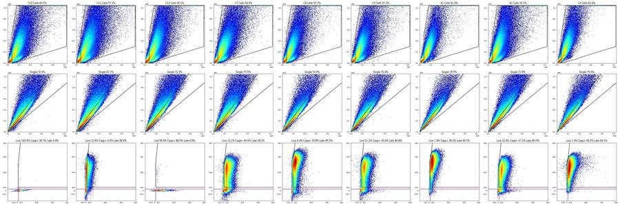
113
agent
Gates are final and saved; doing one zoomed visual check of the fluorescence gates, then writing `flags.csv` and `notes.md`.
114
tool call · Bash
cat > plot_gates2.py <<'EOF'
import pickle, numpy as np, matplotlib; matplotlib.use('Agg'); import matplotlib.pyplot as plt
from matplotlib.colors import LogNorm
import flowkit as fk
from build_gates import LATE,RL3_LIVE_MAX,BL1_POS
data=pickle.load(open('data.pkl','rb')); memb=pickle.load(open('memb.pkl','rb'))
lgl=fk.transforms.LogicleTransform(param_t=1048576,param_w=1.0,param_m=4.5,param_a=0)
A=lambda v: np.arcsinh(np.asarray(v,dtype=float)/150)
ticks=np.array([-1000,0,300,1000,1e4,1e5,1e6]); tl=['-1e3','0','300','1e3','1e4','1e5','1e6']
# polygon edges are straight in logicle space: densify there, then map back to raw
P=np.array(LATE+[LATE[0]]); Pl=lgl.apply(P)
dense=np.vstack([np.linspace(Pl[i],Pl[i+1],50) for i in range(len(Pl)-1)]); raw=lgl.inverse(dense)
ws=['C10','C11','C12','C7','C8','C9','A1','B2','C4','C1']
fig,axs=plt.subplots(2,5,figsize=(30,12))
for ax,w in zip(axs.flat,ws):
d=data[w]; m=memb[w]; s=m['Single_Cells']
ax.hist2d(A(d['BL1-A'][s]),A(d['RL3-A'][s]),bins=220,range=[[A(-1500),A(1.1e6)],[A(-3000),A(1.1e6)]],norm=LogNorm(),cmap='jet')
ax.plot(A(raw[:,0]),A(raw[:,1]),'k-',lw=1.5)
ax.axhline(A(RL3_LIVE_MAX),color='m',lw=1.5); ax.plot([A(BL1_POS)]*2,[A(-3000),A(RL3_LIVE_MAX)],'m-',lw=1.5)
ax.set_xlim(A(-1500),A(1.1e6)); ax.set_ylim(A(-3000),A(1.1e6))
ax.set_xticks(A(ticks)); ax.set_xticklabels(tl); ax.set_yticks(A(ticks)); ax.set_yticklabels(tl)
ax.set_title(f'{w} Live {100*m["Live"].sum()/s.sum():.1f}% Casp+ {100*m["Caspase_pos"].sum()/max(m["Live"].sum(),1):.1f}% Late {100*m["Late_apoptosis"].sum()/s.sum():.1f}%')
plt.tight_layout(); plt.savefig('gates_fl.png',dpi=50); plt.close()
EOF
python plot_gates2.py115
tool call · Read
{
"file_path": "/task/work/gates_fl.png"
}116
tool output
(Bash completed with no output)
117
tool output
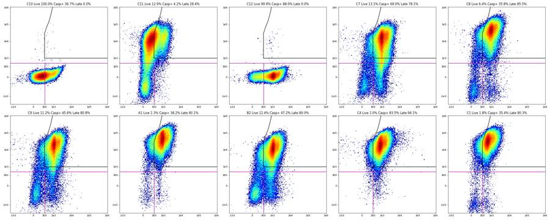
119
tool call · Bash
cat > make_flags.py <<'EOF'
import pickle, numpy as np, pandas as pd
data=pickle.load(open('data.pkl','rb')); memb=pickle.load(open('memb.pkl','rb'))
layout=pd.read_csv('/task/inputs/plate_layout.csv')
rows=[]; Q={}
for _,L in layout.iterrows():
w=L.well; d=data[w]; m=memb[w]; t=d['Time'].values; n=len(d)
h1,_=np.histogram(t,bins=np.arange(0,41,1.0)); med=np.median(h1)
h01,_=np.histogram(t,bins=np.arange(0,np.floor(t.max()*10)/10+1e-9,0.1)); low=(h01<0.25*np.median(h01)).mean()*100
h5,e5=np.histogram(t,bins=np.arange(0,41.5,0.5)); med5=np.median(h5[:80]); ok=np.where(h5>=0.5*med5)[0]
t0=e5[ok[0]]; t1=e5[ok[-1]+1]
idx=np.clip(np.digitize(t,e5)-1,0,len(e5)-2); nb=len(e5)-1
cells=np.bincount(idx,weights=m['Cells'].astype(float),minlength=nb)/np.maximum(h5,1)
pm=np.array([np.median(cells[max(0,i-6):i+7]) for i in range(nb)])
bad=(h5<0.6*med5)|(np.abs(cells-pm)>0.05); badpct=100*h5[bad].sum()/n
th=[(t<13.6),(t>=13.6)&(t<27.2),(t>=27.2)]
f=lambda num,den:[100*(m[num]&s).sum()/max((m[den]&s).sum(),1) for s in th]
live=f('Live','Single_Cells'); casp=f('Caspase_pos','Live'); late=f('Late_apoptosis','Single_Cells')
rev=np.where(np.diff(t)<0)[0]
q=dict(n=n,med=med,low=low,t0=t0,t1=t1,gap=np.diff(t).max() if len(rev)==0 else np.diff(t)[np.diff(t)>=0].max(),badpct=badpct,live=live,casp=casp,late=late,rev=rev,
nlive=int(m['Live'].sum()),ncasp=int(m['Caspase_pos'].sum()),nsing=int(m['Single_Cells'].sum()),
plive=100*m['Live'].sum()/m['Single_Cells'].sum(),pcasp=100*m['Caspase_pos'].sum()/max(m['Live'].sum(),1),plate=100*m['Late_apoptosis'].sum()/m['Single_Cells'].sum(),
sat=100*((d['FSC-A'].values>=1048575)|(d['SSC-A'].values>=1048575)).mean(), satfl=100*((d['BL1-A'].values>=1048575)|(d['RL3-A'].values>=1048575)).mean(),
tail=int((t>t1).sum()))
Q[w]=q
base=(f"{n} events over {t.max():.1f} s (median {med:.0f} ev/s); {low:.1f}% of 100-ms bins below 25% of median rate, longest gap {q['gap']:.2f} s; "
f"{badpct:.1f}% of events in disturbed 0.5-s bins; by thirds of the run Live {live[0]:.1f}/{live[1]:.1f}/{live[2]:.1f}% and Late_apoptosis {late[0]:.1f}/{late[1]:.1f}/{late[2]:.1f}% of Single_Cells, Caspase_pos {casp[0]:.1f}/{casp[1]:.1f}/{casp[2]:.1f}% of Live; "
f"{q['nsing']} Single_Cells, {q['nlive']} Live; scatter rail (FSC-A or SSC-A at 1048575) {q['sat']:.1f}% of events, BL1-A/RL3-A rail {q['satfl']:.2f}%.")
usable,cat,ev='yes','ok',base
if w in ('C1','C2'):
usable,cat='no','clog_or_interrupted_flow'
first=int((t<5).sum())
ev=(f"Interrupted/unstable flow: only {first} events in the first 5 s, rate does not reach 50% of the well median until {t0:.1f} s, "
f"{low:.1f}% of 100-ms bins below 25% of median rate (other wells 0-7.6%), longest gap {q['gap']:.2f} s, {badpct:.1f}% of events acquired in disturbed 0.5-s bins (other wells <=7.4%). "
f"Gated fractions drift with time: Caspase_pos {casp[0]:.1f}/{casp[1]:.1f}/{casp[2]:.1f}% of Live, Live {live[0]:.1f}/{live[1]:.1f}/{live[2]:.1f}% and Late_apoptosis {late[0]:.1f}/{late[1]:.1f}/{late[2]:.1f}% of Single_Cells in the three thirds of the run (stable within ~3 points in all other wells). {n} events total.")
else:
extra=[]
if len(rev):
extra.append(f"Note: file starts with a {rev[0]+1}-event prefix ({100*(rev[0]+1)/n:.1f}% of events, Time {t[:rev[0]+1].min():.2f}-{t[:rev[0]+1].max():.2f} s) before the clock restarts at {t[rev[0]+1]:.3f} s; no duplicated events and prefix composition matches the rest, so kept.")
if w in ('C7','C8','C9','C10','C11'):
extra.append("Note: repeated brief (<0.35 s) rate dropouts, but gated fractions are stable over time, so kept.")
if t1<=40.0:
extra.append(f"Note: event rate tails off from {t1:.1f} s (sample nearly exhausted before the end of the 137 uL draw); only {q['tail']} events ({100*q['tail']/n:.1f}%) after that point.")
if L.control_type=='transduction_gfp':
b=d['BL1-A'].values; s=m['Single_Cells']
extra.append(f"GFP control: BL1-A > 2e4 in {100*(b[s]>2e4).mean():.2f}% of Single_Cells (<=0.007% in non-GFP wells) and {q['pcasp']:.1f}% of Live above the BL1-A boundary, so Caspase_pos/Late_apoptosis here include GFP and are not caspase readouts; Live only {q['plive']:.2f}% of Single_Cells ({q['nlive']} events), consistent across C4-C6.")
if w=='C10':
extra.append(f"Unstained control behaves as expected on RL3-A: {q['plive']:.2f}% of Single_Cells in Live, {q['plate']:.2f}% in Late_apoptosis. Its 'Caspase_pos' ({q['pcasp']:.1f}% of Live) is autofluorescence of dead cells, which cannot be excluded from Live without Zombie NIR.")
if w=='C11':
extra.append(f"Zombie-only control: clear RL3-A negative and bright populations; Caspase_pos {q['pcasp']:.1f}% of Live (false-positive rate of the BL1-A boundary in live cells); Late_apoptosis {q['plate']:.1f}% of Single_Cells is BL1-A autofluorescence of Zombie-bright cells (background of that gate).")
if w=='C12':
extra.append(f"CellEvent-only control: {q['plive']:.2f}% of Single_Cells in Live and {q['plate']:.2f}% in Late_apoptosis (no Zombie signal, as expected); BL1-A bimodal, {q['pcasp']:.1f}% above the boundary.")
ev=base+(' '+' '.join(extra) if extra else '')
rows.append(dict(file=L.file,well=w,usable=usable,reason_category=cat,evidence=ev))
fl=pd.DataFrame(rows); fl.to_csv('/task/outputs/flags.csv',index=False)
print(fl.usable.value_counts());
for _,r in fl.iterrows(): print(r.well,r.usable,r.reason_category,'|',r.evidence[:400]);
EOF
python make_flags.py120
tool output
usable yes 34 no 2 Name: count, dtype: int64 A1 yes ok | 183353 events over 40.9 s (median 4566 ev/s); 0.0% of 100-ms bins below 25% of median rate, longest gap 0.01 s; 1.3% of events in disturbed 0.5-s bins; by thirds of the run Live 1.2/1.4/1.4% and Late_apoptosis 90.7/90.5/89.1% of Single_Cells, Caspase_pos 39.5/36.3/39.1% of Live; 87689 Single_Cells, 1165 Live; scatter rail (FSC-A or SSC-A at 1048575) 1.8% of events, BL1-A/RL3-A rail 0.06%. A2 yes ok | 221770 events over 40.9 s (median 5419 ev/s); 0.2% of 100-ms bins below 25% of median rate, longest gap 0.04 s; 0.0% of events in disturbed 0.5-s bins; by thirds of the run Live 4.5/4.7/4.6% and Late_apoptosis 87.2/86.8/86.1% of Single_Cells, Caspase_pos 30.9/27.9/29.9% of Live; 100430 Single_Cells, 4643 Live; scatter rail (FSC-A or SSC-A at 1048575) 2.5% of events, BL1-A/RL3-A rail 0.14%. A3 yes ok | 222545 events over 41.0 s (median 5569 ev/s); 0.2% of 100-ms bins below 25% of median rate, longest gap 0.02 s; 1.1% of events in disturbed 0.5-s bins; by thirds of the run Live 3.5/3.6/3.3% and Late_apoptosis 89.7/89.2/89.0% of Single_Cells, Caspase_pos 53.1/51.0/53.2% of Live; 111710 Single_Cells, 3887 Live; scatter rail (FSC-A or SSC-A at 1048575) 1.2% of events, BL1-A/RL3-A rail 0.06%. A4 yes ok | 160440 events over 41.1 s (median 4063 ev/s); 0.2% of 100-ms bins below 25% of median rate, longest gap 0.02 s; 1.2% of events in disturbed 0.5-s bins; by thirds of the run Live 3.4/3.4/3.1% and Late_apoptosis 90.2/89.8/89.6% of Single_Cells, Caspase_pos 33.6/30.2/33.5% of Live; 81473 Single_Cells, 2687 Live; scatter rail (FSC-A or SSC-A at 1048575) 2.3% of events, BL1-A/RL3-A rail 0.11%. A5 yes ok | 169911 events over 40.9 s (median 4246 ev/s); 0.7% of 100-ms bins below 25% of median rate, longest gap 0.07 s; 0.0% of events in disturbed 0.5-s bins; by thirds of the run Live 5.5/5.5/5.7% and Late_apoptosis 87.7/87.6/86.8% of Single_Cells, Caspase_pos 47.4/46.7/47.0% of Live; 83103 Single_Cells, 4593 Live; scatter rail (FSC-A or SSC-A at 1048575) 2.2% of events, BL1-A/RL3-A rail 0.01%. A6 yes ok | 230857 events over 40.9 s (median 5845 ev/s); 0.0% of 100-ms bins below 25% of median rate, longest gap 0.03 s; 3.8% of events in disturbed 0.5-s bins; by thirds of the run Live 7.2/7.3/7.3% and Late_apoptosis 86.6/86.2/85.6% of Single_Cells, Caspase_pos 25.4/25.7/27.1% of Live; 116005 Single_Cells, 8431 Live; scatter rail (FSC-A or SSC-A at 1048575) 1.8% of events, BL1-A/RL3-A rail 0.05%. A7 yes ok | 282723 events over 40.6 s (median 6984 ev/s); 1.0% of 100-ms bins below 25% of median rate, longest gap 0.07 s; 0.3% of events in disturbed 0.5-s bins; by thirds of the run Live 6.6/7.0/6.9% and Late_apoptosis 85.6/85.5/84.5% of Single_Cells, Caspase_pos 23.8/22.4/25.1% of Live; 125884 Single_Cells, 8596 Live; scatter rail (FSC-A or SSC-A at 1048575) 3.2% of events, BL1-A/RL3-A rail 0.11%. Note: f A8 yes ok | 236938 events over 40.9 s (median 5972 ev/s); 0.7% of 100-ms bins below 25% of median rate, longest gap 0.08 s; 1.3% of events in disturbed 0.5-s bins; by thirds of the run Live 10.6/10.3/10.3% and Late_apoptosis 81.8/82.4/81.7% of Single_Cells, Caspase_pos 32.9/32.3/32.0% of Live; 110657 Single_Cells, 11506 Live; scatter rail (FSC-A or SSC-A at 1048575) 3.6% of events, BL1-A/RL3-A rail 0.04%. A9 yes ok | 241833 events over 40.9 s (median 6100 ev/s); 1.0% of 100-ms bins below 25% of median rate, longest gap 0.05 s; 1.3% of events in disturbed 0.5-s bins; by thirds of the run Live 6.0/6.1/5.8% and Late_apoptosis 87.3/87.4/87.1% of Single_Cells, Caspase_pos 28.5/28.9/27.2% of Live; 117590 Single_Cells, 7005 Live; scatter rail (FSC-A or SSC-A at 1048575) 2.8% of events, BL1-A/RL3-A rail 0.06%. A10 yes ok | 335810 events over 40.6 s (median 8558 ev/s); 0.0% of 100-ms bins below 25% of median rate, longest gap 0.03 s; 0.9% of events in disturbed 0.5-s bins; by thirds of the run Live 3.8/3.8/3.7% and Late_apoptosis 89.3/89.4/88.5% of Single_Cells, Caspase_pos 23.5/24.3/23.3% of Live; 155712 Single_Cells, 5845 Live; scatter rail (FSC-A or SSC-A at 1048575) 2.2% of events, BL1-A/RL3-A rail 0.04%. A11 yes ok | 228556 events over 41.0 s (median 5718 ev/s); 1.0% of 100-ms bins below 25% of median rate, longest gap 0.09 s; 0.0% of events in disturbed 0.5-s bins; by thirds of the run Live 6.6/6.6/6.6% and Late_apoptosis 86.5/86.6/85.6% of Single_Cells, Caspase_pos 36.7/37.2/36.9% of Live; 104273 Single_Cells, 6882 Live; scatter rail (FSC-A or SSC-A at 1048575) 2.5% of events, BL1-A/RL3-A rail 0.03%. A12 yes ok | 330844 events over 40.9 s (median 8468 ev/s); 0.0% of 100-ms bins below 25% of median rate, longest gap 0.03 s; 3.6% of events in disturbed 0.5-s bins; by thirds of the run Live 5.2/5.2/4.9% and Late_apoptosis 88.4/88.4/88.0% of Single_Cells, Caspase_pos 32.3/32.9/35.1% of Live; 147928 Single_Cells, 7602 Live; scatter rail (FSC-A or SSC-A at 1048575) 2.4% of events, BL1-A/RL3-A rail 0.03%. B1 yes ok | 254845 events over 41.0 s (median 6484 ev/s); 1.5% of 100-ms bins below 25% of median rate, longest gap 0.09 s; 1.4% of events in disturbed 0.5-s bins; by thirds of the run Live 8.8/9.2/8.7% and Late_apoptosis 82.6/82.2/82.4% of Single_Cells, Caspase_pos 29.8/31.5/28.5% of Live; 114858 Single_Cells, 10209 Live; scatter rail (FSC-A or SSC-A at 1048575) 3.1% of events, BL1-A/RL3-A rail 0.06%. Note: B2 yes ok | 319449 events over 40.9 s (median 8010 ev/s); 2.5% of 100-ms bins below 25% of median rate, longest gap 0.14 s; 5.3% of events in disturbed 0.5-s bins; by thirds of the run Live 12.6/12.3/12.3% and Late_apoptosis 80.0/80.3/79.7% of Single_Cells, Caspase_pos 47.8/46.8/47.0% of Live; 137491 Single_Cells, 17067 Live; scatter rail (FSC-A or SSC-A at 1048575) 3.2% of events, BL1-A/RL3-A rail 0.01%. B3 yes ok | 275473 events over 40.9 s (median 6950 ev/s); 1.5% of 100-ms bins below 25% of median rate, longest gap 0.08 s; 2.8% of events in disturbed 0.5-s bins; by thirds of the run Live 10.9/10.9/10.8% and Late_apoptosis 82.6/82.7/82.1% of Single_Ce … [8,825 more characters not shown]
122
tool call · Bash
python - <<'EOF'
s=open('make_flags.py').read()
s=s.replace("(other wells 0-7.6%)","(other 34 wells <=7.6%)").replace("(other wells <=7.4%)","(other 34 wells <=8.2%)").replace("(stable within ~3 points in all other wells)","(each stays within ~4 percentage points in the other 34 wells)")
open('make_flags.py','w').write(s)
EOF
python make_flags.py > /dev/null && cat > validate.py <<'EOF'
import flowkit as fk, numpy as np, pandas as pd, warnings; warnings.filterwarnings('ignore')
from matplotlib.path import Path
from build_gates import CELLS,SINGLE,LATE,RL3_LIVE_MAX,BL1_POS
c=pd.read_csv('/task/outputs/counts.csv'); f=pd.read_csv('/task/outputs/flags.csv'); L=pd.read_csv('/task/inputs/plate_layout.csv')
print(c.shape, list(c.columns), f.shape, list(f.columns))
assert len(c)==180 and len(f)==36 and set(c.file)==set(L.file) and list(f.file)==list(L.file)
assert c.groupby('file').population.apply(list).apply(lambda x:x==['Cells','Single_Cells','Live','Caspase_pos','Late_apoptosis']).all()
assert ((f.usable=='yes')==(f.reason_category=='ok')).all(); print(f.reason_category.value_counts().to_dict())
assert c.pct_of_parent.between(0,100).all() and c['count'].dtype.kind=='i'
gs=fk.parse_gating_xml('/task/outputs/gates.xml'); print(gs.get_gate_ids())
for gname,gpath in gs.get_gate_ids():
g=gs.get_gate(gname,gpath); print(gname,type(g).__name__,[(d.id,d.compensation_ref,d.transformation_ref) for d in g.dimensions])
lgl=fk.transforms.LogicleTransform(param_t=1048576,param_w=1.0,param_m=4.5,param_a=0)
# independent recount with numpy on 3 wells + pct check on all
for w in ['A1','C7','C11','C4']:
fn=L.file[L.well==w].iloc[0]; s=fk.Sample('/task/inputs/raw/'+fn); d=s.as_dataframe(source='raw'); d.columns=[x[0] for x in d.columns]
cells=Path(CELLS).contains_points(d[['FSC-A','SSC-A']].values)
sing=cells&Path(SINGLE).contains_points(d[['SSC-H','SSC-A']].values)
live=sing&(d['RL3-A'].values<RL3_LIVE_MAX); casp=live&(d['BL1-A'].values>=BL1_POS)
late=sing&Path(lgl.apply(np.array(LATE,dtype=float))).contains_points(lgl.apply(d[['BL1-A','RL3-A']].values))
mine=[cells.sum(),sing.sum(),live.sum(),casp.sum(),late.sum()]; fkc=c[c.well==w]['count'].tolist()
print(w,'numpy',mine,'flowkit',fkc)
# pct consistency
tot={r.file:fk.Sample('/task/inputs/raw/'+r.file).event_count for r in L.itertuples()}
for fn,g in c.groupby('file'):
n=dict(zip(g.population,g['count'])); n['All_events']=tot[fn]
for r in g.itertuples():
exp=100*r.count/n[r.parent_population] if n[r.parent_population] else 0
assert abs(exp-r.pct_of_parent)<1e-3,(fn,r)
assert n['Cells']>=n['Single_Cells']>=n['Live']>=n['Caspase_pos'] and n['Late_apoptosis']<=n['Single_Cells']
print('all consistent'); print(open('/task/outputs/gates.xml').read()[:1500])
EOF
python validate.py123
tool output
(180, 6) ['file', 'well', 'population', 'count', 'parent_population', 'pct_of_parent'] (36, 5) ['file', 'well', 'usable', 'reason_category', 'evidence']
{'ok': 34, 'clog_or_interrupted_flow': 2}
[('Cells', ('root',)), ('Single_Cells', ('root', 'Cells')), ('Live', ('root', 'Cells', 'Single_Cells')), ('Caspase_pos', ('root', 'Cells', 'Single_Cells', 'Live')), ('Late_apoptosis', ('root', 'Cells', 'Single_Cells'))]
Cells PolygonGate [('FSC-A', 'uncompensated', None), ('SSC-A', 'uncompensated', None)]
Single_Cells PolygonGate [('SSC-H', 'uncompensated', None), ('SSC-A', 'uncompensated', None)]
Live RectangleGate [('BL1-A', 'uncompensated', 'logicle'), ('RL3-A', 'uncompensated', 'logicle')]
Caspase_pos RectangleGate [('BL1-A', 'uncompensated', 'logicle'), ('RL3-A', 'uncompensated', 'logicle')]
Late_apoptosis PolygonGate [('BL1-A', 'uncompensated', 'logicle'), ('RL3-A', 'uncompensated', 'logicle')]
A1 numpy [111773, 87687, 1165, 445, 79007] flowkit [111775, 87689, 1165, 445, 79021]
C7 numpy [184476, 130028, 17097, 11803, 101576] flowkit [184476, 130029, 17097, 11803, 101605]
C11 numpy [207810, 139392, 18023, 763, 39381] flowkit [207813, 139394, 18023, 763, 39558]
C4 numpy [143507, 114236, 1112, 928, 107475] flowkit [143508, 114237, 1112, 928, 107515]
all consistent
<?xml version='1.0' encoding='UTF-8'?>
<gating:Gating-ML xmlns:gating="http://www.isac-net.org/std/Gating-ML/v2.0/gating" xmlns:data-type="http://www.isac-net.org/std/Gating-ML/v2.0/datatypes" xmlns:transforms="http://www.isac-net.org/std/Gating-ML/v2.0/transformations">
<transforms:transformation transforms:id="logicle">
<transforms:logicle transforms:T="1048576" transforms:W="1.0" transforms:M="4.5" transforms:A="0"/>
</transforms:transformation>
<gating:PolygonGate gating:id="Cells">
<gating:dimension gating:compensation-ref="uncompensated">
<data-type:fcs-dimension data-type:name="FSC-A"/>
</gating:dimension>
<gating:dimension gating:compensation-ref="uncompensated">
<data-type:fcs-dimension data-type:name="SSC-A"/>
</gating:dimension>
<gating:vertex>
<gating:coordinate data-type:value="75000.0"/>
<gating:coordinate data-type:value="5000.0"/>
</gating:vertex>
<gating:vertex>
<gating:coordinate data-type:value="75000.0"/>
<gating:coordinate data-type:value="500000.0"/>
</gating:vertex>
<gating:vertex>
<gating:coordinate data-type:value="160000.0"/>
<gating:coordinate data-type:value="1040000.0"/>
</gating:vertex>
<gating:vertex>
<gating:coordinate data-type:value="1040000.0"/>
<gating:coordinate data-type:value="1040000.0"/>
</gating:vertex>
<gating:vertex>
<gating:coordinate data-type:value="1040000.0"/>
<gating:coordinate data-type:value="125
agent
Deliverables validate; one refinement: BL1/RL3 values are integers, so I'm moving gate edges to half-integers so no event sits exactly on an edge, then re-exporting and writing the notes.
126
tool call · Bash
python - <<'EOF'
s=open('build_gates.py').read()
s=s.replace("FSC_MIN=75e3; TOP=1.04e6","FSC_MIN=75000.5; TOP=1040000.5")
s=s.replace("CELLS=[(75e3,5e3),(75e3,5.0e5),","CELLS=[(FSC_MIN,5e3),(FSC_MIN,5.0e5),")
s=s.replace("RL3_LIVE_MAX=500.; BL1_POS=300.; RL3_BRIGHT=1000.","RL3_LIVE_MAX=499.5; BL1_POS=299.5; RL3_BRIGHT=999.5 # half-integers: channel values are integers, so no event lies on an edge")
open('build_gates.py','w').write(s)
EOF
grep -n "FSC_MIN\|RL3_LIVE_MAX=" build_gates.py | head; python build_gates.py | sed -n '1,40p' && python make_flags.py >/dev/null && python validate.py | sed -n '1,14p'127
tool output
8:FSC_MIN=75000.5; TOP=1040000.5 # debris valley on FSC-A; just below the 1048575 saturation rail
9:CELLS=[(FSC_MIN,5e3),(FSC_MIN,5.0e5),(1.6e5,TOP),(TOP,TOP),(TOP,3.0e5),(5.0e5,1.3e5),(3.0e5,6.0e4),(1.5e5,2.0e4),(1.0e5,5e3)]
13:RL3_LIVE_MAX=499.5; BL1_POS=299.5; RL3_BRIGHT=999.5 # half-integers: channel values are integers, so no event lies on an edge
[('Cells', ('root',)), ('Single_Cells', ('root', 'Cells')), ('Live', ('root', 'Cells', 'Single_Cells')), ('Caspase_pos', ('root', 'Cells', 'Single_Cells', 'Live')), ('Late_apoptosis', ('root', 'Cells', 'Single_Cells'))]
population Cells Single_Cells Live Caspase_pos Late_apoptosis
well
A1 111773 87687 1165 445 79022
A2 134454 100430 4643 1373 87076
A3 140900 111708 3887 2037 99777
A4 103813 81472 2687 870 73219
A5 105128 83103 4593 2161 72594
A6 147134 116002 8430 2194 99960
A7 171624 125883 8596 2036 107315
A8 147917 110656 11506 3725 90704
A9 153607 117589 7005 1979 102627
A10 207025 155710 5845 1386 138775
A11 134574 104272 6882 2540 89913
A12 196854 147928 7602 2534 130602
B1 152698 114857 10209 3069 94622
B2 188929 137490 17067 8060 110057
B3 169739 125901 13655 5293 103854
B4 130250 101588 3886 1354 89654
B5 133077 103356 5978 2259 89418
B6 218786 162371 10854 5087 140523
B7 114919 93525 3396 1248 84331
B8 249845 184934 7466 4070 165511
B9 133666 104700 4075 1679 93951
B10 111984 90447 3051 1036 80232
B11 168363 131375 5912 3059 117195
B12 176473 138064 5770 3391 124241
C1 158804 114689 2093 740 103526
C2 195129 142746 5339 2347 128796
C3 256919 184786 10670 6497 161749
C4 143507 114236 1112 928 107515
C5 130241 103961 1328 1110 97767
C6 116800 95099 750 656 90739
C7 184476 130028 17097 11803 101604
C8 119676 89331 5705 2045 76397
C9 127125 91979 10276 4687 74292
C10 166525 120398 120350 44178 18
C11 207810 139392 18023 763 39565
C12 181791 130031 129963 114357 50
population Cells Single_Cells Live Caspase_pos Late_apoptosis
(180, 6) ['file', 'well', 'population', 'count', 'parent_population', 'pct_of_parent'] (36, 5) ['file', 'well', 'usable', 'reason_category', 'evidence']
{'ok': 34, 'clog_or_interrupted_flow': 2}
[('Cells', ('root',)), ('Single_Cells', ('root', 'Cells')), ('Live', ('root', 'Cells', 'Single_Cells')), ('Caspase_pos', ('root', 'Cells', 'Single_Cells', 'Live')), ('Late_apoptosis', ('root', 'Cells', 'Single_Cells'))]
Cells PolygonGate [('FSC-A', 'uncompensated', None), ('SSC-A', 'uncompensated', None)]
Single_Cells PolygonGate [('SSC-H', 'uncompensated', None), ('SSC-A', 'uncompensated', None)]
Live RectangleGate [('BL1-A', 'uncompensated', 'logicle'), ('RL3-A', 'uncompensated', 'logicle')]
Caspase_pos RectangleGate [('BL1-A', 'uncompensated', 'logicle'), ('RL3-A', 'uncompensated', 'logicle')]
Late_apoptosis PolygonGate [('BL1-A', 'uncompensated', 'logicle'), ('RL3-A', 'uncompensated', 'logicle')]
A1 numpy [111773, 87687, 1165, 445, 79022] flowkit [111773, 87687, 1165, 445, 79022]
C7 numpy [184476, 130028, 17097, 11803, 101604] flowkit [184476, 130028, 17097, 11803, 101604]
C11 numpy [207810, 139392, 18023, 763, 39565] flowkit [207810, 139392, 18023, 763, 39565]
C4 numpy [143507, 114236, 1112, 928, 107515] flowkit [143507, 114236, 1112, 928, 107515]
all consistent
<?xml version='1.0' encoding='UTF-8'?>129
tool call · Bash
python - <<'EOF'
import pandas as pd, re
f=pd.read_csv('/task/outputs/flags.csv')
low=f.evidence.str.extract(r'([\d.]+)% of 100-ms bins')[0].astype(float); bad=f.evidence.str.extract(r'([\d.]+)% of events (?:acquired )?in disturbed')[0].astype(float)
ok=f.usable=='yes'; print('max low ok',low[ok].max(),'max bad ok',bad[ok].max())
for w in ['C1','C2','A7','C8','C5','C11']: print(w, f.evidence[f.well==w].iloc[0],'\n')
c=pd.read_csv('/task/outputs/counts.csv'); p=c.pivot(index='well',columns='population',values='pct_of_parent')
s=p.drop(['C1','C2','C4','C5','C6','C10','C11','C12']); print(s.describe().loc[['min','max']].round(1))
EOF
ls -la /task/outputs130
tool output
max low ok 7.6 max bad ok 8.2 C1 Interrupted/unstable flow: only 259 events in the first 5 s, rate does not reach 50% of the well median until 7.0 s, 30.2% of 100-ms bins below 25% of median rate (other 34 wells <=7.6%), longest gap 1.29 s, 45.1% of events acquired in disturbed 0.5-s bins (other 34 wells <=8.2%). Gated fractions drift with time: Caspase_pos 55.2/34.8/30.8% of Live, Live 3.0/1.8/1.7% and Late_apoptosis 88.1/92.6/88.2% of Single_Cells in the three thirds of the run (each stays within ~4 percentage points in the other 34 wells). 250794 events total. C2 Interrupted/unstable flow: only 504 events in the first 5 s, rate does not reach 50% of the well median until 7.5 s, 21.5% of 100-ms bins below 25% of median rate (other 34 wells <=7.6%), longest gap 0.41 s, 21.7% of events acquired in disturbed 0.5-s bins (other 34 wells <=8.2%). Gated fractions drift with time: Caspase_pos 64.3/38.0/41.9% of Live, Live 5.1/3.4/3.7% and Late_apoptosis 89.2/92.1/88.6% of Single_Cells in the three thirds of the run (each stays within ~4 percentage points in the other 34 wells). 305451 events total. A7 282723 events over 40.6 s (median 6984 ev/s); 1.0% of 100-ms bins below 25% of median rate, longest gap 0.07 s; 0.3% of events in disturbed 0.5-s bins; by thirds of the run Live 6.6/7.0/6.9% and Late_apoptosis 85.6/85.5/84.5% of Single_Cells, Caspase_pos 23.8/22.4/25.1% of Live; 125883 Single_Cells, 8596 Live; scatter rail (FSC-A or SSC-A at 1048575) 3.2% of events, BL1-A/RL3-A rail 0.11%. Note: file starts with a 3638-event prefix (1.3% of events, Time 3.41-3.96 s) before the clock restarts at 0.013 s; no duplicated events and prefix composition matches the rest, so kept. C8 214991 events over 40.8 s (median 5621 ev/s); 6.9% of 100-ms bins below 25% of median rate, longest gap 0.32 s; 8.2% of events in disturbed 0.5-s bins; by thirds of the run Live 6.3/6.6/6.2% and Late_apoptosis 85.9/85.7/84.8% of Single_Cells, Caspase_pos 34.1/37.2/36.3% of Live; 89331 Single_Cells, 5705 Live; scatter rail (FSC-A or SSC-A at 1048575) 2.9% of events, BL1-A/RL3-A rail 0.27%. Note: repeated brief (<0.35 s) rate dropouts, but gated fractions are stable over time, so kept. Note: event rate tails off from 38.5 s (sample nearly exhausted before the end of the 137 uL draw); only 1857 events (0.9%) after that point. C5 206789 events over 40.9 s (median 5240 ev/s); 2.2% of 100-ms bins below 25% of median rate, longest gap 0.04 s; 4.3% of events in disturbed 0.5-s bins; by thirds of the run Live 1.3/1.2/1.3% and Late_apoptosis 94.4/94.2/93.4% of Single_Cells, Caspase_pos 86.1/82.4/82.1% of Live; 103961 Single_Cells, 1328 Live; scatter rail (FSC-A or SSC-A at 1048575) 1.8% of events, BL1-A/RL3-A rail 0.03%. Note: event rate tails off from 39.5 s (sample nearly exhausted before the end of the 137 uL draw); only 1590 events (0.8%) after that point. GFP control: BL1-A > 2e4 in 0.07% of Single_Cells (<=0.007% in non-GFP wells) and 83.6% of Live above the BL1-A boundary, so Caspase_pos/Late_apoptosis here include GFP and are not caspase readouts; Live only 1.28% of Single_Cells (1328 events), consistent across C4-C6. C11 364071 events over 40.9 s (median 9127 ev/s); 7.6% of 100-ms bins below 25% of median rate, longest gap 0.14 s; 4.9% of events in disturbed 0.5-s bins; by thirds of the run Live 12.5/12.9/13.4% and Late_apoptosis 27.1/28.8/29.3% of Single_Cells, Caspase_pos 3.5/4.7/4.6% of Live; 139392 Single_Cells, 18023 Live; scatter rail (FSC-A or SSC-A at 1048575) 4.3% of events, BL1-A/RL3-A rail 0.09%. Note: repeated brief (<0.35 s) rate dropouts, but gated fractions are stable over time, so kept. Zombie-only control: clear RL3-A negative and bright populations; Caspase_pos 4.2% of Live (false-positive rate of the BL1-A boundary in live cells); Late_apoptosis 28.4% of Single_Cells is BL1-A autofluorescence of Zombie-bright cells (background of that gate). population Caspase_pos Cells Late_apoptosis Live Single_Cells min 23.7 55.7 78.1 1.3 70.5 max 69.0 64.7 90.2 13.1 81.4 total 52 drwxr-xr-x 2 root root 4096 Nov 10 19:27 . drwxr-xr-x 5 root root 4096 Nov 10 19:13 .. -rw-r--r-- 1 root root 14829 Nov 10 19:28 counts.csv -rw-r--r-- 1 root root 19928 Nov 10 19:28 flags.csv -rw-r--r-- 1 root root 6122 Nov 10 19:28 gates.xml
132
tool call · Bash
python - <<'EOF'
import pickle, numpy as np
data=pickle.load(open('data.pkl','rb')); memb=pickle.load(open('memb.pkl','rb'))
r1=[];r2=[];r3=[];r4=[]
for w,d in data.items():
if w in ('C10','C11','C12','C4','C5','C6','C1','C2'): continue
s=memb[w]['Single_Cells']; b=d['BL1-A'].values; r=d['RL3-A'].values
live=s&(r<499.5)
r1.append(((live&(b>=400)).sum())/(live&(b>=299.5)).sum())
r2.append((s&(r<299.5)).sum()/live.sum()); r3.append((s&(r<699.5)).sum()/live.sum())
late=memb[w]['Late_apoptosis']; r4.append((late&(b>=400)).sum()/late.sum())
f=lambda x:(round(min(x),2),round(float(np.median(x)),2),round(max(x),2))
print('Casp count ratio thr400/300',f(r1)); print('Live ratio edge300/500',f(r2),'edge700/500',f(r3)); print('Late ratio BL1 400/300',f(r4))
EOF133
tool output
Casp count ratio thr400/300 (0.85, 0.9, 0.95) Live ratio edge300/500 (0.78, 0.87, 0.93) edge700/500 (1.05, 1.11, 1.22) Late ratio BL1 400/300 (0.96, 0.97, 0.98)
134
tool call · Write
{
"file_path": "/task/outputs/notes.md",
"content": "# Gating notes \u2014 Caspase_KO_RNAswap-rep2 (36 wells, one gate set)\n\nAll gates use raw, uncompensated detector values. Scatter gates are on linear axes; BL1-A / RL3-A gates are stored on a logicle axis (T=1048576, W=1.0, M=4.5, A=0). Coordinates below are raw instrument units. `counts.csv` is `gate_sample` output of the saved, reloaded `gates.xml`; an independent NumPy recount matched exactly on 4 wells.\n\n## Gate placement\n| Gate | Boundary | Why |\n|---|---|---|\n| **Cells** (polygon, FSC-A \u00d7 SSC-A) | FSC-A > 75,000; both axes < 1,040,000; loose slanted upper-left and lower-right edges | The FSC-A histogram has a debris peak at ~30k and a cell peak at ~120k, with the valley at 75\u201385k in every well checked. The slanted edges only remove baseline-artefact events (negative or near-zero SSC-A). Keeps both the high-SSC diagonal cloud and the low-SSC intact-cell cluster. 56\u201365 % of events. |\n| **Single_Cells** (polygon, SSC-H \u00d7 SSC-A) | 0.85\u00b7H \u2212 3,000 \u2264 A \u2264 1.35\u00b7H + 5,000 | The SSC-A/SSC-H ratio peaks at 1.08; the tight band ends at a kink near 1.3, above which a broad fan (high area for the height) follows. 70\u201381 % of Cells. |\n| **Live** (rectangle) | RL3-A < 499.5; BL1-A unrestricted; lower bounds \u2212100,000 | In C11 the Zombie-negative cluster is centred at about \u2212150 and its mirrored upper half ends by ~+500. Unstained cells (C10, C12) top out at 280 (99.9th percentile), so 99.95 % of them fall in Live. |\n| **Caspase_pos** (rectangle, in Live) | BL1-A \u2265 299.5; same RL3-A range as Live | Live cells in stained wells are bimodal on BL1-A (modes ~75 and ~600\u2013900); the valley is at 200\u2013350 in C7\u2013C9 and in sample wells. C12 shows the same two groups (shoulder < 300, main peak ~1,050). Zombie-only live cells (C11) give 4.2 % above this boundary. |\n| **Late_apoptosis** (polygon, in Single_Cells) | RL3-A \u2265 999.5; left edge at BL1-A 299.5 up to RL3-A 30,000, then leaning right (400 at 7e4, 550 at 1.5e5); open to the top and right | Lower edge sits 2\u00d7 above the Live edge, leaving the intermediate band (500\u20131,000; 0.4\u20135 % of Single_Cells) unreported. Left edge is the Caspase_pos boundary. |\n\nEdges are at half-integers because channel values are integers, so no event lies on an edge.\n\n## Deviations from `gating_strategy.md`\n- **Late_apoptosis left edge leans right above RL3-A 30,000.** In C11 (no CellEvent) the BL1-A autofluorescence of Zombie-bright cells rises with RL3-A (median 180 at 2\u20135k, 540 at 100\u2013200k). The lean follows this and costs \u2264 5 % of events in those bands in fully stained wells. Below 30,000 the edge is the same vertical boundary as Caspase_pos.\n- **Events on the scatter saturation rail (FSC-A or SSC-A = 1,048,575) are excluded from Cells.** This is 1.2\u20134.3 % of events per well. Their true size is unknown and they cannot be assessed on the singlet plot.\n- No other deviation: hierarchy, shapes, channels and \"no compensation\" are as written.\n\n## Things to know when reading the counts\n- **The BL1-A boundary is the main judgement call.** It separates the two populations seen in live cells, but it sits inside the autofluorescence of *dead* cells: C11 (no CellEvent) still shows 28 % of Single_Cells in Late_apoptosis, and C10 (no dyes) shows 37 % of \"Live\" as Caspase_pos, because without Zombie NIR its Live gate contains dead cells. A boundary that cleared unstained dead cells (~2,000\u20133,000) would cut through the CellEvent-shifted peak (~1,000) and give far lower Caspase_pos and Late_apoptosis counts.\n- **Sensitivity** (27 usable non-control wells, median change in count): BL1-A boundary 300 \u2192 400 lowers Caspase_pos by 10 % and Late_apoptosis by 3 %; Live edge 500 \u2192 300 lowers Live by 13 %, 500 \u2192 700 raises it by 11 %. The Zombie-negative and Zombie-bright populations are not separated by an empty valley, so the Live count depends on this edge.\n- **Live cells are a small fraction everywhere** (1.3\u201313 % of Single_Cells), and replicates differ by up to 3-fold (e.g. A1 1.3 % vs A2 4.6 %).\n- **GFP wells C4\u2013C6:** 83\u201387 % of Live is above the BL1-A boundary and Live is only 0.8\u20131.3 % of Single_Cells. Their Caspase_pos and Late_apoptosis counts include GFP and are not caspase readouts. They were not used to set any boundary.\n\n## Flags\n- **C1 and C2 \u2014 not usable, `clog_or_interrupted_flow`.** Almost no events in the first 5 s (259 and 504), erratic rate afterwards (30 % and 22 % of 100-ms bins nearly empty; other wells \u2264 7.6 %), and Caspase_pos drifts during the run (C1 55 \u2192 31 %, C2 64 \u2192 38\u201342 % of Live). C3 is the only clean replicate of 3945_3503.\n- **All other 34 wells \u2014 usable.** Observations recorded in `flags.csv` but not judged disqualifying:\n - C7\u2013C11 have repeated brief rate dropouts (< 0.35 s); gated fractions are stable over time.\n - B1, B3, B9, B11, C5, C6, C8 tail off 1\u20132.5 s before the end of the draw (\u2264 1 % of events).\n - A7 and B8 begin with a ~0.55 s prefix before the clock restarts (1.3 % and 2.0 % of events, not duplicates, same composition).\n- No well was short of events (smallest Live population: 750 events, C6) and fluorescence saturation is \u2264 0.27 % of events.\n"
}135
tool output
File created successfully at: /task/outputs/notes.md (file state is current in your context — no need to Read it back)
137
tool call · Bash
cd /task/outputs && python - <<'EOF'
s=open('notes.md').read()
s=s.replace("(27 usable non-control wells, median change in count)","(28 usable, fully stained, non-GFP wells; median change in count)")
s=s.replace("tail off 1–2.5 s before the end of the draw (≤ 1 % of events)","tail off 1–2.5 s before the end of the draw (≤ 1.1 % of events)")
s=s.replace("costs ≤ 5 % of events in those bands in fully stained wells","costs about 5 % of the events in those bands in fully stained wells")
open('notes.md','w').write(s)
EOF
wc -w notes.md; python -c "
import flowkit as fk, pandas as pd
g=fk.parse_gating_xml('/task/outputs/gates.xml'); print(len(g.get_gate_ids()),'gates reload')
c=pd.read_csv('/task/outputs/counts.csv'); f=pd.read_csv('/task/outputs/flags.csv'); print(c.shape,f.shape,f[f.usable=='no'][['well','reason_category']].values.tolist())
print(c.head(5).to_string())"; ls -la /task/outputs138
tool output
882 notes.md
5 gates reload
(180, 6) (36, 5) [['C1', 'clog_or_interrupted_flow'], ['C2', 'clog_or_interrupted_flow']]
file well population count parent_population pct_of_parent
0 Caspase_KO_RNAswap-rep2_caspase_Group_A1.fcs A1 Cells 111773 All_events 60.9606
1 Caspase_KO_RNAswap-rep2_caspase_Group_A1.fcs A1 Single_Cells 87687 Cells 78.4510
2 Caspase_KO_RNAswap-rep2_caspase_Group_A1.fcs A1 Live 1165 Single_Cells 1.3286
3 Caspase_KO_RNAswap-rep2_caspase_Group_A1.fcs A1 Caspase_pos 445 Live 38.1974
4 Caspase_KO_RNAswap-rep2_caspase_Group_A1.fcs A1 Late_apoptosis 79022 Single_Cells 90.1183
total 60
drwxr-xr-x 2 root root 4096 Nov 10 19:29 .
drwxr-xr-x 5 root root 4096 Nov 10 19:13 ..
-rw-r--r-- 1 root root 14829 Nov 10 19:28 counts.csv
-rw-r--r-- 1 root root 19928 Nov 10 19:28 flags.csv
-rw-r--r-- 1 root root 6122 Nov 10 19:28 gates.xml
-rw-r--r-- 1 root root 5166 Nov 10 19:29 notes.md139
agent
All four deliverables are in `/task/outputs/`. Two wells, C1 and C2, are flagged as not usable; the other 34 are usable. `gates.xml` reloads with `parse_gating_xml`, and `counts.csv` (180 rows) is the output of the reloaded gates on every file.
## Gates (raw units, one set for all wells)
| Population | Boundary | Basis |
|---|---|---|
| `Cells` | FSC-A > 75,000, both axes below the saturation rail | valley between the debris peak (~30k) and the cell peak (~120k) |
| `Single_Cells` | SSC-A between 0.85× and 1.35× SSC-H | tight diagonal band; ratio peaks at 1.08 |
| `Live` | RL3-A < 500 | upper end of the Zombie-negative cluster in C11; 99.95 % of unstained cells fall inside |
| `Caspase_pos` | BL1-A ≥ 300 | valley between the two BL1-A modes of live cells (~75 and ~600–900) |
| `Late_apoptosis` | RL3-A ≥ 1,000 and BL1-A ≥ 300, left edge leaning right above RL3-A 30,000 | same BL1-A boundary; the lean follows autofluorescence in C11 |
Across the 28 usable, fully stained, non-GFP wells, the percentages are:
- **Live:** 1.3–13 % of singlets.
- **Caspase_pos:** 24–69 % of Live.
- **Late_apoptosis:** 78–90 % of singlets.
## Flags
- **C1 and C2: not usable, `clog_or_interrupted_flow`.** Both have almost no events in the first 5 s (259 and 504) and an erratic rate afterwards. Caspase_pos drifts during the run (C1 55 → 31 % of Live; C2 64 → 38–42 %). That leaves C3 as the only clean replicate of 3945_3503.
- **Other 34 wells: usable.** `flags.csv` records the following for these wells, none of which I judged disqualifying:
- C7–C11 have brief rate dropouts.
- B1, B3, B9, B11, C5, C6 and C8 tail off 1–2.5 s before the end of the draw.
- A7 and B8 have a short prefix before the clock restarts.
## Things to know before using the counts
- **The BL1-A boundary is the main judgement call.** It splits the two populations seen in live cells, but it sits inside the autofluorescence of dead cells. As a result, C11 (no CellEvent) still shows 28 % of singlets in `Late_apoptosis`, and C10 (unstained) shows 37 % of "Live" as `Caspase_pos`. A boundary clear of that autofluorescence (~2,000–3,000) would cut through the CellEvent-shifted peak and give far lower counts. If the scientist gated that way, my `Caspase_pos` and `Late_apoptosis` numbers will be much higher than theirs.
- **Live depends on the RL3-A edge.** There is no empty valley between Zombie-negative and Zombie-bright; moving the edge from 500 to 300 or 700 changes Live by about −13 % or +11 %.
- **GFP wells C4–C6** have 83–87 % of Live above the BL1-A boundary, so their `Caspase_pos` and `Late_apoptosis` counts include GFP and are not caspase readouts.
## Deviations from `gating_strategy.md`
- The `Late_apoptosis` left edge leans right at high RL3-A, as described above.
- Events on the scatter saturation rail (1.2–4.3 % of events per well) are excluded from `Cells`.
Both are explained in `notes.md`.
Files are in `/task/outputs/`:
- `gates.xml`
- `counts.csv`
- `flags.csv`
- `notes.md`
final result
All four deliverables are in `/task/outputs/`. Two wells, C1 and C2, are flagged as not usable; the other 34 are usable. `gates.xml` reloads with `parse_gating_xml`, and `counts.csv` (180 rows) is the output of the reloaded gates on every file. ## Gates (raw units, one set for all wells) | Population | Boundary | Basis | |---|---|---| | `Cells` | FSC-A > 75,000, both axes below the saturation rail | valley between the debris peak (~30k) and the cell peak (~120k) | | `Single_Cells` | SSC-A between 0.85× and 1.35× SSC-H | tight diagonal band; ratio peaks at 1.08 | | `Live` | RL3-A < 500 | upper end of the Zombie-negative cluster in C11; 99.95 % of unstained cells fall inside | | `Caspase_pos` | BL1-A ≥ 300 | valley between the two BL1-A modes of live cells (~75 and ~600–900) | | `Late_apoptosis` | RL3-A ≥ 1,000 and BL1-A ≥ 300, left edge leaning right above RL3-A 30,000 | same BL1-A boundary; the lean follows autofluorescence in C11 | Across the 28 usable, fully stained, non-GFP wells, the percentages are: - **Live:** 1.3–13 % of singlets. - **Caspase_pos:** 24–69 % of Live. - **Late_apoptosis:** 78–90 % of singlets. ## Flags - **C1 and C2: not usable, `clog_or_interrupted_flow`.** Both have almost no events in the first 5 s (259 and 504) and an erratic rate afterwards. Caspase_pos drifts during the run (C1 55 → 31 % of Live; C2 64 → 38–42 %). That leaves C3 as the only clean replicate of 3945_3503. - **Other 34 wells: usable.** `flags.csv` records the following for these wells, none of which I judged disqualifying: - C7–C11 have brief rate dropouts. - B1, B3, B9, B11, C5, C6 and C8 tail off 1–2.5 s before the end of the draw. - A7 and B8 have a short prefix before the clock restarts. ## Things to know before using the counts - **The BL1-A boundary is the main judgement call.** It splits the two populations seen in live cells, but it sits inside the autofluorescence of dead cells. As a result, C11 (no CellEvent) still shows 28 % of singlets in `Late_apoptosis`, and C10 (unstained) shows 37 % of "Live" as `Caspase_pos`. A boundary clear of that autofluorescence (~2,000–3,000) would cut through the CellEvent-shifted peak and give far lower counts. If the scientist gated that way, my `Caspase_pos` and `Late_apoptosis` numbers will be much higher than theirs. - **Live depends on the RL3-A edge.** There is no empty valley between Zombie-negative and Zombie-bright; moving the edge from 500 to 300 or 700 changes Live by about −13 % or +11 %. - **GFP wells C4–C6** have 83–87 % of Live above the BL1-A boundary, so their `Caspase_pos` and `Late_apoptosis` counts include GFP and are not caspase readouts. ## Deviations from `gating_strategy.md` - The `Late_apoptosis` left edge leans right at high RL3-A, as described above. - Events on the scatter saturation rail (1.2–4.3 % of events per well) are excluded from `Cells`. Both are explained in `notes.md`. Files are in `/task/outputs/`: - `gates.xml` - `counts.csv` - `flags.csv` - `notes.md`